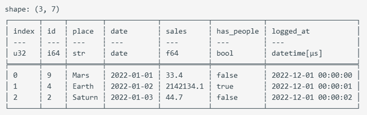

Polars Rust API tutorial
For Polars 0.43.1 作者：张德龙 zdlldine@gmail.com
本项目为学习Polars Rust API时所做的笔记。整理成book，供大家学习。本文文档解释了绝大多数的API，你可以通过本文档的指引完成绝大部分事务。
This project is a note taken while learning the Polars Rust API. Organize it into a book for everyone to learn.This document explains the vast majority of the APIs, and you can accomplish most tasks by following the guidance provided in this document.
Polars Rust API Tutorial
For Polars 0.43.1
Authors：Zhang Delong zdlldine@gmail.com
2024-10-4
This project is a note taken while learning the Polars Rust API. Organize it into a book for everyone to learn.
Why use Polars Rust API? To give your Rust program high performance data processing capabilities on its own. Without the need to embed a Python environment for your program.
Compile feature settings
#cargo.toml recommended dependencies, Polars supports more features that will result in slower compilation.
[dependencies]
polars = {version="0.43.0",features=["mode","find_many","polars-io","csv","polars-ops","lazy","docs-selection","streaming","regex","temporal","is_unique","is_between","dtype-date","dtype-datetime","dtype-time","dtype-duration","dtype-categorical","rows","is_in","pivot"]}
polars-io = "0.43.0"
polars-lazy = "0.43.0"
A complete list of features: https://docs.rs/crate/polars/latest/features
| Commonly used features | Meaning |
|---|---|
| lazy | Enable the lazy API |
| regex | Support for regular regex in col() expressions |
| sql | SQL queries are supported |
| streaming | Enable data flows, which allow you to process more data than you can in memory. |
| random | Generate a randomly sampled array. |
| timezones | Time zone support |
| strings | String extraction tool |
| object | ObjectChunked, an arbitrary data type, is supported, and it uses Any trait to handle different types. |
| json | Support serialization and deserialization of JSON |
| serde | Serialization and deserialization of the SERDE library are supported |
| serde-lazy | Serialization and deserialization of the SERDE library are supported |
| sort_multiple | Multi-column sorting is supported |
| rows | Create a DataFrame from a row and extract rows from a DataFrame. Activate pivot and transpose operations. |
| The meaning of this sentence: | |
| asof_join | Supports ASOF connection1 operation. |
| cross_join | Create two DataFrames of Cartesian product2. |
| is_in | Check whether the value is in the series |
| is_between | Determine whether it is between the upper and lower bounds. |
| zip_with | Zip the two series. |
| arg_where | Returns indexes that meet the criteria |
| unique_counts | Unique value counting is supported |
| rank | Calculate the rank |
| interpolate | Interpolates the missing values of Series |
In data processing, "joining" refers to merging two or more datasets together according to some shared key or column. Typically, this connection requires that the values of the keys must match exactly. However, ASOF connection is a special type of connection that does not require the exact match of the key values, but allows the connection to be made according to the nearest key. This is especially useful when working with time series data, as you may want to connect the data to the closest point in time, rather than an exact match. For example, if you have a piece of data that contains stock prices, and each row of data has a timestamp, you may want to connect this data with another piece of data that contains economic indicators, which also has a timestamp, but the timestamps may not exactly match.
In data processing, the Cartesian product refers to all possible combinations of two datasets. For example, if you have two DataFrames, one containing rows A and B, and the other containing rows 1 and 2, the Cartesian product of these two DataFrames will contain four rows: (A, 1), (A, 2), (B, 1), (B, 2).
Basic concepts
Polars is a data analytics library written in Rust. Polars relies on the following data structures: Series, and ChunkedArray<T>, DataFrame, and lazyframe.
A DataFrame is a series of two-dimensional data structures that can be thought of as tables of data made up of rows and columns (columns, called "fields" in data science). What you can do on a DataFrame is very similar to a query in SQL. YOU CAN GROUP, JOIN, PIVOT1, etc. Dataframes can be thought of as an abstraction of Vec<Series> , with each column corresponding to a Series. Series only holds Arc<dyn SeriesTrait>. The ChunkedArray<T> type implements SeriesTrait. Series is a column data representation of the obscure type of Polars. Some operations that are not related to data types are provided by Series and SeriesTrait, such as indexing and renaming operations. Operations related to data types must be downgraded to ChunkedArray<T>, the underlying data structure of the Series. ChunkedArray<T>, which is a chunked array, is similar to Vec<dyn ArrowArray> at the bottom layer, and chunking is conducive to parallel operation of data. This is the underlying data structure of Polars and implements a number of operations. Most operations are defined in chunked_array::ops or implemented on a ChunkedArray structure.
In data processing, "pivot" refers to pivot. Used to convert long-form data to wide-format data.
Indexing
Used to query an element or subset of a Series or Dataframe or lazyframe.
There are four main indexing kinds in Polars:
Types | API | Meaning |
|---|---|---|
| Get one Item of Series | .get method | Get a single element |
| Integer index | .take method | Given a number of integer index values, a subset of Series/Dataframe/lazyframe is returned for rows or columns |
| Name index | .select and .column method | Given the column name, a subset of Dataframe/lazyframe is returned. |
| Slice index | .slice method | Given a slice, a subset within the slice range is returned; |
| bool index | .filter method | Given a bool array as an index, it must be consistent with the number of container elements, and return a subset of elements corresponding to true. |
The API is also designed according to the above 4 types. See Indexing Series,Get one item of Series, Indexing dataframe, Indexing LazyFrame
表达式
Polars has a powerful concept called expressions (Expr types). Polars expressions can be used in a variety of contexts, essentially executing Fn(Series) -> Series. Expr takes the Series as input and the Series as the output. So Expr can be chained.
#![allow(unused)] fn main() { col("foo").sort().head(2) }
The above snippet represents selecting the column "foo", then sorting this column, and then taking the first two values of the sort output. The power of expressions is that each expression produces a new expression, and they can be chained or saved into a variable or passed as an argument. You can run expressions through the execution context of polars. Here we run two expressions in the select context:
#![allow(unused)] fn main() { df.lazy() .select([ col("foo").sort(Default::default()).head(None), col("bar").filter(col("foo").eq(lit(1))).sum(), ]) .collect()?; }
Each individual Polars expression can be run independently without the result of any other expression or without interacting with other expressions. As a result, Polars may assign expressions to different threads or processors to execute at the same time. Polars expressions are highly parallel. Understanding Polars expressions is a crucial step in learning Polars.
Context
Functions that accept Expressions are called contexts, and there are three types of functions:
| Meaning | Code |
|---|---|
| Select context | df.select([..]) |
| group/agg context | df.groupby(..).agg([..]) |
| Stack horizontally (hstack) or add columns | df.with_columns([..]) |
Data Type
Polars internally uses the Arrow data type. The Arrow data type is part of the Apache Arrow project that defines a cross-platform, language-agnostic data format. This data format enables efficient data exchange between different systems and languages without the need for data serialization and deserialization. Arrow datatypes include many common data types, such as integers, floating-point numbers, strings, dates, and times. Complex data structures String, Categorical, and Object are also supported.
Group | Types | Comment |
|---|---|---|
| Number type | Int8 | 8-bit signed integer. |
| Number type | Int16 | 16-bit signed integer. |
| Number type | Int32 | 32-bit signed integer. |
| Number type | Int64 | 64-bit signed integer. |
| Number type | UInt8 | 8-bit unsigned integer. |
| Number type | UInt16 | 16-bit unsigned integer. |
| Number type | UInt32 | 32-bit unsigned integer. |
| Number type | UInt64 | 64-bit unsigned integer. |
| Number type | Float32 | 32-bit floating point. |
| Number type | Float64 | 64-bit floating point. |
| Nested types | Struct | A struct type similar to Vec<Series> can be used to encapsulate multiple columns of data in a single column. The columns do not have to be of the same type. |
| Embedding type | List | The list type is the Arrow LargeList type at the bottom. |
| Time type | Date | Date type, the underlying i32 type stores the number of days since 00:00:00 UTC1 on January 1, 1970. The date range is approximately from 5877641 BC to 5877641 AD. |
| Time type | Datetime(TimeUnit, Option<PlSmallStr>) | Datetime type. The first parameter is the unit, and the second parameter is the time zone. Usually defined as Datetime(TimeUnit::Milliseconds,None); The underlying layer is stored in i64 type milliseconds from 00:00:00 UTC on January 1, 19701. The time range is approximately from about 292,469,238 B.C. to 292,473,178 A.D. In practice, it is perfectly sufficient to use i64 types to store timestamps in milliseconds. |
| Time type | Duration(TimeUnit) | Poor storage time. Duration(TimeUnit::Milliseconds) is the return type of the Date/Datetime subtraction operation. |
| Time type | Time | The type of time, which stores nanoseconds starting at 0:00 of the day. |
| other | Boolean | Boolean, internally stored in bits. |
| other | String | String type, the underlying layer is LargeUtf8 |
| other | Binary | Arbitrary binary data. |
| other | Object | A limited supported data type that can be any value. |
| other | Categorical | Categorical variables. Similar to R factor. Crate feature dtype-categorical only |
For a detailed Arrow type description, see:https://arrow.apache.org/docs/format/Columnar.html
This day (January 1, 1970 00:00:00 UTC) is known as the UNIX epoch
Float32 and Float64 comply with the IEEE 754 standard, with the following caveats:
Polars requirements operation cannot rely on the positivity or negativity of 0 or NaN, nor does it guarantee a payload with NaN values. This is not limited to arithmetic operations. All zeros are normalized to +0 and all NaN to positive NaN without payload before the sorting and grouping operation for a valid equation check: NaN and NaN comparisons are considered equal. NaN is larger than all non-NaN.
In the IEEE 754 floating-point number standard, 0 and NaN (non-numeric) are signed, which means that there are +0 and -0, positive NaN and negative NaN. Positive and negative zeros are numerically equal, but in some calculations, such as division or the limits of math functions, positive and negative zeros may behave differently. In the IEEE floating-point standard, NaN (non-numeric) is a binary representation with a "payload" section. He refers to the part other than the sign and exponential bits. This section can store additional information. For example, if the result of a mathematical operation is undefined, this information can be stored in the NaN payload. However, most often, this payload is not used, so in many operations, the handling of the payload of NaN is not clearly defined.
Data type conversion
Series underlying type conversion
Series itself is dynamically typed. He points to the underlying ChunkedArray<T> by a reference. Where T is the underlying data type.
#![allow(unused)] fn main() { Series::cast(&self, dtype: &DataType) -> Result<Series, PolarsError> }
Type conversion by Expressions
Numeric types are converted to each other
Converting numeric types of different capacities to each other can experience overflow issues. By default, an error is thrown.
#![allow(unused)] fn main() { col("integers").cast(DataType::Boolean).alias("i2bool")//Numeric to bool, 0 is flase, non-zero is true. col("floats").cast(DataType::Boolean).alias("f2bool")//Numeric to bool, 0 is flase, non-zero is true. bool and numeric are allowed to convert to each other. However, transformation from string to bool is not allowed. }
Strings are converted to Numbers
#![allow(unused)] fn main() { col("floats_as_string").cast(DataType::Float64) //Converts a string to a numeric value through a transformation operation, throwing a runtime error if a non-number occurs. }
Numbers are converted to strings
#![allow(unused)] fn main() { col("integers").cast(DataType::String) col("float").cast(DataType::String) }
The string is parsed to a datetime
#![allow(unused)] fn main() { let mut opt = StrptimeOptions::default(); opt.format=Some("%Y-%m-%d %H:%M:%S".to_owned()); //Default value is None, polars can recognize standard date and time such as: //"2024-09-20 00:44:00+08:00" by default, time zone can be omitted. If your data // is in standard datetime format, then you don't need to set this parameter. col("datetimestr").str().to_datetime(None,None,opt,lit("raise")) }
The to_datatime parameters are Units, Time Zone, Resolution Parameters, and Ambiguity. Many parts of the world use daylight saving time, which turns on and moves the local time forward by 1 hour and back at the end of daylight saving time. Dialing 1 hour into the future will cause a time period to not exist, and dialing back will cause a time period to appear twice. When a certain time value appears in a time period that should not exist, that is, when the ambiguity processing parameter comes into play, it is set to lit("raise"), and an error is reported when the ambiguous time occurs. An important lesson is that the storage of dates and times must contain time zones, such as "2024-09-20 0:44:00+08:00", and the time zone information can be used to represent the time correctly. In cases where the time zone is omitted, the time zone defaults to UTC. This correctness is not only in the local region, but also in the world, where the data can be correctly calculated and compared.
Datetime to string
This is datetime formating.
#![allow(unused)] fn main() { col("datetime").dt().to_string("Data: %Y-%m-%d, Time: %H:%M:%S") }
Categorical variables
Categorical variables are used to optimize string handling. When data is stored, there are many cases where strings are used to represent categories, such as city, gender, ethnicity, species, and so on. However, after loading into memory, a large number of duplicate strings take up unnecessary resources, and string comparison operations are also very time-consuming. Categorical variables are used to solve the above problems:
| String column | Categorical columns | - |
|---|---|---|
| Series | Type ID | Type comparison |
| polar bear | 0 | polar bear |
| panda | 1 | panda |
| brown bear | 2 | brown bear |
| panda | 1 | |
| brown bear | 2 | |
| brown bear | 2 | |
| polar bear | 0 | |
| … | … |
After the conversion of the string column -> Categorical, we only need to store the type ID and the type comparison table. This saves a lot of memory and also speeds up == operations. The benefit of this encoding is that the string value is stored only once. In addition, when we perform operations such as sorting, counting, we can compare IDs, which is much faster than processing string data. Polars supports processing categorical data with two different data types: Enum and Categorical. When an Enum is used, the number of class of Enum (Note: Not items of Series) is fixed, an element that does not belong to the Enum is considered to be a data error. The number of categories is not fixed, then with Categorical, new types will be silently added to Categorical. If your needs change in the process, you can always switch from one to the other.
There are two types of sorting of categorical variables, one is based on the numerical order of type IDs, and the other is based on string order. The difference is specified when building the type:
#![allow(unused)] fn main() { DataType::Categorical(None, CategoricalOrdering::Physical) //ID order DataType::Categorical(None, CategoricalOrdering::Lexical) //Lexical order }
Exp：
#![allow(unused)] fn main() { //Creating a Series of type Categorical let s= Series::new("字段名", vec!["option1","option2","option3","option4"]) .cast(DataType::Categorical(None, CategoricalOrdering::Physical)); }
Null, None, and NaN
In Polars, missing data is represented by Null because Polars adheres to the data specifications of the Apache Arrow project. In Rust, Option::None is used to represent missing data. So that a None value in Rust will present as null in Polars.
#![allow(unused)] fn main() { let df = df! ( "value" => &[Some(1), None], )?; println!("{}", &df); }
The output:
shape: (2, 1)
┌───────┐
│ value │
│ --- │
│ i64 │
╞═══════╡
│ 1 │
│ null │
└───────┘
For floating-point numbers, there is also NaN (Not a Number), which is a special number usually resulting from erroneous mathematical operations. NaN is a special value of the float type and is not used to represent missing data. This means that null_count() only counts null values and does not include NaN values. The functions fill_nan and fill_null are used to fill NaN and null values, respectively.
| Meaning | Expression | Return Value |
|---|---|---|
| Zero divided by zero | 0/0 | NaN |
| Square root of a negative number | (-1f32).sqrt() | NaN |
| Certain operations involving infinity let inf=std::f32::INFINITY | inf*0 inf/inf | NaN |
| All mathematical operations involving NaN | NaN+1 NaN*1 | NaN |
缺失数据的处理
| 处理方案 | 示例代码 |
|---|---|
| 填充常数 | col("col2").fill_null(lit(2)) |
| 填充表达式值 | col("col2").fill_null(median("col2")) |
| 填充前一个值 | col("col2").forward_fill(None) |
| 插值 | col("col2").interpolate(InterpolationMethod::Linear) |
This chapter systematically introduces the data analysis process and related concepts, particularly the operations of IO, DataFrame, and LazyFrame.
Sample Data
Some data that might be used in this book is compiled here.
#![allow(unused)] fn main() { let mut employee_df: DataFrame = df!( "Name" => ["Lao Li", "Lao Li", "Lao Li", "Lao Li", "Lao Zhang", "Lao Zhang", "Lao Zhang", "Lao Zhang", "Lao Wang", "Lao Wang", "Lao Wang", "Lao Wang"], "Employee ID" => ["Employee01", "Employee01", "Employee01", "Employee01", "Employee02", "Employee02", "Employee02", "Employee02", "Employee03", "Employee03", "Employee03", "Employee03"], "Date" => ["August", "September", "October", "November", "August", "September", "October", "November", "August", "September", "October", "November"], "Performance" => [83, 24, 86, 74, 89, 59, 48, 79, 51, 71, 44, 90] )?; use polars::prelude::*; use chrono::prelude::*; use polars::prelude::prelude::date_range; let mut types_df = df!( "id" => &[9, 4, 2], "place" => &["Mars", "Earth", "Saturn"], "date" => date_range("date".into(), NaiveDate::from_ymd_opt(2022, 1, 1).unwrap().and_hms_opt(0, 0, 0).unwrap(), NaiveDate::from_ymd_opt(2022, 1, 3).unwrap().and_hms_opt(0, 0, 0).unwrap(), Duration::parse("1d"), ClosedWindow::Both, TimeUnit::Milliseconds, None)?, "sales" => &[33.4, 2142134.1, 44.7], "has_people" => &[false, true, false], "logged_at" => date_range("logged_at".into(), NaiveDate::from_ymd_opt(2022, 1, 1).unwrap().and_hms_opt(0, 0, 0).unwrap(), NaiveDate::from_ymd_opt(2022, 1, 1).unwrap().and_hms_opt(0, 0, 2).unwrap(), Duration::parse("1s"), ClosedWindow::Both, TimeUnit::Milliseconds, None)?, )? .with_row_index("index".into(), None)?; let salary_df = df![ "Category" => ["Development", "Development", "Development", "Development", "Development", "Intern", "Intern", "Sales", "Sales", "Sales"], "Employee ID" => [11, 7, 9, 8, 10, 5, 2, 3, 1, 4], "Salary" => [5200, 4200, 4500, 6000, 5200, 3500, 3900, 4800, 5000, 4800], ]?; }
IO
This chapter introduces how to read and write data from and to common formats such as CSV, Parquet, and JSON.
Creating a DataFrame from CSV
#![allow(unused)] fn main() { // Requires the polars-io feature to create a DataFrame from a CSV file use polars::prelude::*; // Loads into memory immediately. If the CSV content is large, consider using the lazy API let path = "E:\\myfile\\src\\pol\\input收治病人数据.csv"; let df = CsvReadOptions::default() .try_into_reader_with_file_path(Some(path.into())) .unwrap() .finish() .unwrap(); }
Creating a LazyFrame from CSV
This is used for reading CSV files in a lazy manner. The regular method of reading files loads the data into memory immediately, which can consume unnecessary resources if the CSV file is very large. The Lazy API defers the actual reading until the collect() method of the lazy DataFrame is called. Before calling the collect() function, you can set processing methods and computation expressions.
#![allow(unused)] fn main() { // Requires the polars-io feature to create a lazyframe from a CSV file use polars::prelude::*; let lazyreader = LazyCsvReader::new("./test.csv"); let lazyreader = LazyCsvReader::new_paths(&["./test0.csv", "./test1.csv"]); // Reading multiple files. let lf = lazyreader.finish()?; }
LazyCsvReader API
| API | Description |
|---|---|
| with_glob(toggle: bool) | Enables glob pattern matching for the path. |
| with_skip_rows_after_header(self, offset: usize) | Skips a number of rows after the header. |
| with_row_index(self, row_index: Option<RowIndex>) | Adds a row index after reading, starting from 0. RowIndex{name:"RowIndex", offset:0} |
| with_n_rows(num_rows: Option<usize>) | Reads only n rows; cannot guarantee exact n in multithreaded conditions. |
| with_skip_rows(n: usize) | Skips n rows; the header starts from row index n. |
| with_has_header(has_header: bool) | Indicates whether there is a header row. |
| with_separator(separator: u8) | Default field separator. |
| with_comment_prefix(comment_prefix: Option<&str>) | Comment marker; lines starting with comment_prefix are ignored as comments. |
| with_quote_char(quote_char: Option<u8>) | String quote marker, e.g., b'"'. |
| with_eol_char(eol_char: u8) | End-of-line character, e.g., b'\n'. |
| with_null_values(null_values: Option<NullValues>) | Sets strings recognized as null values. |
| with_encoding(CsvEncoding::Utf8) | Sets the character encoding. |
| finish() | Obtains the final lazyframe. |
Schema
In Polars, a schema refers to the structure of a data table, including detailed information about field names and field types. Typically, when loading a CSV, Polars can automatically infer data types. However, there are occasions when this may not meet your needs, and you need to specify types manually, such as when parsing dates and times. In the .with_dtype_overwrite call, you don't need to specify information for all fields; unspecified fields will still be automatically inferred. For available data types, see Data Types.
#![allow(unused)] fn main() { // This code demonstrates how to specify the types for certain fields in a CSV. use polars::prelude::*; use std::fs::File; let mut schema = Schema::default(); schema.insert("col1".into(), DataType::String); schema.insert("col2".into(), DataType::Datetime(TimeUnit::Milliseconds, None)); // Polars can automatically recognize standard time formats like "2024-09-20 00:44:00+08:00", where +08:00 indicates the timezone. If the timezone part is omitted, it defaults to UTC. schema.insert("col3".into(), DataType::Categorical(None, CategoricalOrdering::Physical)); let lazyreader = LazyCsvReader::new("E:\\data.csv") .with_has_header(true) .with_dtype_overwrite(Some(schema.into())); // Set field types based on column names. .finish()?; }
Writing to a CSV File
DataFrame to File
#![allow(unused)] fn main() { // Write to a CSV file let mut file = File::create("docs/data/output.csv").expect("could not create file"); CsvWriter::new(&mut file).finish(&mut employee_df)?; }
LazyFrame to File
#![allow(unused)] fn main() { let mut opt = CsvWriterOptions::default(); opt.maintain_order = true; // Data is processed in parallel; if this option is not enabled, the order of rows in the file cannot be guaranteed. opt.include_bom = true; // Add BOM. If BOM is not added, Excel may display garbled text; some programs do not support UTF-8 BOM, which can also lead to garbled text. df1.lazy().sink_csv("d:/out.csv", opt)?; }
BOM stands for Byte Order Mark. It is intended for UTF-16 and UTF-32 to indicate byte order. UTF-16 and UTF-32 process data in units of 2 and 4 bytes, respectively, which requires consideration of endianness (big-endian or little-endian). UTF-8 processes data in units of 1 byte and is not affected by CPU endianness; therefore, UTF-8 does not need a BOM to indicate byte order. A UTF-8 without a BOM is the standard format. However, Microsoft uses BOM to indicate encoding, so a UTF-8 CSV format without a BOM may display garbled text in Excel, as Excel defaults to a different encoding. UTF-8 with a BOM can also have compatibility issues, as some programs do not recognize BOM, leading to UTF-8 garbled text.
Building a DataFrame from Parquet Format
Apache Parquet is an open-source columnar storage data file format designed for efficient data storage and retrieval. It offers efficient data compression and encoding schemes, capable of handling large and complex datasets. Additionally, it supports multiple programming languages. Compared to the simple CSV format, Parquet has significant advantages when storing and processing large datasets:
- Storage Efficiency: Parquet files are much smaller than CSV files and support various data compression methods.
- Query Performance: The import and query speed of Parquet is much higher than that of CSV, especially when dealing with large datasets.
- Self-Describing: Parquet files contain metadata about the data structure, including detailed information about fields and field types.
- Compatibility and Performance: Parquet is compatible with many data processing frameworks, such as Hadoop and Spark.
#![allow(unused)] fn main() { // This code demonstrates how to load a Parquet format file use std::fs::File; use polars::prelude::*; let mut input_file = File::open("d:/output.parquet")?; let df = ParquetReader::new(&mut input_file).finish()?; println!("{}", df); }
Building a LazyFrame from Parquet Format
#![allow(unused)] fn main() { let mut opt = ScanArgsParquet::default(); opt.n_rows = None; // Default is None, meaning all rows are read. Some(100) would read only 100 rows. opt.row_index = Some(RowIndex { name: "RowIndex".into(), offset: 0 }); // Adds a row index as the first column, with the column name "RowIndex". Default is None, meaning no row index is added. let lf = LazyFrame::scan_parquet("d:/output.parquet", opt)?; println!("{}", lf.collect()?); }
Writing to Parquet Format
DataFrame to File
#![allow(unused)] fn main() { use std::fs::File; use polars::prelude::*; let mut file = File::create("d:/output.parquet").expect("could not create file"); ParquetWriter::new(&mut file) .with_compression(ParquetCompression::Zstd(None)) .finish(&mut employee_df)?; }
LazyFrame to File
#![allow(unused)] fn main() { let mut opt = ParquetWriteOptions { compression: ParquetCompression::Zstd(None), // Enable compression maintain_order: true, // Maintain row order; by default, multithreaded operations cannot guarantee row order ..Default::default() }; employee_df.lazy().sink_parquet("D:/output.parquet", opt)?; }
Creating a DataFrame from JSON
JSON supports two formats:
| Type | Description |
|---|---|
| JsonFormat::Json | Indicates that the entire file contains an array, where the array's content consists of individual JSON objects. |
| JsonFormat::JsonLines | Each line contains a single JSON object. |
Json
Read Json file.
#![allow(unused)] fn main() { use polars::prelude::*; // One JSON array stored in the entire file let json_array = r#" [ { "json_a": 1, "b": 2, "c": 3}, { "json_a": 21, "b": 22, "c": 23}, { "json_a": 31, "b": 32, "c": 33} ]"#; let buf = Cursor::new(json_array); // Any type implementing the Read trait can be used as input let df = JsonReader::new(buf) .with_json_format(JsonFormat::Json) .finish()?; }
JsonLines
Read JsonLines file.
#![allow(unused)] fn main() { // One JSON object per line let json_lines = r#" {"jsonlines_a": 1,"b": 2,"c": 3} {"jsonlines_a": 21,"b": 22,"c": 23} {"jsonlines_a": 31,"b": 32,"c": 33}"#; let buf1 = Cursor::new(json_lines); // Any type implementing the Read trait can be used as input let df1 = JsonReader::new(buf1) .with_json_format(JsonFormat::JsonLines) .finish()?; println!("{}\n{}", df, df1); }
Creating a LazyFrame from JSON
This is used for reading JSON line files in a lazy manner. The regular method of reading files loads the data into memory immediately, which can consume unnecessary resources if the JSON file is very large. The Lazy API defers the actual reading until the collect() method of the LazyFrame is called. Before calling the collect() function, you can set processing methods and computation expressions.
#![allow(unused)] fn main() { // Requires the polars-io feature to create a lazyframe from a JSON file use polars::prelude::*; let lazyreader = LazyJsonLineReader::new("./test.csv"); let lazyreader = LazyJsonLineReader::new_paths(&["./test0.csv", "./test1.csv"]); // Reading multiple files. let lf = lazyreader.finish()?; }
LazyJsonLineReader API
| API | Description |
|---|---|
| with_row_index(self, row_index: Option<RowIndex>) | Adds a row index after reading, starting from 0. RowIndex{name:"RowIndex", offset:0} |
| with_n_rows(num_rows: Option<usize>) | Reads only n rows; cannot guarantee exact n in multithreaded conditions. |
| with_schema_overwrite(self, schema_overwrite) | Sets the type for certain fields. |
| finish() | Obtains the final lazyframe. |
Writing to JSON
DataFrame to File
JSON files can be in two formats: JsonFormat::Json and JsonFormat::JsonLines. For more details, see Creating a DataFrame from JSON.md.
#![allow(unused)] fn main() { // Write to a JSON file let mut file = File::create("docs/data/output.json").expect("could not create file"); JsonWriter::new(&mut file) .with_json_format(JsonFormat::Json) // JsonFormat::Json or JsonFormat::JsonLines .finish(&mut employee_df)?; }
LazyFrame to File
#![allow(unused)] fn main() { let mut opt = JsonWriterOptions::default(); opt.maintain_order = true; // Data is processed in parallel; if this option is not enabled, the order of rows in the file cannot be guaranteed. employee_df.lazy().sink_json("d:/out.json", opt)?; // The default format is JsonLines, and it cannot currently be set to Json format. }
Series
A Series is a data structure used to store fields, containing all elements of a field with the requirement that all elements are of the same type. Essentially, a Series is a ChunkedArray, which is an array stored in chunks. In Polars, data within a Series is stored in the form of chunks, where each chunk is an independent array. This design enhances data processing efficiency, especially during large-scale data operations, as chunked data can be processed in parallel.
Constructing a Series
A Series is a data structure used to store fields, containing all elements of a field, with the requirement that all elements are of the same type. Essentially, a Series is a ChunkedArray, which is an array stored in chunks. In Polars, data within a Series is stored in the form of chunks, where each chunk is an independent array. This design enhances data processing efficiency, especially during large-scale data operations, as chunked data can be processed in parallel.
Here's how you can construct a Series:
#![allow(unused)] fn main() { use polars::prelude::*; let s = Series::new("field_name", vec![0i32, 2, 1, 3, 8]); }
In this example, a Series named "field_name" is created, containing integer elements.
Indexing a Series
Slice Indexing with series.slice(idx, len)
The returned Series is a view of self and does not copy the data. If _offset is negative, it counts from the end of the array.
Function declaration:
fn slice(&self, _offset: i64, _length: usize) -> Series
Example:
#![allow(unused)] fn main() { let s = Series::new("field_name", [0i32, 1, 8]); let s2 = s.slice(2, 4); }
Indexing by Position
series.take_slice(&[u32])
Use take_slice when the index array is stored in a slice.
#![allow(unused)] fn main() { let s = Series::new("foo".into(), [1i32, 2, 4, 5, 7, 3]); let s2 = s.take_slice(&[1, 3, 5]); // s2 == Series[2, 5, 3] }
series.take(&IdxCa)
Use the take method when indices are stored in the IdxCa type. IdxCa is an alias for ChunkedArray<UInt32Type>.
#![allow(unused)] fn main() { let s = Series::new("foo".into(), [1i32, 2, 4, 5, 7, 3]); let idx0: IdxCa = IdxCa::from_vec("index".into(), vec![1, 3, 4]); let res0 = s.take(&idx0).unwrap(); println!("{}", res0); }
Logical Indexing
series.filter(bool_idxs)
bool_idx is a logical index, essentially an array of boolean values. Elements corresponding to true in bool_idx are copied from the series and returned. The implicit requirement is that len(bool_idx) == len(series). bool_idx is of type BooleanChunked, an alias for ChunkedArray. The series defines boolean operation functions, supporting comparisons between a Series and a single value, as well as between two Series.
#![allow(unused)] fn main() { let s1 = Series::new("field_name1", vec![0i32, 1, 2, 5, 8]); let s2 = Series::new("field_name2", vec![2i32, -1, 3, -5, 8]); let idx = s1.gt(&s2).unwrap() & s1.lt_eq(5).unwrap(); let s2 = s1.filter(&idx).unwrap(); }
Logical Operations
In series.filter(bool_idxs), bool_idxs is of type BooleanChunked, which can be returned by logical operations.
| Series Comparison Methods | Meaning |
|---|---|
| .gt(&Series) | > |
| .gt_eq(&Series) | >= |
| .equal() | == |
| .equal_missing() | == |
| .not_equal() | != |
| .not_equal_missing() | != |
| .lt() | < |
| .lt_eq() | <= |
| .is_nan() | Is NaN |
| .is_not_nan() | Is not NaN |
| .is_empty() | Is empty, series.len() == 0 |
| .is_finite() | Is finite |
| .is_infinite() | Is infinite |
| .none_to_nan(&self) | Converts missing values to NaN |
| .is_null() | Is null, indicating missing values |
| .is_not_null() | Is not null |
The *_missing series of functions are used to compare two Series or ChunkedArray for equality, taking into account possible missing values (i.e., None or NaN). In many cases, directly comparing two Series or ChunkedArray containing missing values may yield inaccurate results because None or NaN is not equal to any value, including themselves. The equal_missing function provides a way to handle this situation by treating elements with missing values at the same position as equal.
Reading a Single Element
To index into a Series, you must first cast it to a ChunkedArray<T> of the specified type:
#![allow(unused)] fn main() { let s = Series::new("field_name", [0i32, 1, 8]); let item = s.i32().unwrap().get(2).unwrap(); }
If you need to process elements in a Series within a loop, the best practice is to use functions like series.i32() to extract a reference to the underlying ChunkedArray<T>. This does not copy the data. You can then perform operations on this ChunkedArray.
Available casting functions include: i8() i16() i32() i64() f32() f64() u8() u16() u32() u64() bool() str() binary() decimal() list(). These functions extract a reference to the underlying ChunkedArray<T> of the Series. You must ensure that the casting function you call matches the underlying type T, otherwise a runtime error will occur. To change the underlying type T, use the Series::cast(&DataType::Int64) function, which converts the type of the underlying ChunkedArray<T> and returns a new Series.
Iterating Over Values
A Series is a dynamically typed variable. If the type is unknown during programming, you must use the Series:iter() iterator, which returns values wrapped in AnyValue. This wrapping and unwrapping can cause performance loss. Try to avoid APIs that return AnyValue.
Iterating Over AnyValue
#![allow(unused)] fn main() { let s = Series::new("foo".into(), [1i32, 2, 3]); let s_squared: Series = s.iter() .map(|opt_v| { match opt_v { AnyValue::Int32(x) => Some(x * x), // You can add handling logic for different types. _ => None, } }).collect(); }
Iterating Over Type Known
If the underlying type is known, you can use downcasting functions like i8() i16() i32() i64() f32() f64() u8() u16() u32() u64() bool() str() binary() decimal() list() to extract a reference to the underlying ChunkedArray<T> of the Series. The type casting operation only converts the reference to the underlying ChunkedArray<T> and does not copy the data. Additionally, you need to ensure that the casting function you call matches the underlying type T, otherwise a runtime error will occur. s.i32()?.iter() generates the corresponding iterator.
#![allow(unused)] fn main() { let s = Series::new("foo", [1i32, 2, 3]); let s_squared: Series = s.i32()?.iter() .map(|opt_v| { match opt_v { Some(v) => Some(v * v), None => None, // null value } }).collect(); }
Arithmetic Operations
Polars defines arithmetic operations such as addition, subtraction, multiplication, and division. Here's how you can use them:
#![allow(unused)] fn main() { let s = Series::new("a", [1, 2, 3]); let out_add = &s + &s; let out_sub = &s - &s; let out_div = &s / &s; let out_mul = &s * &s; // Supports operations between Series and Series, as well as Series and scalar values let s: Series = (1..3).collect(); let out_add_one = &s + 1; let out_multiply = &s * 10; let out_divide = 1.div(&s); // Division let out_add = 1.add(&s); // Addition let out_subtract = 1.sub(&s); // Subtraction let out_multiply = 1.mul(&s); // Multiplication }
In this example, you can see how to perform arithmetic operations both between two Series and between a Series and a scalar value.
Common Series API
| Method | Description |
|---|---|
series.len() | Returns the length of the Series. |
series.name() | Returns the name of the Series. |
series.rename(&str) | Renames the Series. |
series.rechunk() | A Series is essentially an array divided into chunks, which aids in parallel computation. However, after multiple indexing operations, the chunks can become fragmented, affecting computational efficiency. rechunk merges adjacent chunks to improve efficiency. |
series.cast(&DataType::Int64) | Converts the internal data type of the Series and returns a new Series. |
series.chunks() | Returns the chunks of the Series. |
series.chunk_lengths | Returns an iterator over the lengths of the chunks. |
series.get(u32) | Returns the value at the specified index as an AnyValue. |
Dataframe
Polars is a high-performance data processing library designed for fast analysis of large-scale data. Its DataFrame is a two-dimensional tabular data structure similar to Pandas, but optimized for performance and memory management.
Features of Polars DataFrame:
- Columnar Storage: Polars uses columnar storage, which allows for more efficient data reading and processing, especially suitable for large datasets.
- Parallel Processing: Polars utilizes multi-core CPUs for parallel computation, significantly enhancing data processing speed.
- Strong Type System: Polars checks data types at compile time, reducing runtime errors.
- Rich Functionality: Offers a variety of data processing functions, including filtering, aggregation, joining, and transformation.
Polars DataFrame provides data scientists and analysts with an efficient and flexible data processing tool, particularly well-suited for handling large-scale datasets.
Constructing a DataFrame
Empty DataFrame
#![allow(unused)] fn main() { use polars::prelude::*; let df = DataFrame::default(); }
Creating a DataFrame from a Macro
#![allow(unused)] fn main() { use polars::prelude::*; let mut arr = [0f64; 5]; let v = vec![1, 2, 3, 4, 5]; // df macro support let df = df! ( "nrs" => &[Some(1), Some(2), Some(3), None, Some(5)], // Direct literals, use None to represent null. "names" => &["A", "A", "B", "C", "B"], // Direct literals "col3" => &arr, // Rust array "groups" => &v, // Generated from Vec )?; println!("{}", &df); }
Creating a DataFrame from Vec<Series>
#![allow(unused)] fn main() { use polars::prelude::*; let s1 = Series::new("Fruit".into(), ["Apple", "Apple", "Pear"]); let s2 = Series::new("Color".into(), ["Red", "Yellow", "Green"]); // s1 and s2 must have the same length. let df: PolarsResult<DataFrame> = DataFrame::new(vec![s1, s2]); }
Indexing a DataFrame
Column Indexing
#![allow(unused)] fn main() { let res: &Series = employee_df.column("Employee")?; // Returns a reference to a Series based on a single column name let res: &Series = employee_df.select_at_idx(1)?; // Returns a reference to a Series based on an index let res: DataFrame = employee_df.select(["Category", "Salary"])?; // Copies the specified fields and returns a new DataFrame let sv: Vec<&Series> = employee_df.columns(["Category", "Salary"])?; // Returns references to Series based on multiple column names let res: &[Series] = employee_df.get_columns()?; // Returns a slice of all columns, pointing to the internal data structure of the DataFrame without copying data let res: Vec<Series> = employee_df.take_columns(); // Takes ownership of all columns }
Row Indexing
Boolean Indexing
#![allow(unused)] fn main() { let se = employee_df.column("Performance")?; let mask = se.gt_eq(80)?; // Checks if se is greater than or equal to 80. Returns a Boolean array. let res: DataFrame = employee_df.filter(&mask)?; }
Slice Indexing
#![allow(unused)] fn main() { let res: DataFrame = employee_df.slice(5, 3); }
Index Values
#![allow(unused)] fn main() { let idx = IdxCa::new("idx".into(), [0, 1, 9]); let res: DataFrame = employee_df.take(&idx)?; // Returns rows with indices 0, 1, and 9 }
Grouping and Simple Aggregation
LazyFrame is designed to be more user-friendly: it is recommended to convert a DataFrame to a LazyFrame using dataframe.lazy() before performing aggregation.
| Term | Meaning |
|---|---|
| Simple Aggregation | Input several data points and return a single value based on a certain algorithm. For example, min, max, mean, head, tail, etc., are all aggregation functions. |
| Grouping | As the name suggests, it involves grouping data based on specified fields, and subsequent aggregation operations will call the aggregation function once for each group. |
Practical Example 1
Observe the sample data employee_df, which contains the performance of 3 employees over the past 4 months.
#![allow(unused)] fn main() { let mut employee_df: DataFrame = df!( "Name" => ["Lao Li", "Lao Li", "Lao Li", "Lao Li", "Lao Zhang", "Lao Zhang", "Lao Zhang", "Lao Zhang", "Lao Wang", "Lao Wang", "Lao Wang", "Lao Wang"], "Employee ID" => ["Employee01", "Employee01", "Employee01", "Employee01", "Employee02", "Employee02", "Employee02", "Employee02", "Employee03", "Employee03", "Employee03", "Employee03"], "Date" => ["August", "September", "October", "November", "August", "September", "October", "November", "August", "September", "October", "November"], "Performance" => [83, 24, 86, 74, 89, 59, 48, 79, 51, 71, 44, 90] )?; }
The current requirement is to calculate the average performance for each person across all months and count the number of times each person's performance exceeded 70. The data needs to be grouped by Employee ID and then aggregated.
#![allow(unused)] fn main() { let res = employee_df.lazy().group_by(["Employee ID", "Name"]) // group_by may disrupt row order; group_by_stable can preserve the original row order. .agg([ col("Performance").mean().alias("Average Performance"), col("Performance").gt(70).cast(DataType::Int32).sum().alias("Count Greater Than 70") ]).collect()?; println!("{}", res); }
Polars provides aggregation functions through expressions to accomplish simple aggregation.
shape: (3, 4)
┌─────────────┬───────────┬─────────────────────┬───────────────────────┐
│ Employee ID ┆ Name ┆ Average Performance ┆ Count Greater Than 70 │
│ --- ┆ --- ┆ --- ┆ --- │
│ str ┆ str ┆ f64 ┆ i32 │
╞═════════════╪═══════════╪═════════════════════╪═══════════════════════╡
│ Employee01 ┆ Lao Li ┆ 66.75 ┆ 3 │
│ Employee02 ┆ Lao Zhang ┆ 68.75 ┆ 2 │
│ Employee03 ┆ Lao Wang ┆ 64.0 ┆ 2 │
└─────────────┴───────────┴─────────────────────┴───────────────────────┘
Practical Example 2
Calculate the top two performers and their corresponding performances for each month.
#![allow(unused)] fn main() { let step1 = employee_df.lazy().group_by(["Date"]) // group_by may disrupt row order; group_by_stable can preserve the original row order. .agg([ col("Employee ID"), col("Performance"), col("Performance").rank(RankOptions::default(), None).alias("rank"), ]); let step2 =step1.clone().explode([col("Employee ID"), col("Performance"), col("rank")]); let step3 = step2.clone() .filter(col("rank").gt_eq(2)); println!("step1:\n{:?}\nstep2:{:?}\nstep3:\n{:?}",step1.collect(),step2.collect(),step3.collect()); }
Step 1
#![allow(unused)] fn main() { .group_by(["Date"]).agg([ col("Employee ID"), col("Performance"), col("Performance").rank(RankOptions::default(), None).alias("rank"), ]) }
The agg aggregation operation called in Practical Example 2 wraps multiple results within a group into a list.
shape: (4, 4)
┌───────────┬─────────────────────────────────┬──────────────┬───────────┐
│ Date ┆ Employee ID ┆ Performance ┆ rank │
│ --- ┆ --- ┆ --- ┆ --- │
│ str ┆ list[str] ┆ list[i32] ┆ list[u32] │
╞═══════════╪═════════════════════════════════╪══════════════╪═══════════╡
│ August ┆ ["Employee01", "Employee02", "… ┆ [83, 89, 51] ┆ [2, 3, 1] │
│ October ┆ ["Employee01", "Employee02", "… ┆ [86, 48, 44] ┆ [3, 2, 1] │
│ November ┆ ["Employee01", "Employee02", "… ┆ [74, 79, 90] ┆ [1, 2, 3] │
│ September ┆ ["Employee01", "Employee02", "… ┆ [24, 59, 71] ┆ [1, 2, 3] │
└───────────┴─────────────────────────────────┴──────────────┴───────────┘
Step 2
.explode([col("Employee ID"), col("Performance"), col("rank")])
This call unpacks the values wrapped in a list.
shape: (12, 4)
┌───────────┬─────────────┬─────────────┬──────┐
│ Date ┆ Employee ID ┆ Performance ┆ rank │
│ --- ┆ --- ┆ --- ┆ --- │
│ str ┆ str ┆ i32 ┆ u32 │
╞═══════════╪═════════════╪═════════════╪══════╡
│ September ┆ Employee01 ┆ 24 ┆ 1 │
│ September ┆ Employee02 ┆ 59 ┆ 2 │
│ September ┆ Employee03 ┆ 71 ┆ 3 │
│ November ┆ Employee01 ┆ 74 ┆ 1 │
│ November ┆ Employee02 ┆ 79 ┆ 2 │
│ … ┆ … ┆ … ┆ … │
│ October ┆ Employee02 ┆ 48 ┆ 2 │
│ October ┆ Employee03 ┆ 44 ┆ 1 │
│ August ┆ Employee01 ┆ 83 ┆ 2 │
│ August ┆ Employee02 ┆ 89 ┆ 3 │
│ August ┆ Employee03 ┆ 51 ┆ 1 │
└───────────┴─────────────┴─────────────┴──────┘
step3
#![allow(unused)] fn main() { .filter(col("rank").gt_eq(2)) }
Output:
shape: (8, 4)
┌───────────┬─────────────┬─────────────┬──────┐
│ Date ┆ Employee ID ┆ Performance ┆ rank │
│ --- ┆ --- ┆ --- ┆ --- │
│ str ┆ str ┆ i32 ┆ u32 │
╞═══════════╪═════════════╪═════════════╪══════╡
│ November ┆ Employee02 ┆ 79 ┆ 2 │
│ November ┆ Employee03 ┆ 90 ┆ 3 │
│ August ┆ Employee01 ┆ 83 ┆ 2 │
│ August ┆ Employee02 ┆ 89 ┆ 3 │
│ October ┆ Employee01 ┆ 86 ┆ 3 │
│ October ┆ Employee02 ┆ 48 ┆ 2 │
│ September ┆ Employee02 ┆ 59 ┆ 2 │
│ September ┆ Employee03 ┆ 71 ┆ 3 │
└───────────┴─────────────┴─────────────┴──────┘
Complex Aggregation and Custom Functions
- Simple Aggregation: Takes a single Series as input and outputs a Series with only one element.
- Complex Aggregation: Takes multiple Series as input and outputs multiple rows and columns.
Complex aggregation requires custom functions to compute the desired results.
DataFrame Complex Aggregation
DataFrame.group_by(["date"])?.apply(F) can be used to perform complex aggregation.
F is a custom function that must satisfy |x: DataFrame| -> Result<DataFrame, PolarsError>. The grouped data is encapsulated into a DataFrame, allowing access to all fields. The function returns a DataFrame, and each group can return multiple rows and columns, but the order, names, and types of fields in the returned DataFrame must be consistent across different groups. You need to maintain the group field in the returned DataFrame.
#![allow(unused)] fn main() { let mut employee_df: DataFrame = df!( "Name" => ["Lao Li", "Lao Li", "Lao Li", "Lao Li", "Lao Zhang", "Lao Zhang", "Lao Zhang", "Lao Zhang", "Lao Wang", "Lao Wang", "Lao Wang", "Lao Wang"], "employee_ID" => ["Employee01", "Employee01", "Employee01", "Employee01", "Employee02", "Employee02", "Employee02", "Employee02", "Employee03", "Employee03", "Employee03", "Employee03"], "date" => ["August", "September", "October", "November", "August", "September", "October", "November", "August", "September", "October", "November"], "score" => [83, 24, 86, 74, 89, 59, 48, 79, 51, 71, 44, 90] )?; let f = |x: DataFrame| -> Result<DataFrame, PolarsError> { let col1: &Series = x.column("Name")?; let col2: &Series = x.column("employee_ID")?; let col3: &Series = x.column("score")?; let group_id = x.column("date")?.str()?.get(0).unwrap(); // do something; We get those results below; let group_field = Series::new("group".into(), vec![group_id, group_id, group_id]); let res_field1 = Series::new("field1".into(), vec!["a1,1", "a2,1", "a3,1"]); let res_field2 = Series::new("field2".into(), vec!["a1,2", "a2,2", "a3,2"]); let res_field3 = Series::new("field3".into(), vec!["a1,3", "a2,3", "a3,3"]); let result = DataFrame::new(vec![group_field, res_field1, res_field2, res_field3])?; return Ok(result); }; let res = employee_df.group_by(["date"])?.apply(f)?; // The aggregation returns 3 rows and 3 columns. For different groups, the schema must be consistent (field order, field count, and type). println!("{}", res); }
Output
shape: (12, 4)
┌───────────┬────────┬────────┬────────┐
│ group ┆ field1 ┆ field2 ┆ field3 │
│ --- ┆ --- ┆ --- ┆ --- │
│ str ┆ str ┆ str ┆ str │
╞═══════════╪════════╪════════╪════════╡
│ August ┆ a1,1 ┆ a1,2 ┆ a1,3 │
│ August ┆ a2,1 ┆ a2,2 ┆ a2,3 │
│ August ┆ a3,1 ┆ a3,2 ┆ a3,3 │
│ November ┆ a1,1 ┆ a1,2 ┆ a1,3 │
│ November ┆ a2,1 ┆ a2,2 ┆ a2,3 │
│ … ┆ … ┆ … ┆ … │
│ September ┆ a2,1 ┆ a2,2 ┆ a2,3 │
│ September ┆ a3,1 ┆ a3,2 ┆ a3,3 │
│ October ┆ a1,1 ┆ a1,2 ┆ a1,3 │
│ October ┆ a2,1 ┆ a2,2 ┆ a2,3 │
│ October ┆ a3,1 ┆ a3,2 ┆ a3,3 │
└───────────┴────────┴────────┴────────┘
Join Operations
What is a join?
In data processing, the following requirement often arises: one table stores a large number of user IDs along with user names, ages, phone numbers, shopping addresses, and other user information, while another table stores user IDs along with items to be shipped, item prices, and other transaction information. How can we integrate the data from these two tables based on the ID?
The join operation is used to solve this problem. It combines two dataframes based on specified fields. A join requires two dataframes as input, referred to as the left table and the right table. Additionally, it is necessary to specify which fields are used as the basis for matching, known as "keys." All fields other than the keys are used as values, referred to as left table value fields and right table value fields, respectively. The result of a join operation includes: keys, left table value fields, and right table value fields.
There are four scenarios that can occur with a join:
- A key appears in the left table but not in the right table; the corresponding right table value fields for this key are considered null.
- A key appears in the right table but not in the left table; the corresponding left table value fields for this key are considered null.
- A key appears in both tables; the key is unique in at least one of the tables.
- A key appears in both tables; the key is not unique in either table. This results in a many-to-many join, which is often meaningless and usually indicates a data error that needs careful investigation. A key can be composed of multiple columns or a single column.
The main types of join operations are divided into five categories:
- Left Join (left_join): The result retains all keys from the left table, along with their corresponding left table value fields and right table value fields. Values corresponding to keys not appearing in the right table are considered null.
- Right Join (right_join): The result retains all keys from the right table, along with their corresponding left table value fields and right table value fields. Values corresponding to keys not appearing in the left table are considered null.
- Inner Join (inner_join): The result retains keys common to both the left and right tables, along with their corresponding left table value fields and right table value fields.
- Full Join (full_join): The result retains all keys from both the left and right tables, along with their corresponding left table value fields and right table value fields. Non-existent values are considered null.
- Cross Join (cross_join): A "Cartesian product" refers to all possible combinations of two datasets. For example, if the left table value fields for a certain key contain two rows, A and B, and the right table value fields contain two rows, 1 and 2, then the Cartesian join for this key will produce four rows: (A, 1), (A, 2), (B, 1), (B, 2).
Left join and right join are essentially the same, just swapping the left and right tables. Therefore, Polars only implements left_join. Dataframes and lazyframes have different syntax.
Join API
#![allow(unused)] fn main() { left_df.left_join(right_df, left_on, right_on) left_df.inner_join(right_df, left_on, right_on) left_df.full_join(right_df, left_on, right_on) left_df.cross_join(right_df, left_on, right_on) // Usage: left.full_join(right, ["join_column_left"], ["join_column_right"]) }
Exp:
The employee_score table stores employee performance data, while the employee_info table stores employee identity information. We will merge the two DataFrame using the employee_ID field as the key.
#![allow(unused)] fn main() { let mut employee_score: DataFrame = df!( "employee_ID" => ["Employee01", "Employee01", "Employee01", "Employee01", "Employee02", "Employee02", "Employee02", "Employee02", "Employee03", "Employee03", "Employee03", "Employee03"], "date" => ["August", "September", "October", "November", "August", "September", "October", "November", "August", "September", "October", "November"], "score" => [83, 24, 86, 74, 89, 59, 48, 79, 51, 71, 44, 90] )?; let mut employee_info = df!{ "Name" => ["Lao Li", "Lao Zhang", "Lao Wang"], "employee_ID" => ["Employee01", "Employee02", "Employee03"], "email" => ["LaoLi@126.com","LaoZhang@gmail.com","LaoWang@hotmail.com"] }?; let res = employee_score.left_join(&employee_info, ["employee_ID"], ["employee_ID"])?; println!("employee_score:{}\nemployee_info:{}\nafter join:{}",employee_score,employee_info,res); }
Output
employee_score:shape: (12, 3)
┌─────────────┬───────────┬───────┐
│ employee_ID ┆ date ┆ score │
│ --- ┆ --- ┆ --- │
│ str ┆ str ┆ i32 │
╞═════════════╪═══════════╪═══════╡
│ Employee01 ┆ August ┆ 83 │
│ Employee01 ┆ September ┆ 24 │
│ Employee01 ┆ October ┆ 86 │
│ Employee01 ┆ November ┆ 74 │
│ Employee02 ┆ August ┆ 89 │
│ … ┆ … ┆ … │
│ Employee02 ┆ November ┆ 79 │
│ Employee03 ┆ August ┆ 51 │
│ Employee03 ┆ September ┆ 71 │
│ Employee03 ┆ October ┆ 44 │
│ Employee03 ┆ November ┆ 90 │
└─────────────┴───────────┴───────┘
employee_info:shape: (3, 3)
┌───────────┬─────────────┬─────────────────────┐
│ Name ┆ employee_ID ┆ email │
│ --- ┆ --- ┆ --- │
│ str ┆ str ┆ str │
╞═══════════╪═════════════╪═════════════════════╡
│ Lao Li ┆ Employee01 ┆ LaoLi@126.com │
│ Lao Zhang ┆ Employee02 ┆ LaoZhang@gmail.com │
│ Lao Wang ┆ Employee03 ┆ LaoWang@hotmail.com │
└───────────┴─────────────┴─────────────────────┘
after join:shape: (12, 5)
┌─────────────┬───────────┬───────┬───────────┬─────────────────────┐
│ employee_ID ┆ date ┆ score ┆ Name ┆ email │
│ --- ┆ --- ┆ --- ┆ --- ┆ --- │
│ str ┆ str ┆ i32 ┆ str ┆ str │
╞═════════════╪═══════════╪═══════╪═══════════╪═════════════════════╡
│ Employee01 ┆ August ┆ 83 ┆ Lao Li ┆ LaoLi@126.com │
│ Employee01 ┆ September ┆ 24 ┆ Lao Li ┆ LaoLi@126.com │
│ Employee01 ┆ October ┆ 86 ┆ Lao Li ┆ LaoLi@126.com │
│ Employee01 ┆ November ┆ 74 ┆ Lao Li ┆ LaoLi@126.com │
│ Employee02 ┆ August ┆ 89 ┆ Lao Zhang ┆ LaoZhang@gmail.com │
│ … ┆ … ┆ … ┆ … ┆ … │
│ Employee02 ┆ November ┆ 79 ┆ Lao Zhang ┆ LaoZhang@gmail.com │
│ Employee03 ┆ August ┆ 51 ┆ Lao Wang ┆ LaoWang@hotmail.com │
│ Employee03 ┆ September ┆ 71 ┆ Lao Wang ┆ LaoWang@hotmail.com │
│ Employee03 ┆ October ┆ 44 ┆ Lao Wang ┆ LaoWang@hotmail.com │
│ Employee03 ┆ November ┆ 90 ┆ Lao Wang ┆ LaoWang@hotmail.com │
└─────────────┴───────────┴───────┴───────────┴─────────────────────┘
Data Pivots
Data pivots transform data from a long format to a wide format and apply aggregation functions.
#![allow(unused)] fn main() { // Add "pivot" to the polars features in cargo.toml. let mut employee_df: DataFrame = df!( "Name" => ["Lao Li", "Lao Li", "Lao Li", "Lao Li", "Lao Zhang", "Lao Zhang", "Lao Zhang", "Lao Zhang", "Lao Wang", "Lao Wang", "Lao Wang", "Lao Wang"], "employee_ID" => ["Employee01", "Employee01", "Employee01", "Employee01", "Employee02", "Employee02", "Employee02", "Employee02", "Employee03", "Employee03", "Employee03", "Employee03"], "date" => ["August", "September", "October", "November", "August", "September", "October", "November", "August", "September", "October", "November"], "score" => [83, 24, 86, 74, 89, 59, 48, 79, 51, 71, 44, 90] )?; use polars_lazy::frame::pivot::pivot; let out = pivot(&employee_df, ["date"], Some(["Name", "employee_ID"]), Some(["score"]), false, None, None)?; println!("long format:\n{}\nwide format:\n{}", employee_df, out); }
Output
long format:
shape: (12, 4)
┌───────────┬─────────────┬───────────┬───────┐
│ Name ┆ employee_ID ┆ date ┆ score │
│ --- ┆ --- ┆ --- ┆ --- │
│ str ┆ str ┆ str ┆ i32 │
╞═══════════╪═════════════╪═══════════╪═══════╡
│ Lao Li ┆ Employee01 ┆ August ┆ 83 │
│ Lao Li ┆ Employee01 ┆ September ┆ 24 │
│ Lao Li ┆ Employee01 ┆ October ┆ 86 │
│ Lao Li ┆ Employee01 ┆ November ┆ 74 │
│ Lao Zhang ┆ Employee02 ┆ August ┆ 89 │
│ … ┆ … ┆ … ┆ … │
│ Lao Zhang ┆ Employee02 ┆ November ┆ 79 │
│ Lao Wang ┆ Employee03 ┆ August ┆ 51 │
│ Lao Wang ┆ Employee03 ┆ September ┆ 71 │
│ Lao Wang ┆ Employee03 ┆ October ┆ 44 │
│ Lao Wang ┆ Employee03 ┆ November ┆ 90 │
└───────────┴─────────────┴───────────┴───────┘
wide format:
shape: (3, 6)
┌───────────┬─────────────┬────────┬───────────┬─────────┬──────────┐
│ Name ┆ employee_ID ┆ August ┆ September ┆ October ┆ November │
│ --- ┆ --- ┆ --- ┆ --- ┆ --- ┆ --- │
│ str ┆ str ┆ i32 ┆ i32 ┆ i32 ┆ i32 │
╞═══════════╪═════════════╪════════╪═══════════╪═════════╪══════════╡
│ Lao Li ┆ Employee01 ┆ 83 ┆ 24 ┆ 86 ┆ 74 │
│ Lao Zhang ┆ Employee02 ┆ 89 ┆ 59 ┆ 48 ┆ 79 │
│ Lao Wang ┆ Employee03 ┆ 51 ┆ 71 ┆ 44 ┆ 90 │
DataFrame API
| API | Description |
|---|---|
| df.get_column_index(name: &str) -> Option<usize> | Returns the index of the Series corresponding to the name |
| df.column(name: &str) -> Result<&Series, PolarsError> | Returns a reference to the Series based on the column name |
| df.select_at_idx(idx: usize) -> Option<&Series> | Returns a reference to the Series based on the index |
| df.select_by_range(range: R) -> Result<DataFrame, PolarsError> | Returns a new DataFrame based on the Range |
| df.columns(&self, names: I) -> Result<Vec<&Series>, PolarsError> | let sv: Vec<&Series> = df.columns(["Category", "Salary"])?; Returns Vec<&Series> |
| df.select(&self, selection: I) -> Result<DataFrame, PolarsError> | df.select(["Category", "Salary"]) returns a new DataFrame |
| df.get_columns() -> &[Series] | Returns a slice of all columns |
| df.take_columns() -> Vec<Series> | Takes ownership of all columns |
| df.get_column_names() -> Vec<&PlSmallStr> | References to all column names |
| df.get_column_names_owned(&self) -> Vec<PlSmallStr> | Clones and returns all column names, with ownership |
| df.set_column_names(names: I) | Sets column names |
| df.dtypes() -> Vec<DataType> | Returns the type of each field |
| df.filter(mask: &ChunkedArray<BooleanType>) -> Result<DataFrame, PolarsError> | Each element of the mask represents a row, filtering out rows where mask == true |
| df.take(indices: &ChunkedArray<UInt32Type>) -> Result<DataFrame, PolarsError> | Returns rows with specified indices. let idx = IdxCa::new("idx".into(), [0, 1, 9]); df.take(&idx) |
| df.slice(offset: i64, length: usize) -> DataFrame | Returns rows specified by the slice |
| df.rename(oldname: &str, newname: PlSmallStr) -> Result<&mut DataFrame, PolarsError> | Renames a field, df.rename("oldname", "newname".into()) |
| df.sort_in_place(by: impl IntoVec<PlSmallStr>, sort_options) -> Result<&mut DataFrame, PolarsError> | Sorts df in place, df retains the sorted result, df.sort(["col1", "col2"], Default::default()) |
| df.sort(by: impl IntoVec<PlSmallStr>, sort_options) -> Result<DataFrame, PolarsError> | Sorts df, returns a new sorted DataFrame, original variable remains unchanged |
| df.replace(column: &str, new_col: S) -> Result<&mut DataFrame, PolarsError> | Replaces the specified column with a new Series. The name of the new_col will be assigned to the specified name |
| df.with_column(new_col: IntoSeries) | Adds a column to df, if new_col's name already exists, it overwrites the old value |
| df.insert_column(index: usize, column: S) | Inserts a column at the specified index |
| df.hstack_mut(columns: &[Series]) | Adds multiple columns to df, modifying df |
| df.hstack(columns: &[Series]) | Adds multiple columns to df, returns a new DataFrame |
| df.get(idx) -> Option<Vec<AnyValue<'_>>> | Returns the specified row. Inefficient |
| df.with_row_index_mut(name: PlSmallStr, offset: Option | Adds an index column at the specified offset index, with column name name |
| df.schema() -> Schema<DataType> | Gets the structure of the DataFrame, including field names and field types |
| df.fields() -> Vec<Field> | Returns field information |
| df.estimated_size() | Gets heap memory usage in bytes |
| df.explode(columns: I) -> Result<DataFrame, PolarsError> | Unpacks a list Series to lines. See Splitting Strings into Multiple Lines, Unpack values wrapped in a list to lines |
| df.unnest(cols) | Unpack struct into multiple columns. See Splitting into Multiple Columns |
| df.group_by(["col1", "col2"…]) | Groups by specified columns |
| df.iter() | Creates an iterator by columns |
| df.shape() | Returns (height, width) |
| df.height() | Returns the height |
| df.width() | Returns the width |
| df.clear() | Clears the DataFrame |
| df.is_empty() | Checks if the DataFrame is empty |
| df.vstack(&self, other: &DataFrame) | Concatenates corresponding fields of two DataFrames, returning a new DataFrame. The field order, type, and column names of other and df must match exactly. It is recommended to call DataFrame::align_chunks after completing the vstack operation. |
| df.vstack_mut() | Same as vstack, but vstack_mut modifies df itself instead of returning a new DataFrame |
| df.pop() | Pops the last field and returns the popped Series |
| df.drop_in_place(name: &str) | Pops the specified field and returns the popped Series |
| df.drop(name: &str) | Returns a new DataFrame with the specified field removed |
| df.drop_many(names: I) | Deletes multiple fields, returning a new DataFrame with the specified fields removed |
| df.split_at(offset: i64) -> (DataFrame, DataFrame) | Splits at the specified row index |
| df.head(length: Option<usize>) | Returns a new DataFrame containing the first length rows of df |
| df.tail(length: Option<usize>) | Returns a new DataFrame containing the last length rows of df |
| df.unique | Removes duplicate rows, cannot retain original order |
| df.unique_stable | Removes duplicate rows, retains original order |
| let mut df2 = df1.unique_stable(Some(&["Element".into(), "id".into()]), UniqueKeepStrategy::First, None)?; | |
| df.unique(None, UniqueKeepStrategy::First, None)? | |
| df.is_unique | Checks if rows are unique |
| df.is_duplicated | Checks for duplicated rows |
| df.null_count() | Returns a new DataFrame where each field contains the null value count of the corresponding field in df |
Row Iteration
Recommended Method for Row Iteration
In data programming, you often know the field types explicitly. In such cases, you should use the downcasting functions like i8(), i16(), i32(), i64(), f32(), f64(), u8(), u16(), u32(), u64(), bool(), str(), binary(), decimal(), list() to extract references to the underlying ChunkedArray<T> of a Series. The type parsing operation only performs a type conversion on the underlying ChunkedArray<T> reference and does not copy the data. You need to ensure that the parsing function you call matches the underlying type T; otherwise, a runtime error will occur. See: Iterating over Series.
After extracting the element iterators for each field, use itertools::multizip to bind multiple iterators into one and then iterate over them. Here is the code to generate Person type values by iterating over DataFrame rows.
#![allow(unused)] fn main() { use polars::prelude::*; use itertools::multizip; #[derive(Debug)] pub struct Person { id: u32, name: String, age: u32, } let df = df!( "id" => &[1u32, 2, 3], "name" => &["John", "Jane", "Bobby"], "age" => &[32u32, 28, 45] ) .unwrap(); // take_columns() will take ownership of df, which is not necessary; df.columns can return references to specified fields. let objects = df.take_columns(); // Downcast fields and generate iterators let id_ = objects[0].u32()?.iter(); let name_ = objects[1].str()?.iter(); let age_ = objects[2].u32()?.iter(); // Use multizip to iterate over multiple iterators simultaneously let combined = multizip((id_, name_, age_)); let res: Vec<_> = combined.map( |(a, b, c)| { Person { id: a.unwrap(), name: b.unwrap().to_owned(), age: c.unwrap(), } }).collect(); print!("{:?}", res); }
Not Recommended Method for Row Iteration, AnyValue
In the Rust Polars library, Series is a dynamically typed data structure that can contain any type of data. When you use the df.get_row() method to get a row, the data is encapsulated into AnyValue one by one. Polars needs to determine the actual type of this element at runtime. AnyValue is an enumeration, and you need to use pattern matching to extract the value. This process requires some additional computation, so if you use the df.get_row() method in a loop, these extra computations can accumulate and significantly degrade the performance of your code.
Here is the code to generate Person type values by iterating over DataFrame rows using df.get_row.
#![allow(unused)] fn main() { use polars::prelude::*; #[derive(Debug)] pub struct Person { id: u32, name: String, age: u32, } let df = df!( "id" => &[1u32, 2, 3], "name" => &["John", "Jane", "Bobby"], "age" => &[32u32, 28, 45] ).unwrap(); let personlist_iter = (0..df.height()).into_iter().map( |x: usize| { let mut row_ = df.get_row(x).unwrap(); let mut row_iter = row_.0.into_iter(); // Extract the corresponding values using pattern matching if let (AnyValue::UInt32(id_), AnyValue::String(name_), AnyValue::UInt32(age_)) = (row_iter.next().unwrap(), row_iter.next().unwrap(), row_iter.next().unwrap()) { return Person { id: id_, name: name_.to_string(), age: age_, }; } else { panic!("bad value in df!"); } }); let person_list: Vec<Person> = personlist_iter.collect::<Vec<_>>(); println!("{:?}", person_list); }
LazyFrame
Similar to a DataFrame, a LazyFrame represents an abstraction of a DataFrame that is yet to be realized. A LazyFrame records the data source, data operations, and the data flow (whether it will generate a DataFrame or be written to disk via sink_csv). LazyFrames are parallel and operate in a streaming manner, which is particularly useful for handling large datasets that may not fit entirely in memory. LazyFrames can significantly reduce memory residency.
Constructing Lazyframe
A Lazyframe can be constructed by loading from a file using the APIs introduced in the IO Chapter. Alternatively, you can generate a corresponding Lazyframe by calling the lazy() method on a DataFrame.
#![allow(unused)] fn main() { let lf = df.lazy(); }
Indexing LazyFrame
Indexing in LazyFrame requires using expression syntax.
Column Indexing
In the select context, you can use the col() expression to select certain columns. cols(["date", "logged_at"]) selects specified names. col("*") or all() selects all columns. exclude(["logged_at", "index"]) excludes specified columns. * can be used as a wildcard.
#![allow(unused)] fn main() { // Single column selection let out = types_df.clone().lazy().select([col("place")]).collect()?; // Wildcard selection, selects all columns starting with 'a' let out = types_df.clone().lazy().select([col("a*")]).collect()?; // Regular expression let out = types_df.clone().lazy().select([col("^.*(as|sa).*$")]).collect()?; // Multiple column names selection let out = types_df.clone().lazy().select([cols(["date", "logged_at"])]).collect()?; // Data type selection, selects all columns that match the data types. let out = types_df.clone().lazy() .select([dtype_cols([DataType::Int64, DataType::UInt32, DataType::Boolean]).n_unique()]) .collect()?; // Alias to rename fields let df_alias = df.clone().lazy() .select([ (col("nrs") + lit(5)).alias("nrs + 5"), (col("nrs") - lit(5)).alias("nrs - 5")]) .collect()?; }
Row Indexing
Using LazyFrame Methods
#![allow(unused)] fn main() { let res: LazyFrame = types_df.clone().lazy().filter(col("id").gt_eq(lit(4))); // The filter parameter is an expression that returns a boolean array, rows with false values will be discarded. println!("{}", res.collect()?); let res: LazyFrame = types_df.clone().lazy().slice(1, 2); // Returns rows specified by the slice, a negative offset means counting from the end. .slice(-5,3) means selecting 3 elements starting from the 5th last element. }
Using Expressions for Row Indexing in Context
#![allow(unused)] fn main() { let res: LazyFrame = employee_df.clone().lazy().select( col("*").filter( col("value").gt_eq(lit(4)) ) ); let res: LazyFrame = employee_df.clone().lazy().select(col("*").slice(2,3)); }
In these examples, you can see how to use expressions to filter and slice rows and columns in a LazyFrame, providing flexible ways to manipulate data.
Expressions
Polars has a powerful concept called expressions (of type Expr). Polars expressions can be used in various contexts and essentially perform the function Fn(Series) -> Series. An Expr takes a Series as input and outputs a Series, allowing for chained calls.
#![allow(unused)] fn main() { col("foo").sort().head(2) }
The above snippet selects the column "foo", sorts it, and then takes the first two values from the sorted output. The power of expressions lies in the fact that each expression generates a new expression, and they can be chained, stored in variables, or passed as parameters. You can run expressions through Polars' execution context. Here, we run two expressions in the select context:
#![allow(unused)] fn main() { df.lazy() .select([ col("foo").sort(Default::default()).head(None), col("bar").filter(col("foo").eq(lit(1))).sum(), ]) .collect()?; }
Each independent Polars expression can run independently without needing the results of other expressions or interacting with them. Therefore, Polars may assign expressions to different threads or processors for simultaneous execution. Polars expressions are highly parallel. Understanding Polars expressions is a key step in learning Polars.
Contexts
Functions that can accept expressions are called contexts, and they include the following three types:
| Meaning | Code |
|---|---|
| Selection | df.select([..]) |
| Group Aggregation | df.groupby(..).agg([..]) |
| Horizontal Stacking (hstack) or Adding Columns | df.with_columns([..]) |
Expressions
Polars has a powerful concept called expressions (Expr type). Polars expressions can be used in various contexts and essentially perform the function Fn(Series) -> Series. An Expr takes a Series as input and outputs a Series. Therefore, Expr can be chained together.
#![allow(unused)] fn main() { col("foo").sort().head(2) }
The above snippet represents selecting the column "foo", sorting it, and then taking the first two values of the sorted output. The power of expressions lies in the fact that each expression produces a new expression, and they can be chained, stored in variables, or passed as parameters. You can run expressions through Polars' execution context. Here, we run two expressions in the select context:
#![allow(unused)] fn main() { df.lazy() .select([ col("foo").sort(Default::default()).head(None), col("bar").filter(col("foo").eq(lit(1))).sum(), ]) .collect()?; }
Each independent Polars expression can run independently without needing the results of any other expression or interacting with other expressions. Therefore, Polars may assign expressions to different threads or processors to execute simultaneously. Polars expressions are highly parallel. Understanding Polars expressions is a key step in learning Polars.
Contexts
Functions that can accept expressions are called contexts, and they include the following three types:
| Meaning | Code |
|---|---|
| Select | df.select([..]) |
| Group aggregation | df.groupby(..).agg([..]) |
| Horizontal stacking (hstack) or adding columns | df.with_columns([..]) |
Basic Operations
Expressions support basic operations such as +, -, *, /, <, and >.
#![allow(unused)] fn main() { let df_numerical = df .clone() .lazy() .select([ (col("nrs") + lit(5)).alias("nrs + 5"), (col("nrs") - lit(5)).alias("nrs - 5"), (col("nrs") * col("random")).alias("nrs * random"), (col("nrs") / col("random")).alias("nrs / random"), ]) .collect()?; println!("{}", &df_numerical); }
For logical comparisons, trigonometric functions, aggregations, and other operations, see Expression Methods.
Column Selection
In the context of select, you can use the col() expression to select certain columns.
col("*") or all() indicates selecting all columns. exclude(["logged_at", "index"]) indicates excluding specified columns. * can be used as a wildcard.
cols(["date", "logged_at"]) selects specified column names.
#![allow(unused)] fn main() { // Single column selection let out = df.clone().lazy().select([col("place")]).collect()?; // Wildcard selection, selecting all columns with names starting with 'a' let out = df.clone().lazy().select([col("a*")]).collect()?; // Regular expression let out = df.clone().lazy().select([col("^.*(as|sa).*$")]).collect()?; // Multiple column names selection let out = df.clone().lazy().select([cols(["date", "logged_at"])]).collect()?; // Data type selection, selecting all columns that satisfy the data type. let out = df.clone().lazy() .select([dtype_cols([DataType::Int64, DataType::UInt32, DataType::Boolean]).n_unique()]) .collect()?; }
Dataset generation for this section
#![allow(unused)] fn main() { use chrono::prelude::*; use polars::time::*; let date_df = df!( "id" => &[9, 4, 2], "place" => &["Mars", "Earth", "Saturn"], "date" => date_range("date", NaiveDate::from_ymd_opt(2022, 1, 1).unwrap().and_hms_opt(0, 0, 0).unwrap(), NaiveDate::from_ymd_opt(2022, 1, 3).unwrap().and_hms_opt(0, 0, 0).unwrap(), Duration::parse("1d"),ClosedWindow::Both, TimeUnit::Milliseconds, None)?, "sales" => &[33.4, 2142134.1, 44.7], "has_people" => &[false, true, false], "logged_at" => date_range("logged_at", NaiveDate::from_ymd_opt(2022, 1, 1).unwrap().and_hms_opt(0, 0, 0).unwrap(), NaiveDate::from_ymd_opt(2022, 1, 1).unwrap().and_hms_opt(0, 0, 2).unwrap(), Duration::parse("1s"),ClosedWindow::Both, TimeUnit::Milliseconds, None)?, )? .with_row_index("index", None)?; println!("{}", &df); }

Renaming with alias
alias
alias is used to change the name of a single field.
#![allow(unused)] fn main() { let df_alias = df.clone().lazy() .select([ (col("nrs") + lit(5)).alias("nrs + 5"), (col("nrs") - lit(5)).alias("nrs - 5")]) .collect()?; }
name
name() returns an ExprNameNameSpace, a type that can operate on multiple field names.
| Method List | Meaning |
|---|---|
| keep() | Uses the original field name. Even if the field name is set using alias, keep will ensure the use of the original field name. col("*").alias("foo").name().keep() |
| map(F) | Uses a custom function to return the field name, with the input parameter being the original field name. F satisfies Fn(&PlSmallStr) -> Result<PlSmallStr, PolarsError> |
| prefix(prefix: &str) | The new field name is the original field name with a prefix. prefix and suffix cannot be used simultaneously. In this case, consider using map to apply a custom function. |
| suffix(suffix: &str) | The new field name is the original field name with a suffix. prefix and suffix cannot be used simultaneously. In this case, consider using map to apply a custom function. |
| to_lowercase() | Converts to lowercase letters. |
| to_uppercase() | Converts to uppercase letters. |
Conditional Operations
The when statement can return different values based on different conditions. We use the when expression to return different results based on different conditions.
#![allow(unused)] fn main() { use polars::prelude::*; let df = df!( "id" => &[1u32,2,3], "value" => ["one","two","three"]).unwrap(); let res = df.lazy().select([col("id"), when(col("id").eq(lit(1u32))) .then(lit("一")) // Map to a literal value .when(col("id").eq(lit(2u32))) .then(col("value")) // Map to the value of another field .when(col("id")==(lit(3u32))) // Be sure to use expression methods for comparison, not basic operators( ==,>,<). Basic operators will result in the comparison being false. Basic operators cause the Rust compiler to compare the underlying memory of two expression objects, rather than having the comparison executed by the Polars expression executor. .then(lit("三")) .otherwise(lit("error")).alias("id_cn") ]).collect(); println!("{:?}",res); }
Output
shape: (3, 2)
┌─────┬───────┐
│ id ┆ id_cn │
│ --- ┆ --- │
│ u32 ┆ str │
╞═════╪═══════╡
│ 1 ┆ 一 │
│ 2 ┆ two │
│ 3 ┆ error │
└─────┴───────┘
Expression Methods
| Method | Meaning |
|---|---|
| .alias(name:&str) | Rename a column |
| .floor_div(rhs: Expr) | Integer division by rhs, returning only the integer part and discarding the decimal part. |
| .pow(e) | Exponential function, where e is the exponent |
| .sqrt() | Square root |
| .cbrt() | Cube root |
| .cos() .sin() .cot() .tan() .arccos() .arcsin() .arctan() .arctan2() .cosh() .sinh() .tanh() .arccosh() .arcsinh() .arctanh() | Trigonometric functions |
| .degrees() | Convert radians to degrees |
| .radians() | Convert degrees to radians |
| .shuffle(seed: Option<u64>) | Randomly shuffle, with seed as the random seed. |
| .sample_n(n: Expr, with_replacement: bool, shuffle: bool, seed: Option<u64>) -> Expr | Randomly sample n elements, with_replacement=T indicates sampling with replacement1. Shuffle indicates whether to shuffle after sampling, seed is the random seed;[^sampling with replacement] |
| .std(ddof:u8) | Calculate standard deviation, ddof is the degrees of freedom2. |
| .var(ddof:u8) | Calculate variance, ddof is the degrees of freedom offset |
| .min() | Calculate minimum value, returns NaN if the series contains NaN |
| .max() | Maximum value, returns NaN if the series contains NaN |
| .nan_min() | Ignore NaN, minimum value |
| .nan_max() | Ignore NaN, maximum value |
| .mean() | Arithmetic mean |
| .median() | Median |
| .sum() | Arithmetic sum |
| .eq(E) | Conditional operation ==, but None==None returns Null. See Null and None and NaN |
| .eq_missing(E) | Conditional operation ==, but None==None returns true |
| .neq(E) | Not equal to |
| .neq_missing(E) | Not equal to, but None and None are considered equal |
| .lt(E) | Conditional operation < |
| .gt(E) | Conditional operation > |
| .gt_eq(E) | Conditional operation >= |
| .lt_eq(E) | Conditional operation <= |
| .not(E) | Conditional operation not |
| .is_null()/.is_not_null() | Conditional operation, whether it is null |
| .drop_nulls()/.drop_nans() | Discard null or NaN values in the series |
| .n_unique() | Count the number of unique items |
| .first() | Return the first element |
| .last() | Return the last element |
| .head(length:Option<usize>) | First few elements |
| .tail(length:Option<usize>) | Last few elements |
| .implode() | Convert Series into a List. |
| .explode() | Unpack a List |
| .agg_groups() | Return a list of group indices, see: agg_groups example, Page 10 |
| .filter(predicate:E) | Predicate is an expression that returns a boolean array |
| .slice(offset:Expr,length:Expr) | Index based on the slice described by offset and length |
| .append(other:Expr,upcast:bool) | Append the series of other to self. Upcast indicates whether to upcast, automatically converting to a larger data type. |
| .unique() | Remove duplicate values, but does not guarantee the original order |
| .unique_stable | Remove duplicate values while preserving the original order, more resource-intensive than .unique(). |
| .arg_unique() | Return the index of the first unique value |
| .arg_min() | Return the index of the minimum value |
| .name() | Return ExprNameNameSpace, a type that can operate on multiple field names. |
If "with_replacement" is True, each sample is independent, and a sample can be selected again in subsequent samplings after being selected. This is called "sampling with replacement." If "with_replacement" is False, the selected element is removed from the sample pool and will not be sampled again. This is called "sampling without replacement.
In statistics, the degrees of freedom typically used when calculating the sample standard deviation is n-1 (where n is the sample size). This is known as Bessel's correction, used to correct bias, making the sample standard deviation closer to the population standard deviation. This is because we use the sample mean in the standard deviation calculation, which makes all "differences" not completely independent. When ddof is 1 (the default value), the .std() method uses n-1 as the denominator to calculate the standard deviation, where n is the sample size. If you set ddof to 0, the .std() method will use n as the denominator to calculate the standard deviation. However, this value may underestimate the population standard deviation.
String Operations
String operations in data processing mainly involve string splitting and string extraction: splitting strings into multiple lines or capturing and splitting strings into multiple columns using regular expressions. After downcasting the expression with col("str").str(), string operations can be performed.
Splitting Strings into Multiple Lines
In the following dataframe, the member information of each team is stored as a string. Our first task is to split the string into multiple lines using the newline character as a delimiter.
#![allow(unused)] fn main() { let df_str = df!{"items" => ["Jada; location:2759 Fairway Drive; Email:Jada;@gmail;.com\nGraceland; location:6 Greenleaf Dr; Email:Graceland@gmail.com", "Ives; location:2887 Andell Road; Email:Ives@gmail.com\nMakana; location:1521 Winifred Way; Email:Makana@gmail.com\nNatsuki; location:4416 Golf Course Drive; Email:Natsuki@gmail.com", "Pope; location:345 Edgewood Avenue; Email:Pope@gmail.com", "Oaklynn; location:3017 Cherry Camp Road; Email:Oaklynn@gmail.com", "Tysheenia; location:1616 Smith Street; Email:Tysheenia@gmail.com\nZenda; location:4416 Golf Course Drive; Email:Zenda@gmail.com"], "teamID" => ["team01","team02","team03","team04","team05"]}?; let df_res = df_str.lazy().select([col("teamID"),col("items").str().split(lit("\n"))]).collect()?; println!("{:?}",&df_res); }
Output:
shape: (5, 2)
┌────────┬─────────────────────────────────┐
│ teamID ┆ items │
│ --- ┆ --- │
│ str ┆ list[str] │
╞════════╪═════════════════════════════════╡
│ team01 ┆ ["Jada; location:2759 Fairway … │
│ team02 ┆ ["Ives; location:2887 Andell R… │
│ team03 ┆ ["Pope; location:345 Edgewood … │
│ team04 ┆ ["Oaklynn; location:3017 Cherr… │
│ team05 ┆ ["Tysheenia; location:1616 Smi… │
└────────┴─────────────────────────────────┘
The values after string splitting are wrapped in a List. By calling explode(["items"]), the items field is unpacked into multiple lines.
#![allow(unused)] fn main() { let df_lines=df_res.explode(["items"])?; println!("{:?}",&df_lines); }
Output
shape: (9, 2)
┌────────┬─────────────────────────────────┐
│ teamID ┆ items │
│ --- ┆ --- │
│ str ┆ str │
╞════════╪═════════════════════════════════╡
│ team01 ┆ Jada; location:2759 Fairway Dr… │
│ team01 ┆ Graceland; location:6 Greenlea… │
│ team02 ┆ Ives; location:2887 Andell Roa… │
│ team02 ┆ Makana; location:1521 Winifred… │
│ team02 ┆ Natsuki; location:4416 Golf Co… │
│ team03 ┆ Pope; location:345 Edgewood Av… │
│ team04 ┆ Oaklynn; location:3017 Cherry … │
│ team05 ┆ Tysheenia; location:1616 Smith… │
│ team05 ┆ Zenda; location:4416 Golf Cour… │
└────────┴─────────────────────────────────┘
Splitting into Multiple Columns
Similar to split, split_exact() saves the split string into DataType::Struct, and after unnest(), it can be split into multiple fields. split_exact(lit(";"),3) takes the first parameter as the delimiter and the second parameter as the number of fields. It precisely returns a fixed number of fields. If the number of split strings is insufficient, it generates null values. If there are too many, it directly discards the extra fields.
#![allow(unused)] fn main() { let df_structed = df_lines.lazy().select([ col("teamID"), col("items").str().split_exact(lit(";"),3) ]).collect()?; println!("df_structed\n{:?}",&df_structed); }
Note that the returned type of items is a struct type. Output
df_structed
shape: (9, 2)
┌────────┬─────────────────────────────────┐
│ teamID ┆ items │
│ --- ┆ --- │
│ str ┆ struct[4] │
╞════════╪═════════════════════════════════╡
│ team01 ┆ {"Jada"," location:2759 Fairwa… │
│ team01 ┆ {"Graceland"," location:6 Gree… │
│ team02 ┆ {"Ives"," location:2887 Andell… │
│ team02 ┆ {"Makana"," location:1521 Wini… │
│ team02 ┆ {"Natsuki"," location:4416 Gol… │
│ team03 ┆ {"Pope"," location:345 Edgewoo… │
│ team04 ┆ {"Oaklynn"," location:3017 Che… │
│ team05 ┆ {"Tysheenia"," location:1616 S… │
│ team05 ┆ {"Zenda"," location:4416 Golf … │
└────────┴─────────────────────────────────┘
Apply unnest to unpack the struct into multiple fields
#![allow(unused)] fn main() { let df_unnest = df_structed.unnest(["items"])?; println!("df_unnest:\n{:?}",&df_unnest); }
To demonstrate the effect of the number of fields, we added a few extra semicolons to the first element of the df_str items field. This results in the field_3 of the first element not being null.
Output
df_unnest:
shape: (9, 5)
┌────────┬───────────┬─────────────────────────────────┬────────────────────────────┬─────────┐
│ teamID ┆ field_0 ┆ field_1 ┆ field_2 ┆ field_3 │
│ --- ┆ --- ┆ --- ┆ --- ┆ --- │
│ str ┆ str ┆ str ┆ str ┆ str │
╞════════╪═══════════╪═════════════════════════════════╪════════════════════════════╪═════════╡
│ team01 ┆ Jada ┆ location:2759 Fairway Drive ┆ Email:Jada ┆ @gmail │
│ team01 ┆ Graceland ┆ location:6 Greenleaf Dr ┆ Email:Graceland@gmail.com ┆ null │
│ team02 ┆ Ives ┆ location:2887 Andell Road ┆ Email:Ives@gmail.com ┆ null │
│ team02 ┆ Makana ┆ location:1521 Winifred Way ┆ Email:Makana@gmail.com ┆ null │
│ team02 ┆ Natsuki ┆ location:4416 Golf Course Dri… ┆ Email:Natsuki@gmail.com ┆ null │
│ team03 ┆ Pope ┆ location:345 Edgewood Avenue ┆ Email:Pope@gmail.com ┆ null │
│ team04 ┆ Oaklynn ┆ location:3017 Cherry Camp Roa… ┆ Email:Oaklynn@gmail.com ┆ null │
│ team05 ┆ Tysheenia ┆ location:1616 Smith Street ┆ Email:Tysheenia@gmail.com ┆ null │
│ team05 ┆ Zenda ┆ location:4416 Golf Course Dri… ┆ Email:Zenda@gmail.com ┆ null │
└────────┴───────────┴─────────────────────────────────┴────────────────────────────┴─────────┘
Regular Expression Capture
Sometimes simple split cannot meet business needs. Complex tasks require regular expression capture to complete. The main method involved is the extract method:
- extract(self, pat: Expr, group_index: usize) captures the value at the group_index after matching the regular expression pat.
- extract_groups(self, pat: &str) returns all captures after matching the regular expression pat. We continue working based on df_lines.
#![allow(unused)] fn main() { // Since the expression is too long, we define a custom expression let ex = |index| -> Expr{ // Here we use a regular expression to capture three fields col("items").str().extract(lit(r#"^([A-Z a-z]*); location:(.*); Email:(.*)$"#), index) }; let df_extract=df_lines.lazy().select([ col("teamID"), ex(0).alias("source"), // 0 captures the entire matching string ex(1).alias("Name"), ex(2).alias("location"), ex(3).alias("email"), ]).collect()?; println!("{:?}",&df_extract); }
Output
shape: (9, 5)
┌────────┬─────────────────────────────────┬───────────┬────────────────────────┬─────────────────────┐
│ teamID ┆ source ┆ Name ┆ location ┆ email │
│ --- ┆ --- ┆ --- ┆ --- ┆ --- │
│ str ┆ str ┆ str ┆ str ┆ str │
╞════════╪═════════════════════════════════╪═══════════╪════════════════════════╪═════════════════════╡
│ team01 ┆ Jada; location:2759 Fairway Dr… ┆ Jada ┆ 2759 Fairway Drive ┆ Jada;@gmail;.com │
│ team01 ┆ Graceland; location:6 Greenlea… ┆ Graceland ┆ 6 Greenleaf Dr ┆ Graceland@gmail.com │
│ team02 ┆ Ives; location:2887 Andell Roa… ┆ Ives ┆ 2887 Andell Road ┆ Ives@gmail.com │
│ team02 ┆ Makana; location:1521 Winifred… ┆ Makana ┆ 1521 Winifred Way ┆ Makana@gmail.com │
│ team02 ┆ Natsuki; location:4416 Golf Co… ┆ Natsuki ┆ 4416 Golf Course Drive ┆ Natsuki@gmail.com │
│ team03 ┆ Pope; location:345 Edgewood Av… ┆ Pope ┆ 345 Edgewood Avenue ┆ Pope@gmail.com │
│ team04 ┆ Oaklynn; location:3017 Cherry … ┆ Oaklynn ┆ 3017 Cherry Camp Road ┆ Oaklynn@gmail.com │
│ team05 ┆ Tysheenia; location:1616 Smith… ┆ Tysheenia ┆ 1616 Smith Street ┆ Tysheenia@gmail.com │
│ team05 ┆ Zenda; location:4416 Golf Cour… ┆ Zenda ┆ 4416 Golf Course Drive ┆ Zenda@gmail.com │
└────────┴─────────────────────────────────┴───────────┴────────────────────────┴─────────────────────┘
String API
Self refers to the return value of Expr.str()
| API | Description |
|---|---|
| contains_literal(self, pat: Expr) | Checks if it contains a string literal |
| contains(self, pat: Expr, strict: bool) | Checks if it matches a regular expression. If pat is an invalid regular expression, strict==true returns an error. If strict==false, the invalid regular expression will simply evaluate to false. |
| contains_any(self, patterns: Expr, ascii_case_insensitive: bool) | Matches multiple fixed strings using the Aho-Corasick algorithm1. The pattern should be constructed like this: let pat = lit(Series::new("pat".into(),["fo","ba","str3"])); |
| replace_many(self,patterns: Expr, replace_with: Expr, ascii_case_insensitive: bool) | Replaces multiple strings using the Aho-Corasick algorithm |
| ends_with(self, sub: Expr) | Checks if it ends with the sub string |
| starts_with(self, sub: Expr) | Checks if it starts with the sub string |
| hex_encode(self) | Encodes the string into a hexadecimal string |
| hex_decode(self, strict: bool) | Decodes a hexadecimal string into a regular string |
| base64_encode(self) | Encodes the string using base64 |
| base64_decode(self, strict: bool) | Decodes a base64 string into a regular string |
| extract(self, pat: Expr, group_index: usize) | Extracts a regular expression capture, see Regular Expression Capture |
| find_literal(self, pat: Expr) | Finds the index of the literal |
| find(self, pat: Expr, strict: bool) | Searches for the index of the regular expression |
| count_matches(self, pat: Expr, literal: bool) | Returns the count of successful regular expression matches |
| strptime(self,dtype: DataType, options: StrptimeOptions,ambiguous: Expr) | Parses a string into Date/Datetime/Time |
| to_datetime | Parses a string into datetime |
| to_time(self, options: StrptimeOptions) | Parses a string into time |
| join(self, delimiter: &str, ignore_nulls: bool) | Joins the strings in the field into a single string, using the delimiter as a separator |
| split(self, by: Expr) | Splits the string into a List<String>. You can use explode to split the result into multiple rows. String Split into Multiple Rows |
| split_inclusive(self, by: Expr) | Similar to split but retains the delimiter |
| split_exact(self, by: Expr, n: usize) | Splits into a Struct, which can be unpacked into multiple fields using unnest. Split into Multiple Columns |
| strip_prefix(self, prefix: Expr) | Removes the prefix |
| strip_suffix(self, suffix: Expr) | Removes the suffix |
| to_lowercase(self) | Converts all characters to lowercase |
| to_uppercase(self) | Converts all characters to uppercase |
| to_integer(self, base: Expr, strict: bool) | Parses the string into an integer according to the specified base |
| len_bytes(self) | Counts the number of bytes |
| len_chars(self) | Counts the number of characters |
| slice(self, offset: Expr, length: Expr) | Returns a substring referenced by the slice |
| head(self, n: Expr) | Returns the first n characters |
| tail(self, n: Expr) | Returns the last n characters |
The Aho-Corasick algorithm's patterns are not regular expressions but a collection of multiple fixed strings. This algorithm is used for multi-pattern matching, i.e., finding the positions of multiple fixed patterns (strings) in a text. The core idea of the Aho-Corasick algorithm is to build an automaton to match multiple pattern strings simultaneously. As the input text flows through the automaton, it can efficiently identify all matching patterns.
Lazyframe Grouping and Aggregation
The expressions in Lazyframe are carefully designed, and it is generally recommended to prioritize using the LazyFrame's grouping and aggregation API.
| Term | Meaning |
|---|---|
| Simple Aggregation | Input several data points and return a single value based on a certain algorithm. For example, min, max, mean, head, tail, etc., are all aggregation functions. |
| Grouping | As the name suggests, it groups data based on specified fields, and subsequent aggregation operations will call the aggregation function once for each group. |
Practical Example 1
Observe the sample data employee_df, which contains the performance of 3 employees over the past 4 months.
#![allow(unused)] fn main() { let mut employee_df: DataFrame = df!("Name"=> ["Lao Li", "Lao Li", "Lao Li", "Lao Li", "Lao Zhang", "Lao Zhang", "Lao Zhang", "Lao Zhang", "Lao Wang", "Lao Wang", "Lao Wang", "Lao Wang"], "Employee ID"=> ["Employee01", "Employee01", "Employee01", "Employee01", "Employee02", "Employee02", "Employee02", "Employee02", "Employee03", "Employee03", "Employee03", "Employee03"], "Date"=> ["August", "September", "October", "November", "August", "September", "October", "November", "August", "September", "October", "November"], "Performance"=> [83, 24, 86, 74, 89, 59, 48, 79, 51, 71, 44, 90])?; }
The current requirement is to calculate the average performance of each person for all months and count the number of times each person's performance was greater than 70. The data needs to be grouped by Employee ID and then aggregated.
#![allow(unused)] fn main() { let res = employee_df.lazy().group_by(["Employee ID","Name"]) //group_by may disrupt row order, group_by_stable can preserve the original row order. .agg([ col("Performance").mean().alias("Average Performance"), col("Performance").gt(70).cast(DataType::Int32).sum().alias("Count Greater Than 70") ]).collect()?; println!("{}",res); }
Polars can perform simple aggregation through the aggregation functions provided by expressions.
Output
shape: (3, 4)
┌─────────────┬───────────┬─────────────────────┬───────────────────────┐
│ Employee ID ┆ Name ┆ Average Performance ┆ Count Greater Than 70 │
│ --- ┆ --- ┆ --- ┆ --- │
│ str ┆ str ┆ f64 ┆ i32 │
╞═════════════╪═══════════╪═════════════════════╪═══════════════════════╡
│ Employee03 ┆ Lao Wang ┆ 64.0 ┆ 2 │
│ Employee01 ┆ Lao Li ┆ 66.75 ┆ 3 │
│ Employee02 ┆ Lao Zhang ┆ 68.75 ┆ 2 │
└─────────────┴───────────┴─────────────────────┴───────────────────────┘
Practical Example 2
Calculate the top two performers and their corresponding performances for each month.
#![allow(unused)] fn main() { let step1 = employee_df.lazy().group_by(["Date"]) //group_by may disrupt row order, group_by_stable can preserve the original row order. .agg([ col("Employee ID"), col("Performance"), col("Performance").rank(RankOptions::default(),None).alias("rank"), ]); let step2 =step1.clone() .explode([col("Employee ID"),col("Performance"),col("rank")]); let step3 =step2.clone() .filter(col("rank").gt_eq(2)) ; println!("step1:{}\nstep2:{}\nstep3:{}",step1.collect()?,step2.collect()?,step3.collect()?); }
Step1
step1:shape: (4, 4)
┌───────────┬─────────────────────────────────┬──────────────┬───────────┐
│ Date ┆ Employee ID ┆ Performance ┆ rank │
│ --- ┆ --- ┆ --- ┆ --- │
│ str ┆ list[str] ┆ list[i32] ┆ list[u32] │
╞═══════════╪═════════════════════════════════╪══════════════╪═══════════╡
│ August ┆ ["Employee01", "Employee02", "… ┆ [83, 89, 51] ┆ [2, 3, 1] │
│ October ┆ ["Employee01", "Employee02", "… ┆ [86, 48, 44] ┆ [3, 2, 1] │
│ November ┆ ["Employee01", "Employee02", "… ┆ [74, 79, 90] ┆ [1, 2, 3] │
│ September ┆ ["Employee01", "Employee02", "… ┆ [24, 59, 71] ┆ [1, 2, 3] │
└───────────┴─────────────────────────────────┴──────────────┴───────────┘
step2
step2:shape: (12, 4)
┌───────────┬─────────────┬─────────────┬──────┐
│ Date ┆ Employee ID ┆ Performance ┆ rank │
│ --- ┆ --- ┆ --- ┆ --- │
│ str ┆ str ┆ i32 ┆ u32 │
╞═══════════╪═════════════╪═════════════╪══════╡
│ November ┆ Employee01 ┆ 74 ┆ 1 │
│ November ┆ Employee02 ┆ 79 ┆ 2 │
│ November ┆ Employee03 ┆ 90 ┆ 3 │
│ October ┆ Employee01 ┆ 86 ┆ 3 │
│ October ┆ Employee02 ┆ 48 ┆ 2 │
│ … ┆ … ┆ … ┆ … │
│ September ┆ Employee02 ┆ 59 ┆ 2 │
│ September ┆ Employee03 ┆ 71 ┆ 3 │
│ August ┆ Employee01 ┆ 83 ┆ 2 │
│ August ┆ Employee02 ┆ 89 ┆ 3 │
│ August ┆ Employee03 ┆ 51 ┆ 1 │
└───────────┴─────────────┴─────────────┴──────┘
step3
step3:shape: (8, 4)
┌───────────┬─────────────┬─────────────┬──────┐
│ Date ┆ Employee ID ┆ Performance ┆ rank │
│ --- ┆ --- ┆ --- ┆ --- │
│ str ┆ str ┆ i32 ┆ u32 │
╞═══════════╪═════════════╪═════════════╪══════╡
│ November ┆ Employee02 ┆ 79 ┆ 2 │
│ November ┆ Employee03 ┆ 90 ┆ 3 │
│ August ┆ Employee01 ┆ 83 ┆ 2 │
│ August ┆ Employee02 ┆ 89 ┆ 3 │
│ October ┆ Employee01 ┆ 86 ┆ 3 │
│ October ┆ Employee02 ┆ 48 ┆ 2 │
│ September ┆ Employee02 ┆ 59 ┆ 2 │
│ September ┆ Employee03 ┆ 71 ┆ 3 │
└───────────┴─────────────┴─────────────┴──────┘
Complex Aggregation and User defined Custom Functions
- Simple Aggregation: Input a single Series, output a Series with only one element.
- Complex Aggregation: Input multiple Series, output multiple rows and columns.
Complex aggregation requires custom functions to compute the desired results. In the context of lazy().group_by/agg expressions, use col("Performance").apply_many.
#![allow(unused)] fn main() { use polars::prelude::*; let mut employee_df: DataFrame = df!("Name"=> ["Lao Li", "Lao Li", "Lao Li", "Lao Li", "Lao Zhang", "Lao Zhang", "Lao Zhang", "Lao Zhang", "Lao Wang", "Lao Wang", "Lao Wang", "Lao Wang"], "Employee ID"=> ["Employee01", "Employee01", "Employee01", "Employee01", "Employee02", "Employee02", "Employee02", "Employee02", "Employee03", "Employee03", "Employee03", "Employee03"], "Date"=> ["August", "September", "October", "November", "August", "September", "October", "November", "August", "September", "October", "November"], "Performance"=> [83, 24, 86, 74, 89, 59, 48, 79, 51, 71, 44, 90])?; let user_defined_function= |x: & mut[Series]| -> Result<Option<Series>, PolarsError>{ let arg0 = &x[0]; let arg1 = &x[1]; let arg2 = &x[2]; // After analysis, we obtained the following results let res_field1 = Series::new("rank".into(), vec!["field1,row[10]","row[11]","row[12]"]); let res_field2 = Series::new("rank2".into(), vec!["field2,row[20]","row[21]","row[22]"]); let res_field3 = Series::new("rank3".into(), vec![1,2,3]); // For each group, we can return a complex two-dimensional structure // In simple aggregation, the result can only be a single value. // Complex two-dimensional structures must be wrapped in StructChunked to be stored in a single Series // For each group, we must keep the "Schema" of StructChunked unchanged, // "Schema" refers to the order, name, and data type of StructChunked fields. let res=StructChunked::from_series("res".into(), &[res_field1,res_field2,res_field3])?.into_series(); Ok(Some(res)) }; // let sc = DataType::Struct(vec![ // Field::new("f1".into(), DataType::String), // Field::new("f2".into(), DataType::String), // Field::new("f3".into(), DataType::Int32 ) // ]); // In the API documentation, `GetOutput::from_type(DataType::Boolean)` should be `GetOutput::from_type(sc)`. But in fact, any `GetOutput` can work. let output_type = GetOutput::from_type(DataType::Boolean); let res = employee_df.lazy().group_by([col("Date")]).agg( [ //col("date"), col("Performance").apply_many(user_defined_function, &[col("Name"),col("Employee ID"),col("Performance")], output_type) ] ).collect()?; //explode, unnest are used to unpack StructChunked println!("{}",res.explode(["Performance"])?.unnest(["Performance"])?); }
.explode, .unnest are used to unpack StructChunked. See Splitting Strings into Multiple Lines, Splitting into Multiple Columns
In this example, we define a custom function user_defined_function that processes multiple Series and returns a complex two-dimensional structure wrapped in a StructChunked. This allows us to perform complex aggregations that output multiple rows and columns for each group. The explode and unnest functions are used to unpack the StructChunked into a more readable format.
Output
shape: (12, 4)
┌───────────┬────────────────┬────────────────┬───────┐
│ Date ┆ rank ┆ rank2 ┆ rank3 │
│ --- ┆ --- ┆ --- ┆ --- │
│ str ┆ str ┆ str ┆ i32 │
╞═══════════╪════════════════╪════════════════╪═══════╡
│ October ┆ field1,row[10] ┆ field2,row[20] ┆ 1 │
│ October ┆ row[11] ┆ row[21] ┆ 2 │
│ October ┆ row[12] ┆ row[22] ┆ 3 │
│ August ┆ field1,row[10] ┆ field2,row[20] ┆ 1 │
│ August ┆ row[11] ┆ row[21] ┆ 2 │
│ … ┆ … ┆ … ┆ … │
│ September ┆ row[11] ┆ row[21] ┆ 2 │
│ September ┆ row[12] ┆ row[22] ┆ 3 │
│ November ┆ field1,row[10] ┆ field2,row[20] ┆ 1 │
│ November ┆ row[11] ┆ row[21] ┆ 2 │
│ November ┆ row[12] ┆ row[22] ┆ 3 │
└───────────┴────────────────┴────────────────┴───────┘
Lazyframe API
Self=Lazyframe
| API | Meaning |
|---|---|
| .to_dot(&self, optimized: bool) | Returns the DOT language1 representation of the execution plan. |
| .explain(&self, optimized: bool) | Returns a string description of the query plan. |
| .sort(self, by, sort_options) -> LazyFrame | Sorts Code Example |
| sort_by_exprs(self, by_exprs: E, sort_options) | Sorts based on expressions, which are evaluated before sorting, Code Example |
| reverse(self) -> LazyFrame | Reverses the order of rows. |
| rename(self, existing: I, new: J) | Renames fields; existing and new are iterables of the same length containing old and corresponding new column names. Renaming is done for all existing columns at once, not iteratively. When calling rename, all columns in existing must already exist in the LazyFrame.let res=lf.rename(["姓名","员工ID","值"],["name","ID","value"]).collect()?; |
| drop (self, columns: I) | Forcibly drops specified columns.let res=lf.drop (["姓名","员工ID"]).collect()?; |
| drop_no_validate(self, columns: I) | Informs the execution plan which columns can be dropped; columns not used by the execution plan will be removed. |
| collect(self) | Executes all operations and collects the result into a dataframe. |
| profile(self) | Performs performance analysis on the lazyframe. |
| sink_csv(self, path, CsvWriterOptions) | Streams the result into a CSV file, suitable for very large data that is inconvenient to write into memory. |
| filter(self, predicate: E) | predicate is an expression returning a boolean array; rows with a false value will be discarded. |
| slice(self, offset: i64, len: u32) | Returns a lazyframe containing rows specified by the slice; a negative offset counts from the end. lf.slice(-5,3) selects 3 elements starting from the 5th last element. |
| first(self) | First row, equivalent to lf.slice(0,1) |
| last(self) | Last row, equivalent to lf.slice(-1,1) |
| tail(self, n: u32) | Last n rows, equivalent to self.slice(-(n as i64), n) |
| limit(self, n: u32) | First few rows, self.slice(0, n) |
| select(self, exprs: E) | Returns fields specified by expressions. See Expressions - column selection. |
| group_by(self, by: E) | Groups by columns specified by expressions. group_by is used in conjunction with the agg function. Due to the internal mechanism of the group algorithm, the row order may change after a group_by operation. |
| group_by_stable(self, by: E) | Similar to group_by, but retains the original row order. |
| cross_join(self, other, suffix:) | Cartesian join2. |
| left_join(self, other, left_on: E, right_on: E) | Performs a left join between self and other, using fields specified by left_on and right_on as join keys.lf.left_join(other, col("foo"), col("bar").cast(DataType::String)) |
| inner_join(self, other, left_on: E, right_on: E) | Performs an inner join between self and other, using fields specified by left_on and right_on as join keys. |
| full_join(self, other, left_on: E, right_on: E) | Performs a full join between self and other, using fields specified by left_on and right_on as join keys. |
| with_columns(self, exprs: E) | Adds or removes columns. |
| explode(self, columns: E) | Expands lists in the specified columns. |
| null_count() | Returns a lazyframe where each field contains the null count for the corresponding field. |
| unique(self, subset, keep_strategy) | Excludes duplicate rows, does not guarantee original row order. |
| unique_stable(self, subset, keep_strategy) | Similar to unique, but guarantees original row order.let mut df2=lf.unique_stable(Some(&["Element".into(),"id".into()]), uniqueKeepStrategy::First).collect()?; |
| drop_nulls(self, subset: Option<Vec<Expr>>) | Removes rows with nulls in the selected fields. If subset is None, all fields are selected. |
| with_row_index(self, name: S, offset) | Adds a row index field named name at offset. |
In data processing, the 'Cartesian product' refers to all possible combinations of two datasets. For example, if you have two DataFrames, one containing rows A and B, and the other containing rows 1 and 2, then the Cartesian product of these two DataFrames will include four rows: (A, 1), (A, 2), (B, 1), (B, 2).
Code Reference
sort_by_exprs
#![allow(unused)] fn main() { // This code sorts based on name and the length of "address" let mut sort_options= SortMultipleOptions::default() .with_order_descending_multi([false,false]) // Whether to sort in descending order .with_multithreaded(false) // Whether to enable multithreading, default is true .with_nulls_last(true); // Place nulls at the end, default is false; lf.sort_by_exprs([col("name"),col("addr").str().len_chars()],sort_options)` .collect()?; }
sort
#![allow(unused)] fn main() { let mut sort_options= SortMultipleOptions::default() .with_order_descending_multi([true,false]) // Whether to sort in descending order .with_multithreaded(false) // Whether to enable multithreading, default is true .with_nulls_last(true); // Place nulls at the end, default is false lf.sort(["col1","col2"],sort_options) }
DOT language is a text format used to describe graphs, commonly used to represent the structure of graphs. It is part of the Graphviz tool and is widely used for visualizing graphical data. In Polars, obtaining the DOT language representation of a logical plan means converting the logical structure of a query into DOT format, which can then be visualized using tools like Graphviz. This visualization helps developers understand the execution process and optimization of queries.
Code Reference
This section provides demonstrations of some functions to explain their purpose or to implement certain features.
agg_groups Example
agg_groups packages the row indices within a group into a list.
#![allow(unused)] fn main() { use polars::prelude::*; let df = df![ "A" => ["foo", "foo", "foo", "bar", "bar", "bar"], "B" => ["one", "one", "two", "two", "one", "one"]]?; let imploded = df.lazy().group_by([cols(["A","B"])]) .agg([col("A").agg_groups().alias("agg_groups")]).collect()?; // ^^^^^^^ agg_groups only needs to return the indices of elements within the group. Therefore, the column values are irrelevant, and any column can be used. println!("{:?}",imploded); }
Output
shape: (4, 3)
┌─────┬─────┬────────────┐
│ A ┆ B ┆ agg_groups │
│ --- ┆ --- ┆ --- │
│ str ┆ str ┆ list[u32] │
╞═════╪═════╪════════════╡
│ bar ┆ two ┆ [3] │
│ bar ┆ one ┆ [4, 5] │
│ foo ┆ one ┆ [0, 1] │
│ foo ┆ two ┆ [2] │
└─────┴─────┴────────────┘
map Example
The map function applies a custom function to each column. Note that map does not consider groups. If you need to consider groups, you should use apply, as seen in Grouping and Aggregation.
#![allow(unused)] fn main() { let df = df![ "C" => [11, 13, 12, 10, 15, 14], "A" => [21, 23, 22, 20, 25, 24], "B" => [31, 33, 32, 30, 35, 34], ]?; let a = SpecialEq::<Arc::<dyn FunctionOutputField>>::from_type(DataType::Int32); let f = |x| { Ok(Some(x + 1)) }; // Since Rust is statically compiled, the return type must be known at compile time. The second parameter of the map function is used to indicate the return type. let imploded = df.lazy().select([col("*").map(f, a).name().prefix("map_")]).collect(); }
over Example
The over function specifies grouping columns within an expression, allowing you to perform operations without applying group_by beforehand. The expression is applied within the group, and the aggregation function returns a value for each element within the group. The effect of over is equivalent to group_by + aggregation + join.
use polars::prelude::*; fn main() -> Result<(), PolarsError> { let df = df![ "Category" => ["Development", "Development", "Development", "Development", "Development", "Intern", "Intern", "Sales", "Sales", "Sales"], "EmployeeID" => [11, 7, 9, 8, 10, 5, 2, 3, 1, 4], "Salary" => [5200, 4200, 4500, 6000, 5200, 3500, 3900, 4800, 5000, 4800], ]?; // We have a list of employee salaries and we want to understand the salary ranking of employees in various positions. let imploded = df.lazy() .select([ col("*"), col("Salary").mean().alias("Average Salary").over([col("Category")]), col("Salary").rank(RankOptions::default(), None).over([col("Category")]).alias("Salary Rank Over Category"), col("Salary").rank(RankOptions::default(), None).alias("Salary Rank") ]); println!("{:?}",imploded); Ok(()) }
Output
shape: (10, 6)
┌─────────────┬────────────┬────────┬────────────────┬───────────────────────────┬─────────────┐
│ Category ┆ EmployeeID ┆ Salary ┆ Average Salary ┆ Salary Rank Over Category ┆ Salary Rank │
│ --- ┆ --- ┆ --- ┆ --- ┆ --- ┆ --- │
│ str ┆ i32 ┆ i32 ┆ f64 ┆ u32 ┆ u32 │
╞═════════════╪════════════╪════════╪════════════════╪═══════════════════════════╪═════════════╡
│ Development ┆ 11 ┆ 5200 ┆ 5020.0 ┆ 3 ┆ 7 │
│ Development ┆ 7 ┆ 4200 ┆ 5020.0 ┆ 1 ┆ 3 │
│ Development ┆ 9 ┆ 4500 ┆ 5020.0 ┆ 2 ┆ 4 │
│ Development ┆ 8 ┆ 6000 ┆ 5020.0 ┆ 4 ┆ 8 │
│ Development ┆ 10 ┆ 5200 ┆ 5020.0 ┆ 3 ┆ 7 │
│ Intern ┆ 5 ┆ 3500 ┆ 3700.0 ┆ 1 ┆ 1 │
│ Intern ┆ 2 ┆ 3900 ┆ 3700.0 ┆ 2 ┆ 2 │
│ Sales ┆ 3 ┆ 4800 ┆ 4866.666667 ┆ 1 ┆ 5 │
│ Sales ┆ 1 ┆ 5000 ┆ 4866.666667 ┆ 2 ┆ 6 │
│ Sales ┆ 4 ┆ 4800 ┆ 4866.666667 ┆ 1 ┆ 5 │
└─────────────┴────────────┴────────┴────────────────┴───────────────────────────┴─────────────┘
Polars Rust API 教程
For Polars 0.43.1
作者：张德龙 zdlldine@gmail.com
2024-10-4
本项目为学习Polars Rust API时所做的笔记。整理成book，供大家学习。 为什么使用Polars Rust API？ 为了让你的Rust程序自身具备高性能的数据处理能力。而不需要给你的程序嵌入Python环境。
编译feature设置
#cargo.toml推荐依赖，Polars支持更多的特性，会导致编译速度减慢。
[dependencies]
polars = {version="0.43.0",features=["mode","find_many","polars-io","csv","polars-ops","lazy","docs-selection","streaming","regex","temporal","is_unique","is_between","dtype-date","dtype-datetime","dtype-time","dtype-duration","dtype-categorical","rows","is_in","pivot"]}
polars-io = "0.43.0"
polars-lazy = "0.43.0"
完整的编译特性列表：https://docs.rs/crate/polars/latest/features
| 常用特性 | 含义 |
|---|---|
| lazy | 启用lazy API |
| regex | 在col()表达式中支持正则 |
| sql | 支持SQL查询 |
| streaming | 启用数据流，这支持处理数据量大于内存。 |
| random | 生成随机采样的array。 |
| timezones | 时区支持 |
| strings | 字符串提取工具 |
| object | 支持任意数据类型ObjectChunked |
| json | 支持json的序列化和反序列化 |
| serde | 支持serde库序列化和反序列化 |
| serde-lazy | 支持serde库序列化和反序列化 |
| sort_multiple | 支持多列排序 |
| rows | 从行中创建 DataFrame 并从 DataFrame 中提取行。激活数据透视和转置操作。 |
| 这句话的意思是 | |
| asof_join | 支持ASOF连接1操作。 |
| cross_join | 创建两个DataFrame的笛卡尔积2 。 |
| is_in | 判断值是否在Series中 |
| is_between | 判断是否在上下限之间。 |
| zip_with | 将两个Series进行Zip运算。 |
| arg_where | 返回满足条件的索引 |
| unique_counts | 支持唯一值计数 |
| rank | 计算秩 |
| interpolate | 对Series的缺失值进行插值 |
在数据处理中，"连接"是指将两个或更多的数据集根据一些共享的键（key）或列合并在一起。通常，这种连接要求键的值必须完全匹配。然而，ASOF连接是一种特殊的连接方式，它不要求键的值完全匹配，而是允许根据最接近的键进行连接。这在处理时间序列数据时特别有用，因为你可能想要将数据连接到最接近的时间点，而不是精确匹配的时间点。例如，如果你有一份包含股票价格的数据，每行数据都有一个时间戳，你可能想要将这份数据与另一份包含经济指标的数据进行连接，这份数据也有时间戳，但时间戳可能并不完全匹配。
数据处理中，"笛卡尔积"是指两个数据集的所有可能的组合。例如，如果你有两个DataFrame，一个包含A、B两行，另一个包含1、2两行，那么这两个DataFrame的笛卡尔积将包含四行：(A, 1)，(A, 2)，(B, 1)，(B, 2)。
基本概念
Polars是由Rust写成的数据分析库。Polars主要依赖以下数据结构： Series, and ChunkedArray<T>, DataFrame和lazyframe。
DataFrame 是一个由 Series 组成的二维数据结构，可以理解为数据表，由行和列构成（列，在数据科学中称为”字段”）。可以在 DataFrame 上执行的操作与在 SQL 中进行的查询非常相似。你可以 GROUP ，JOIN，PIVOT1等。 Dataframe可以被视为 Vec<Series> 的抽象，每一列对应一个Series。Series仅仅持有Arc<dyn SeriesTrait>。而ChunkedArray<T>类型实现SeriesTrait。Series 是 Polars 的隐匿类型的列数据表示。一些与数据类型无关的操作由Series、SeriesTrait提供，比如索引、重命名操作。与数据类型有关的操作必须向下转型到 Series的底层数据结构——ChunkedArray<T>，参见<<索引单个元素Page.2>>。 ChunkedArray<T>，是分块后的数组，底层类似于Vec<dyn ArrowArray>，分块有利于数据的并行运算。这是Polars 的底层数据结构，并实现了许多操作。大多数操作是由在 chunked_array::ops 中定义或在 ChunkedArray 结构上实现的。
在数据处理中，"pivot"指的是数据透视。用于长格式的数据转换为宽格式的数据。
索引
用于查询Series或Dataframe或lazyframe的元素或子集。 polars中索引方式主要有4种：
| 类型 | API | 含义 |
|---|---|---|
| Series某个元素 | get方法 | 获取单个元素 |
| 整数索引值 | take方法 | 给定若干整数索引值，返回行或列的Series/Dataframe/lazyframe子集 |
| 名称索引 | select、column方法 | 给定列名，返回Dataframe/lazyframe子集。 |
| 切片索引 | slice方法 | 给定一个切片，返回切片范围内的子集； |
| bool索引 | filter方法 | 给定一个bool数组作为索引，必须和容器元素数量一致，返回true对应的元素子集。 |
API也根据以上4种设计。具体使用方式可查看 待补充
表达式
Polars 拥有一个强大的概念，称为表达式(Expr类型)。 Polars 表达式可以在各种上下文中使用，本质上是执行的是Fn(Series) -> Series。Expr将 Series 作为输入并将 Series 作为输出。因此Expr可以链式调用。
#![allow(unused)] fn main() { col("foo").sort().head(2) }
上述片段表示选择列 "foo" ，然后对此列进行排序，然后取排序输出的前两个值。表达式的强大之处在于每个表达式都会产生一个新的表达式，而且它们可以链式调用或保存入变量或作为参数传递。您可以通过polars 的执行上下文来运行表达式。在这里，我们在select上下文中运行两个表达式：
#![allow(unused)] fn main() { df.lazy() .select([ col("foo").sort(Default::default()).head(None), col("bar").filter(col("foo").eq(lit(1))).sum(), ]) .collect()?; }
每个独立的Polars表达式都可以在不需要任何其他表达式的结果或者不需要与其他表达式进行交互的情况下独立运行。因此，Polars可能会把表达式分配到不同的线程或者处理器上同时执行。 Polars表达式是高度并行的。理解Polars表达式是学习Polars的关键步骤。
上下文
能接受表达式的函数被称作上下文，包括以下三种：
| 含义 | 代码 |
|---|---|
| 选择 | df.select([..]) |
| 分组聚合 | df.groupby(..).agg([..]) |
| 横向堆叠(hstack) 或者增加列 | df.with_columns([..]) |
数据类型
Polars内部使用Arrow数据类型。Arrow数据类型是Apache Arrow项目中的一部分，它定义了一种跨平台的、语言无关的数据格式。这种数据格式可以在不同的系统和语言之间进行高效的数据交换，而无需进行数据序列化和反序列化。Arrow datatypes包括了许多常见的数据类型，如整数、浮点数、字符串、日期和时间等。还支持复杂数据结构String,Categorical, and Object。方法
组 | 类型 | 备注 |
|---|---|---|
| 数字类型 | Int8 | 8-bit signed integer. |
| 数字类型 | Int16 | 16-bit signed integer. |
| 数字类型 | Int32 | 32-bit signed integer. |
| 数字类型 | Int64 | 64-bit signed integer. |
| 数字类型 | UInt8 | 8-bit unsigned integer. |
| 数字类型 | UInt16 | 16-bit unsigned integer. |
| 数字类型 | UInt32 | 32-bit unsigned integer. |
| 数字类型 | UInt64 | 64-bit unsigned integer. |
| 数字类型 | Float32 | 32-bit floating point. |
| 数字类型 | Float64 | 64-bit floating point. |
| 嵌套类型 | Struct | 一个Struct类型类似于 Vec<Series>可以用于将多列数据封装在一列中. |
| 嵌类型 | List | List类型底层是Arrow LargeList类型. |
| 时间类型 | Date | 日期类型，底层用i32类型储存自1970年1月1日00:00:00 UTC1 开始的天数。日期范围大约是从公元前5877641年到公元5877641年。 |
| 时间类型 | Datetime(TimeUnit, Option<PlSmallStr>) | 日期时间类型。第一个参数为单位，第二个参数为时区。通常定义为Datetime(TimeUnit::Milliseconds,None)；底层用i64类型储存自1970年1月1日00:00:00 UTC 的毫秒。时间范围大约是从约公元前292,469,238年到公元后292,473,178年。在实际应用中，使用i64类型来存储毫秒级的时间戳是完全足够的。 |
| 时间类型 | Duration(TimeUnit) | 储存时间差. Duration(TimeUnit::Milliseconds) 是Date/Datetime减法运算的返回类型。 |
| 时间类型 | Time | 时间类型，内部储存了自一天0点开始的纳秒。 |
| 其他 | Boolean | 布尔值，内部用bit存储。 |
| 其他 | String | 字符串类型，底层是LargeUtf8 |
| 其他 | Binary | 任意二进制数据. |
| 其他 | Object | A limited supported data type that can be any value. |
| 其他 | Categorical | 分类变量。类似于R语言的因子化（factor）。crate feature dtype-categorical only |
详细Arrow类型说明，参见：https://arrow.apache.org/docs/format/Columnar.html
这一天（1970年1月1日00:00:00 UTC）被称作UNIX元年（UNIX epoch）
Float32和Float64遵守IEEE 754标准，但有以下需要注意：
Polars要求**操作不能依赖于0或 NaN的正负性，也不能保证NaN 值的有效载荷。**这不仅限于算术运算。排序和分组操作前会将所有零规范化为+0，将所有NaN规范化为没有有效载荷的正NaN，以进行有效的等式检查：NaN和NaN比较被认为相等。NaN比所有非NaN大。
在IEEE 754浮点数标准中，0和NaN（非数字）是有符号的，这意味着存在+0和-0，正NaN和负NaN。正零和负零在数值上是相等的，但是在某些计算中，如除法或者函数的极限，正零和负零可能会有不同的行为。在IEEE浮点数标准中，NaN（非数字）的二进制表示，有一个"有效载荷"（payload）部分。他指的是除符号位和指数位之外的部分。这个部分可以存储额外的信息。例如，如果一个数学运算的结果是未定义的，那么可以在NaN的有效载荷中存储这个信息。然而，大多数情况下，这个有效载荷并没有被使用，所以在许多操作中，对NaN的有效载荷的处理并没有明确的规定。
数据类型转换
Series底层类型转换
#![allow(unused)] fn main() { Series::cast(&self, dtype: &DataType) -> Result<Series, PolarsError> }
表达式执行类型转换
数值类型相互转换
不同容量的数值类型相互转换可能会遇到溢出问题。默认会抛出错误。
#![allow(unused)] fn main() { col("integers").cast(DataType::Boolean).alias("i2bool")//数值 to bool，0值为flase，非零为true col("floats").cast(DataType::Boolean).alias("f2bool")//数值 tobool，0值为flase，非零为true。允许bool和数值的互相转换。但不允许从字符串转型为bool。 }
字符串转换为值
#![allow(unused)] fn main() { col("floats_as_string").cast(DataType::Float64) //通过转型运算将字符串转换为数值，如果出现非数字，会抛出运行时错误。 }
值转换为字符串
#![allow(unused)] fn main() { col("integers").cast(DataType::String) col("float").cast(DataType::String) }
字符串解析为日期时间
#![allow(unused)] fn main() { let mut opt = StrptimeOptions::default(); opt.format=Some("%Y-%m-%d %H:%M:%S".to_owned());//默认值为None，polars默认可以识别标准日期时间形如："2024-09-20 00:44:00+08:00"，时区可省略。本行可以省略。 col("datetimestr").str().to_datetime(None,None,opt,lit("raise")) }
to_datatime参数分别为 单位 时区 解析参数 歧义处理。世界上很多地区使用夏令时，夏令时开启时，会将本地时间向未来拨动1小时，夏令时结束时再拨回来。向未来拨动1小时会导致某个时段不存在，拨回来时会让某个时段出现两次。当某个时间值出现在不应该存在的时段，就是歧义处理参数发挥作用的时候，设为lit("raise")，出现歧义时间时报错。 一个重要经验是日期时间的存储必须包含时区，比如 "2024-09-20 0:44:00**+08:00**"，有了时区信息才能正确表示时间。在省略时区的情况下，默认为UTC时间。这种正确不只是本地区，数据传到全球各地都能被正确运算和比较。
日期时间转换为字符串
#![allow(unused)] fn main() { col("datetime").dt().to_string("日期%Y-%m-%d，时间%H:%M:%S") }
Categorical分类变量
分类变量用于优化字符串处理。数据存储时，大量存在用字符串表示类别的情况，例如城市、性别、民族、物种等等。但加载进内存后，大量重复的字符串占用不必要的资源，并且字符串比较运算也非常耗时。分类变量用于解决以上问题：
| 字符串列 | 分类列 | - |
|---|---|---|
| Series | 类型ID | 类型对照 |
| 北极熊 | 0 | 北极熊 |
| 熊猫 | 1 | 熊猫 |
| 棕熊 | 2 | 棕熊 |
| 熊猫 | 1 | |
| 棕熊 | 2 | |
| 棕熊 | 2 | |
| 北极熊 | 0 | |
| … | … |
经过字符串列 -> Categorical的转换，我们仅仅需要存储类型ID和类型对照表。这大量的节省了内存，也加速了==运算。这种编码的好处是只存储一次字符串值。此外，当我们执行操作（例如排序，计数）时，我们可以对ID进行比较，这比处理字符串数据要快得多。Polars 支持使用两种不同的数据类型处理分类数据： Enum 和 Categorical 。当类别数量固定时使用Enum，出现不属于Enum的元素时会被认为出现数据错误。当类别的数量不是固定的，那么使用 Categorical，出现新的类型会默默的添加进Categorical。如果你的需求在过程中发生变化，你总是可以从一个转换为另一个。
分类变量的排序有两种类型，一种是依据类型ID数值顺序，一种是根据字符串顺序。这个区别是构建类型时指定：
#![allow(unused)] fn main() { DataType::Categorical(None, CategoricalOrdering::Physical) //对照表ID顺序 DataType::Categorical(None, CategoricalOrdering::Lexical) //词法顺序 }
示例：
#![allow(unused)] fn main() { //生成一个Categorical类型Series let s= Series::new("字段名", vec!["option1","option2","option3","option4"]) .cast(DataType::Categorical(None, CategoricalOrdering::Physical)); }
Null和None和NaN
在polars内部缺失数据用Null表示，这是因为polars遵守Apache Arrow 项目的数据规范。在rust中Option::None用于表示缺失数据。因此Rust的None会被Polars储存为null。
#![allow(unused)] fn main() { let df = df! ( "value" => &[Some(1), None], )?; println!("{}", &df); }
The output:
shape: (2, 1)
┌───────┐
│ value │
│ --- │
│ i64 │
╞═══════╡
│ 1 │
│ null │
└───────┘
对于浮点数，也存在NaN（Not a Number），是特殊的一个数，他通常由错误的数学运算产生，NaN也是float类型的特殊值，它并不用来表示缺失。这意味着null_count()只计算null值，而不包括NaN值。fill_nan、fill_null分别用于填充nan和null值。
| 含义 | 表达式 | 返回值 |
|---|---|---|
| 零除以零 | 0/0 | NaN |
| 对负数开根号 | (-1f32).sqrt() | NaN |
| 无穷参与的部分运算 let inf=std::f32::INFINITY | inf*0 inf/inf | NaN |
| NaN参与的所有数学运算 | NaN+1 NaN*1 | NaN |
缺失数据的处理
| 处理方案 | 示例代码 |
|---|---|
| 填充常数 | col("col2").fill_null(lit(2)) |
| 填充表达式值 | col("col2").fill_null(median("col2")) |
| 填充前一个值 | col("col2").forward_fill(None) |
| 插值 | col("col2").interpolate(InterpolationMethod::Linear) |
本章系统介绍数据分析流程和相关概念，特别是IO和DataFrame、LazyFrame的操作。
示例数据
本书中可能会使用一些数据，集中罗列在此。
#![allow(unused)] fn main() { let mut employee_df: DataFrame = df!("姓名"=> ["老李", "老李", "老李", "老李", "老张", "老张", "老张", "老张", "老王", "老王", "老王", "老王"], "员工ID"=> ["员工01", "员工01", "员工01", "员工01", "员工02", "员工02", "员工02", "员工02", "员工03", "员工03", "员工03", "员工03"], "日期"=> ["8月", "9月", "10月", "11月", "8月", "9月", "10月", "11月", "8月", "9月", "10月", "11月"], "业绩"=> [83, 24, 86, 74, 89, 59, 48, 79, 51, 71, 44, 90])?; use polars::prelude::*; use chrono::prelude::*; use polars::prelude::prelude::date_range; let mut types_df = df!( "id" => &[9, 4, 2], "place" => &["Mars", "Earth", "Saturn"], "date" => date_range("date".into(), NaiveDate::from_ymd_opt(2022, 1, 1).unwrap().and_hms_opt(0, 0, 0).unwrap(), NaiveDate::from_ymd_opt(2022, 1, 3).unwrap().and_hms_opt(0, 0, 0).unwrap(), Duration::parse("1d"),ClosedWindow::Both, TimeUnit::Milliseconds, None)?, "sales" => &[33.4, 2142134.1, 44.7], "has_people" => &[false, true, false], "logged_at" => date_range("logged_at".into(), NaiveDate::from_ymd_opt(2022, 1, 1).unwrap().and_hms_opt(0, 0, 0).unwrap(), NaiveDate::from_ymd_opt(2022, 1, 1).unwrap().and_hms_opt(0, 0, 2).unwrap(), Duration::parse("1s"),ClosedWindow::Both, TimeUnit::Milliseconds, None)?, )? .with_row_index("index".into(), None)?; let salary_df = df![ "类别" => ["开发","开发","开发","开发","开发","实习","实习","销售","销售","销售"], "员工ID" => [11,7,9,8,10,5,2,3,1,4], "薪水" => [5200,4200,4500,6000,5200,3500,3900,4800,5000,4800], ]?; }
IO
本章介绍如何从常见格式 CSV、parquet、Json中读取和写入数据。
从CSV构建Dataframe
#![allow(unused)] fn main() { //需要polars-io特性，从csv文件创建，lazy dataframe use polars::prelude::*; //立即载入内存。如果csv内容很大，应该考虑使用lazy api let path="E:\\myfile\\src\\pol\\input收治病人数据.csv"; let df = CsvReadOptions::default() .try_into_reader_with_file_path(Some(path.into())) .unwrap() .finish() .unwrap(); }
从CSV创建lazyframe
用于lazy方式读取csv文件，普通读取文件的方式会立刻将数据载入内存。对于csv文件非常大来说会占用不必要的资源。Lazy API将事实读取推迟到lazyDataframe的collect()方法调用。在collect()函数调用之前，你可以设置处理方式和计算表达式。
#![allow(unused)] fn main() { //需要polars-io特性，从csv文件创建，lazyframe use polars::prelude::*; let lazyreader=LazyCsvReader::new("./test.csv"); let lazyreader=LazyCsvReader::new_paths(&["./test0.csv","./test1.csv"]); 读取多个文件。 let lf= lazyreader.finish()?; }
LazyCsvReader API
| API | 含义 |
|---|---|
| with_glob(toggle: bool) | 对路径开启glob通配符功能。 |
| with_skip_rows_after_header(self, offset: usize) | 在header后跳过offset数量的行 |
| with_row_index(self, row_index: Option<RowIndex>) | 读取后增加加行索引号，起始索引为0. RowIndex{name:"RowIndex",offset:0} |
| with_n_rows(num_rows: Option<usize>) | 只读取n行，在多线程条件下无法保证精确n。 |
| with_skip_rows( n: usize) | 跳过n行，header从行索引n开始。 |
| with_has_header(has_header: bool) | 是否存在标题行 |
| with_separator(separator: u8) | 默认字段分隔符 |
| with_comment_prefix(comment_prefix: Option<&str>) | 注释标记，以comment_prefix开始的行被当做注释忽略。 |
| with_quote_char(quote_char: Option<u8>) | 字符串引号标记，b'"' |
| with_eol_char(eol_char: u8) | 行结束符，b'\n' |
| with_null_values(null_values: Option<NullValues>) | 设置识别为空值的字符串 |
| with_encoding(CsvEncoding::Utf8) | 设置字符集 |
| finish() | 获得最终的lazyframe |
Schema
Schema在polars指的是数据表的结构，包含字段名和字段类型的详细信息。通常在csv载入时，polars能自动猜测数据类型。但偶尔会不满足需要，需要手动指明类型。例如解析日期时间。在.with_dtype_overwrite调用中不需要指明全部字段的信息，未指明的字段仍会自动猜测。可用的数据类型参见数据类型
#![allow(unused)] fn main() { // 本段代码演示如何指定csv部分字段的类型。 use polars::prelude::*; use std::fs::File; let mut schema = Schema::default(); schema.insert("col1".into(),DataType::String); schema.insert("col2".into(),DataType::Datetime( TimeUnit::Milliseconds, None)); // polars 能自动识别形如"2024-09-20 00:44:00+08:00"的标准时间格式，其中+08:00表示时区，如省略时区部分则默认为UTC时区 schema.insert("col3".into(), DataType::Categorical(None, CategoricalOrdering::Physical )); let lazyreader=LazyCsvReader::new("E:\\data.csv") .with_has_header(true) .with_dtype_overwrite(Some(schema.into()));//根据列名设置字段类型。 .finish()?; }
写入CSV文件
Dataframe to file
#![allow(unused)] fn main() { //写入csv文件 let mut file = File::create("docs/data/output.csv").expect("could not create file"); CsvWriter::new(&mut file).finish(&mut employee_df)?; }
lazyframe to file
#![allow(unused)] fn main() { let mut opt= CsvWriterOptions::default(); opt.maintain_order=true; //数据是并行处理的，如不开启此选项，文件中行顺序不能保证 opt.include_bom=true;//添加BOM 。如果不添加BOM，Excel打开会乱码;某些程序不支持UTF8 BOM，此时也会乱码。 df1.lazy().sink_csv("d:/out.csv", opt)?; }
BOM即Byte Order Mark字节序标记。BOM是为UTF-16和UTF-32准备的，用户标记字节序（byte order）。BOM即Byte Order Mark字节序标记。UTF-16、UTF-32是以2个字节和4个字节为单位进行处理的，就要考虑大端序、小端序问题。UTF-8编码是以1个字节为单位进行处理的，不会受CPU大小端的影响；UTF-8不需要BOM来表明字节顺序，不包含BOM的UTF-8才是标准格式。但微软选择用BOM来表明编码方式，因此没有BOM的UTF-8 CSV格式Excel会乱码，因为Excel默认编码为。含有BOM的UTF8格式也有兼容性问题，某些程序不识别BOM，就会导致UTF-8乱码。
从parquet格式构建Dataframe
Apache Parquet是一种开源的列式存储数据文件格式，旨在高效存储和检索数据。它提供了高效的数据压缩和编码方案，能够处理大量复杂数据。同时，支持多种编程语言。与简单的CSV格式相比，Parquet在存储和处理大数据集时具有明显优势：
- 存储效率：Parquet体积比CSV小得多。支持多种数据压缩。
- 查询性能：Parquet的导入和查询速度远高于CSV，特别是在处理大数据时。
- 自描述：Parquet 文件包含有关数据结构的元数据，包含字段和字段类型的详细信息。
- 兼容性和性能：Parquet受到许多数据处理框架（如 Hadoop 和 Spark）的兼容
#![allow(unused)] fn main() { //本代码演示如何加载Parquet格式文件 use std::fs::File; use polars::prelude::*; let mut input_file=File::open("d:/output.parquet")?; let df = ParquetReader::new(&mut input_file).finish()?; println!("{}",df); }
从parquet格式构建lazyframe
#![allow(unused)] fn main() { let mut opt = ScanArgsParquet::default(); opt.n_rows=None; //默认为None意为读取所有行，Some(100)只读取100行 opt.row_index=Some(RowIndex{name:"RowIndex".into(),offset:0});//将行索引添加到第一列，列名为RowIndex。默认为None表示不添加行索引。 let lf = LazyFrame::scan_parquet("d:/output.parquet", opt)?; println!("{}",lf.collect()?); }
写入parquet格式
Dataframe to file
#![allow(unused)] fn main() { use std::fs::File; use polars::prelude::*; let mut file = File::create("d:/output.parquet").expect("could not create file"); ParquetWriter::new(& mut file).with_compression(ParquetCompression::Zstd(None)).finish(& mut employee_df)?; }
lazyframe to file
#![allow(unused)] fn main() { let mut opt = ParquetWriteOptions { compression: ParquetCompression::Zstd(None),//启用压缩 maintain_order: true,//保持行顺序，默认多线程操作行序无法保证 ..Default::default() }; employee_df.lazy().sink_parquet("D:/output.parquet",opt)?; }
从Json创建Dataframe
Json支持两种格式的Json文件：
| 类型 | 含义 |
|---|---|
| JsonFormat::Json | 表示整个文件中包含一个数组，数组内容是一个一个的Json object。 |
| JsonFormat::JsonLines | 一行一个Json object。 |
Json
#![allow(unused)] fn main() { use polars::prelude::*; // one json array stored in entire file let json_array=r#" [ { "json_a": 1, "b": 2, "c": 3}, { "json_a": 21, "b": 22, "c": 23}, { "json_a": 31, "b": 32, "c": 33} ]"#; let buf=Cursor::new(json_array);//实现Read trait都可以作为输入 let df = JsonReader::new(buf) .with_json_format(JsonFormat::Json) .finish()?; }
JsonLines
#![allow(unused)] fn main() { //one json object per line; let json_lines=r#" {"jsonlines_a": 1,"b": 2,"c": 3} {"jsonlines_a": 21,"b": 22,"c": 23} {"jsonlines_a": 31,"b": 32,"c": 33}"#; let buf1=Cursor::new(json_lines);//实现Read trait都可以作为输入 let df1 = JsonReader::new(buf1) .with_json_format(JsonFormat::JsonLines) .finish()?; println!("{}\n{}",df,df1); }
从Json创建LazyFrame
用于lazy方式读取Jsonline文件，普通读取文件的方式会立刻将数据载入内存。对于Json文件非常大来说会占用不必要的资源。Lazy API将事实读取推迟到LazyFrame的collect()方法调用。在collect()函数调用之前，你可以设置处理方式和计算表达式。
#![allow(unused)] fn main() { //需要polars-io特性，从Json文件创建，lazyframe use polars::prelude::*; let lazyreader=LazyJsonLineReader::new("./test.csv"); let lazyreader=LazyJsonLineReader::new_paths(&["./test0.csv","./test1.csv"]); 读取多个文件。 let lf= lazyreader.finish()?; }
LazyJsonLineReader API
| API | 含义 |
|---|---|
| with_row_index(self, row_index: Option<RowIndex>) | 读取后增加加行索引号，起始索引为0. RowIndex{name:"RowIndex",offset:0} |
| with_n_rows(num_rows: Option<usize>) | 只读取n行，在多线程条件下无法保证精确n。 |
| with_schema_overwrite( self, schema_overwrite) | 设置部分字段的类型 |
| finish() | 获得最终的lazyframe |
写入Json
Dataframe to file
Json文件有两种格式JsonFormat::Json和JsonFormat::Json，详情见从Json创建Dataframe.md
#![allow(unused)] fn main() { //写入Json文件 let mut file = File::create("docs/data/output.json").expect("could not create file"); JsonWriter::new(&mut file) .with_json_format(JsonFormat::Json) //JsonFormat::Json 或 JsonFormat::JsonLines .finish(&mut employee_df)?; }
lazyframe to file
#![allow(unused)] fn main() { let mut opt= JsonWriterOptions::default(); opt.maintain_order=true; //数据是并行处理的，如不开启此选项，文件中行顺序不能保证 employee_df.lazy().sink_json("d:/out.json", opt)?; //默认为JsonLines格式，暂时无法设置为Json格式。 }
Series
Series是储存字段的数据结构。其中保存了字段内的所有元素，所有元素要求类型相同。Series的本质是ChunkedArray，即分块存储的数组。在Polars中，Series里的数据是以块（chunks）的形式存储的，每个块都是一个独立的数组。这种设计可以提高数据处理的效率，特别是在进行大规模数据操作时，分块后的数据可以并行运算。
构造Series
Series是储存字段的数据结构。其中保存了字段内的所有元素，所有元素要求类型相同。Series的本质是ChunkedArray，即分块存储的数组。在Polars中，Series里的数据是以块（chunks）的形式存储的，每个块都是一个独立的数组。这种设计可以提高数据处理的效率，特别是在进行大规模数据操作时，分块后的数据可以并行运算。
#![allow(unused)] fn main() { use polars::prelude::*; let s = Series::new("字段名", vec![0i32, 2, 1,3, 8]); }
索引Series
series.slice(idx,len)切片索引
返回的Series是self的视图，并不拷贝数据。 如果_offset为负数，那么从数组末尾开始计数。
函数声明：
fn slice(&self, _offset: i64, _length: usize) -> Series
示例：
#![allow(unused)] fn main() { let s = Series::new("字段名", [0i32, 1, 8]); let s2 = s.slice(2, 4); }
索引号索引
series.take_slice(&[u32])
当索引数组保存在切片里，使用take_slice
#![allow(unused)] fn main() { let s = Series::new("foo".into(), [1i32 ,2, 4,5,7,3]); let s2 = s.take_slice(&[1,3,5]) //s2 == Series[2,5,3] }
series.take(&IdxCa)
索引保存在IdxCA类型，使用take方法。IdxCa是ChunkedArray<UInt32Type>类型的别名。
#![allow(unused)] fn main() { let s = Series::new("foo".into(), [1i32 ,2, 4,5,7,3]); let idx0:IdxCa= IdxCa::from_vec("索引".into(), vec![1,3,4]); let res0 = s.take(&idx0).unwrap(); println!("{}", res0); }
逻辑索引
series.filter(bool_idxs)
bool_idx为逻辑索引，本质上是一系列bool值的数组。 bool_idx值为true的元素所对应的索引，将从series复制，并返回。这里潜在的要求是len(bool_idx)==len(series)。bool_dix是BooleanChunked类型，是ChunkedArray类型的别名， series定义了bool运算函数，支持Series和单个值比较，也支持Series之间比较。
#![allow(unused)] fn main() { let s1 = Series::new("字段名1", vec![0i32, 1,2,5,8]); let s2 = Series::new("字段名2", vec![2i32, -1,3,-5,8]); let idx = s1.gt(&s2).unwrap() & s1.lt_eq(5).unwrap(); let s2=s.filter(&idx).unwrap(); }
逻辑运算
series.filter(bool_idxs)中的bool_idxs是BooleanChunked类型，可由逻辑运算返回。
| Series比较方法 | 含义 |
|---|---|
| .gt(&Series) | > |
| .gt_eq(&Series) | >= |
| .equal() | == |
| .equal_missing() | == |
| .not_equal() | != |
| .not_equal_missing() | != |
| .lt() | < |
| .lt_eq() | <= |
| .is_nan() | 是否为NaN |
| .is_not_nan() | 不是NaN |
| .is_empty() | 是否为空, series.len()==0 |
| .is_finite() | 是否无穷 |
| .is_infinite() | 是否非无穷 |
| .none_to_nan(&self) | 将缺失值转换成NaN |
| .is_null() | 是否null，表示缺失值 |
| .Is_not_null() | 不是null |
*_missing系列函数用于比较两个Series或ChunkedArray是否相等，同时考虑到可能存在的缺失值（也就是None或NaN）。 在很多情况下，直接比较两个包含缺失值的Series或ChunkedArray可能会得到不准确的结果，因为None或NaN并不等于任何值，包括它们自身。equal_missing函数提供了一种方式来处理这种情况，它将两个相同位置都是缺失值的元素视为相等。
读取单个元素
Series必须先解析为指定类型的ChunkedArray才能进行索引：
#![allow(unused)] fn main() { let s = Series::new("字段名", [0i32, 1, 8]); let item =x.i32().unwrap().get(2).unwrap(); }
如果你需要在循环中处理Series中的元素，最好的做法是使用series.i32() 等系列函数，取出底层的Chunkedarray<T>引用，并不会复制一份数据。然后在这个ChunkedArray上进行操作。
可用的解析函数：i8() i16() i32() i64() f32() f64() u8() u16() u32() u64() bool() str() binary() decimal() list()，它们取出Series底层的Chunkedarray<T>引用。另外你需要自己保证调用的解析函数和底层的T类型一致，否则会出现运行时错误。转换底层类型T使用Series::cast(&DataType::Int64)函数，他会转换底层Chunkedarray<T>的T的类型，返回新的Series。
遍历值
Series本身是动态类型变量。如果编程时类型未知，则必须使用Series:iter()迭代器，它会返回AnyValue封装后的值，封装和解包会产生性能损失。尽量避免返回AnyValue的API。
底层类型未知
#![allow(unused)] fn main() { let s = Series::new("foo".into(), [1i32 ,2, 3]); let s_squared: Series = s.iter() .map(|opt_v| { match opt_v { AnyValue::Int32(x) => Some(x*x), //可以添加不同类型的处理逻辑。 _ => None, } }).collect(); }
底层类型已知
如果底层类型已经知晓，可以用i8() i16() i32() i64() f32() f64() u8() u16() u32() u64() bool() str() binary() decimal() list()这些向下转型函数，取出Series底层的Chunkedarray<T>引用。类型解析操作只是对底层的Chunkedarray<T>引用做了类型转换，并不会复制一份数据。另外你需要自己保证调用的解析函数和底层的T类型一致，否则会出现运行时错误。
s.i32()?.iter()生成对应的迭代器。
#![allow(unused)] fn main() { let s = Series::new("foo", [1i32 ,2, 3]); let s_squared: Series = s.i32()?.iter() .map(|opt_v| { match opt_v { Some(v) => Some(v * v), None => None, // null value } }).collect(); }
算数运算
Polars定义了 加减乘除等算数运算，用法如下。
#![allow(unused)] fn main() { let s = Series::new("a", [1 , 2, 3]); let out_add = &s + &s; let out_sub = &s - &s; let out_div = &s / &s; let out_mul = &s * &s; //支持Series 和 Series运算，也支持Series和数的运算 let s: Series = (1..3).collect(); let out_add_one = &s + 1; let out_multiply = &s * 10; let out_divide = 1.div(&s);//除法 let out_add = 1.add(&s); //加法 let out_subtract = 1.sub(&s); //减法 let out_multiply = 1.mul(&s);//乘法 }
Series常用API
| 方法 | 含义 |
|---|---|
| series.len() | 返回Series长度 |
| series.name() | 返回name |
| series.rename(&str) | 重命名name |
| series.rechunk() | Series本质上是分块后的数组，这有助于并行运算。但经过多次索引操作后，分块会非常碎片化，这影响计算效率。rechunk将相邻chunk合并，以提升运算效率。 |
| series.cast(&DataType::Int64) | 转换Series内部数据类型，返回新series |
| series.chunks() | 返回chunks |
| series.chunk_lengths | 返回chunks长度迭代器 |
| series.get(u32) | 用AnyValue类型返回指定索引的值。 |
Dataframe
Polars是一个高性能的数据处理库，专为快速分析大规模数据而设计。它的DataFrame是一个类似于Pandas的二维表格数据结构，但在性能和内存管理上进行了优化。 Polars DataFrame的特点：
- 列式存储：Polars采用列式存储，能更高效地进行数据读取和处理，特别适合大数据集。
- 并行处理：Polars利用多核CPU进行并行计算，显著提高数据处理速度。
- 强类型系统：Polars在编译时检查数据类型，减少运行时错误。
- 丰富的功能：提供了各种数据处理功能，包括过滤、聚合、连接和变换等。
Polars DataFrame为数据科学家和分析师提供了一种高效、灵活的数据处理工具，特别适合处理大规模数据集。
构造Dataframe
空白Dataframe
#![allow(unused)] fn main() { use polars::prelude::*; let df = DataFrame::default(); }
从宏创建Dataframe
#![allow(unused)] fn main() { use polars::prelude::*; let mut arr = [0f64; 5]; let v=vec![1,2,3,4,5]; //df宏支持 let df = df! ( "nrs" => &[Some(1), Some(2), Some(3), None, Some(5)], //直接字面值，用None表示null。 "names" => &["A", "A", "B", "C", "B"], //直接字面值 "col3" => &arr, //rust数组 "groups" => &v, // 由Vec 生成 )?; println!("{}", &df); }
从Vec<Series>构建Dataframe
#![allow(unused)] fn main() { use polars::prelude::*; let s1 = Series::new("Fruit".into(), ["Apple", "Apple", "Pear"]); let s2 = Series::new("Color".into(), ["Red", "Yellow", "Green"]); //s1 s2必须拥有同样的长度。 let df: PolarsResult<DataFrame> = DataFrame::new(vec![s1, s2]); }
索引Dataframe
列索引
#![allow(unused)] fn main() { let res: &Series =employee_df.column("员工")?; //根据单个列名返回Series引用 let res: &Series =employee_df.select_at_idx(1)?; //根据索引返回对应Series的引用 let res:Dataframe=employee_df.select(["类别", "薪水"])？//复制对应字段，返回新Dataframe。 let sv: Vec<&Series> = employee_df.columns(["类别", "薪水"])?;//根据多个列名返回对应Series的引用 let res: &[Series]=employee_df.get_columns()?;//返回所有列的切片，指向Dataframe内部数据结构并没有复制数据。 let res: Vec<Series>=employee_df.take_columns();//获得所有列的所有权 }
行索引
Bool索引
#![allow(unused)] fn main() { let se=employee_df.column("业绩")?; let mask = se.gt_eq(80)?; //判断se是否大于等于80。返回Bool数组。 let res:DataFrame = employee_df.filter(&mask)?; }
切片索引
#![allow(unused)] fn main() { let res:DataFrame = employee_df.slice(5,3); }
索引值
#![allow(unused)] fn main() { let idx = IdxCa::new("idx".into(), [0, 1, 9]); let res:DataFrame =employee_df.take(&idx)?;//返回索引为0 1 9 的行 }
分组和简单聚合
LazyFrame经过精心设计，更便于使用：建议调用dataframe.lazy()转换为LazyFrame后再进行聚合。
| 术语 | 含义 |
|---|---|
| 简单聚合 | 输入若干数据，根据某种算法返回一个值。例如：min，max，mean,head,tail等等都属于聚合函数。 |
| 分组 | 顾名思义，将数据根据指定字段进行分组，后续的聚合操作将对每个组调用一次聚合函数。 |
实战1
观察示例数据employee_df，其中保存了3位员工近4个月的业绩。
#![allow(unused)] fn main() { let mut employee_df: DataFrame = df!("姓名"=> ["老李", "老李", "老李", "老李", "老张", "老张", "老张", "老张", "老王", "老王", "老王", "老王"], "员工ID"=> ["员工01", "员工01", "员工01", "员工01", "员工02", "员工02", "员工02", "员工02", "员工03", "员工03", "员工03", "员工03"], "日期"=> ["8月", "9月", "10月", "11月", "8月", "9月", "10月", "11月", "8月", "9月", "10月", "11月"], "业绩"=> [83, 24, 86, 74, 89, 59, 48, 79, 51, 71, 44, 90])?; }
现在的需求是计算每个人所有月份业绩平均值，并且计算出每个人业绩大于70的次数。数据需要根据员工ID进行分组然后聚合。
#![allow(unused)] fn main() { let res = employee_df.lazy().group_by(["员工ID","姓名"]) //group_by执行后可能会打乱行序，group_by_stable可以保留原行序。 .agg([ col("业绩").mean().alias("平均业绩"), col("业绩").gt(70).cast(DataType::Int32).sum().alias("大于70次数") ]).collect()?; println!("{}",res); }
polars通过表达式提供的聚合函数能完成简单聚合。

实战2
计算每个月份获得业务第一名，第二名的人及其对应业绩。
#![allow(unused)] fn main() { let res = employee_df.lazy().group_by(["日期"]) //group_by执行后可能会打乱行序，group_by_stable可以保留原行序。 .agg([ col("员工ID"), col("业绩"), col("业绩").rank(RankOptions::default(),None).alias("rank"), ]) //step 1 .explode([col("员工ID"),col("业绩"),col("rank")]) //step2 .filter(col("rank").gt_eq(2)) //step3 .collect()? ; }
Step1
#![allow(unused)] fn main() { .group_by(["日期"]).agg([ col("员工ID"), col("业绩"), col("业绩").rank(RankOptions::default(),None).alias("rank"), ]) }
实战2中调用的agg聚合操作将组内的多个结果包裹进一个list。
shape: (4, 4)
┌──────┬────────────────────────────────┬──────────────┬───────────┐
│ 日期 │ 员工ID ┆ 业绩 ┆ rank │
│ --- ┆ --- ┆ --- ┆ --- │
│ str ┆ list[str] ┆ list[i32] ┆ list[u32] │
╞══════╪════════════════════════════════╪══════════════╪═══════════╡
│ 10月 ┆ ["员工01", "员工02", "员工03"] ┆ [86, 48, 44] ┆ [3, 2, 1] │
│ 8月 ┆ ["员工01", "员工02", "员工03"] ┆ [83, 89, 51] ┆ [2, 3, 1] │
│ 11月 ┆ ["员工01", "员工02", "员工03"] ┆ [74, 79, 90] ┆ [1, 2, 3] │
│ 9月 ┆ ["员工01", "员工02", "员工03"] ┆ [24, 59, 71] ┆ [1, 2, 3] │
└──────┴────────────────────────────────┴──────────────┴───────────┘
step2
.explode([col("员工ID"),col("业绩"),col("rank")])
该调用将被list包裹的值解包。
#![allow(unused)] fn main() { shape: (12, 4) ┌──────┬────────┬──────┬──────┐ │ 日期 ┆ 员工ID ┆ 业绩 ┆ rank │ │ --- ┆ --- ┆ --- ┆ --- │ │ str ┆ str ┆ i32 ┆ u32 │ ╞══════╪════════╪══════╪══════╡ │ 8月 ┆ 员工01 ┆ 83 ┆ 2 │ │ 8月 ┆ 员工02 ┆ 89 ┆ 3 │ │ 8月 ┆ 员工03 ┆ 51 ┆ 1 │ │ 10月 ┆ 员工01 ┆ 86 ┆ 3 │ │ 10月 ┆ 员工02 ┆ 48 ┆ 2 │ │ … ┆ … ┆ … ┆ … │ │ 11月 ┆ 员工02 ┆ 79 ┆ 2 │ │ 11月 ┆ 员工03 ┆ 90 ┆ 3 │ │ 9月 ┆ 员工01 ┆ 24 ┆ 1 │ │ 9月 ┆ 员工02 ┆ 59 ┆ 2 │ │ 9月 ┆ 员工03 ┆ 71 ┆ 3 │ └──────┴────────┴──────┴──────┘ }
复杂聚合和自定义函数
- 简单聚合：输入单个Series，输出只有一个元素的Series。
- 复杂聚合：输入多个Series，输出多行和多列。
复杂聚合需要自定义函数计算出我们想要的结果。
DataFrame复杂聚合
DataFrame.group_by(["date"])?.apply(F) 组合可完成复杂聚合。
F为自定义函数，要求F满足 |x: DataFrame| -> Result<DataFrame, PolarsError>
以分组后的数据封装进Dataframe，这样可以获得所有字段，返回Dataframe，每一组可以返回多行多列，但要求不同组返回的Dataframe的字段顺序、名称、类型一致。在返回的Dataframe中需要自己维护组别字段。
#![allow(unused)] fn main() { let mut employee_df: DataFrame = df!("Name"=> ["老李", "老李", "老李", "老李", "老张", "老张", "老张", "老张", "老王", "老王", "老王", "老王"], "employee_ID"=> ["员工01", "员工01", "员工01", "员工01", "员工02", "员工02", "员工02", "员工02", "员工03", "员工03", "员工03", "员工03"], "date"=> ["8月", "9月", "10月", "11月", "8月", "9月", "10月", "11月", "8月", "9月", "10月", "11月"], "score"=> [83, 24, 86, 74, 89, 59, 48, 79, 51, 71, 44, 90])?; let f = |x: DataFrame| -> Result<DataFrame, PolarsError> { let col1: &Series = x.column("Name")?; let col2: &Series = x.column("employee_ID")?; let col3: &Series = x.column("score")?; let group_id = x.column("date")?.str()?.get(0).unwrap(); // do something; We get those results below; let group_field = Series::new("group".into(), vec![group_id, group_id, group_id]); let res_field1 = Series::new("field1".into(), vec!["a1,1", "a2,1", "a3,1"]); let res_field2 = Series::new("field2".into(), vec!["a1,2", "a2,2", "a3,2"]); let res_field3 = Series::new("field3".into(), vec!["a1,3", "a2,3", "a3,3"]); let result = DataFrame::new(vec![group_field, res_field1, res_field2, res_field3])?; return Ok(result); }; let res = employee_df.group_by(["date"])?.apply(f)?; //一次聚合返回了3行3列 println!("{}", res); }
Join操作
什么是join联接
数据处理中经常出现以下需求：一张表保存了大量用户id和用户姓名、年龄、手机号、购物地址等等用户信息，另一张表保存了用户id和待快递商品，商品价格等等交易信息。如何能根据id将两张表的数据整合到一起。
联接操作用于解决以上问题。根据两张dataframe指定字段，将两张表组合到一起。join需要两个dataframe作为输入，分别称为左表和右表；另外必须指明哪些字段被用做匹配依据，称为"键"，除了键以外的所有字段被用作值，分别称为左表值字段、右表值字段。join运算的结果包含：键，左表值字段、右表值字段。 join会出现4种情况
- 某键在左表中出现，在右表未出现；此键对应的右表值字段视为null
- 某键在右表中出现，在左表未出现；此键对应的左表值字段视为null
- 某键在两张表中都出现; 键至少在其中一个表是unique的。
- 某键在两张表中都出现; 键在两张表都不是unique的。会导致多对多联接，结果意义不明，通常是数据错误导致，需仔细排查。
可以同时使用多个字段作为键。
主要链接操作分5种：
- 左联接left_join:结果保留所有左表的键，及其对应的左表值字段、右表值字段。对于右表中未出现的键对应的值视为null。
- 右联接right_join: 结果保留所有右表的键，及其对应的左表值字段、右表值字段。对于左表中未出现的键对应的值视为null。
- 内联接inner_join:结果保留左表和右表共有的键，及其对应的左表值字段、右表值字段。
- 全联接full_join:结果保留左表和右表所有的键，及其对应的左表值字段、右表值字段，不存在的值被视为null。
- 笛卡尔联接cross_join:"笛卡尔积"是指两个数据集的所有可能的组合。例如，对于某键的左表值字段包含A、B两行，右表值字段包含1、2两行，那么这个键的笛卡尔联接将产生四行：(A, 1)，(A, 2)，(B, 1)，(B, 2)。
left_join和right_join本质相同仅仅是调换了左表，右表，因此polars仅仅实现了left_join。 dataframe和lazyframe有不同的语法。
joinAPI
#![allow(unused)] fn main() { left_df.left_join(right_df, left_on,right_on) left_df.inner_join(right_df, left_on,right_on) left_df.full_join(right_df, left_on,right_on) left_df.cross_join(right_df, left_on,right_on) //用法： left.full_join(right, ["join_column_left"], ["join_column_right"]) }
示例:
employee_score储存了雇员的考核数据。employee_info储存了雇员的身份. 我们将使用employee_ID字段合并两张表.
#![allow(unused)] fn main() { let mut employee_score: DataFrame = df!( "employee_ID" => ["Employee01", "Employee01", "Employee01", "Employee01", "Employee02", "Employee02", "Employee02", "Employee02", "Employee03", "Employee03", "Employee03", "Employee03"], "date" => ["August", "September", "October", "November", "August", "September", "October", "November", "August", "September", "October", "November"], "score" => [83, 24, 86, 74, 89, 59, 48, 79, 51, 71, 44, 90] )?; let mut employee_info = df!{ "Name" => ["Lao Li", "Lao Zhang", "Lao Wang"], "employee_ID" => ["Employee01", "Employee02", "Employee03"], "email" => ["LaoLi@126.com","LaoZhang@gmail.com","LaoWang@hotmail.com"] }?; let res = employee_score.left_join(&employee_info, ["employee_ID"], ["employee_ID"])?; println!("employee_score:{}\nemployee_info:{}\nafter join:{}",employee_score,employee_info,res); }
Output
employee_score:shape: (12, 3)
┌─────────────┬───────────┬───────┐
│ employee_ID ┆ date ┆ score │
│ --- ┆ --- ┆ --- │
│ str ┆ str ┆ i32 │
╞═════════════╪═══════════╪═══════╡
│ Employee01 ┆ August ┆ 83 │
│ Employee01 ┆ September ┆ 24 │
│ Employee01 ┆ October ┆ 86 │
│ Employee01 ┆ November ┆ 74 │
│ Employee02 ┆ August ┆ 89 │
│ … ┆ … ┆ … │
│ Employee02 ┆ November ┆ 79 │
│ Employee03 ┆ August ┆ 51 │
│ Employee03 ┆ September ┆ 71 │
│ Employee03 ┆ October ┆ 44 │
│ Employee03 ┆ November ┆ 90 │
└─────────────┴───────────┴───────┘
employee_info:shape: (3, 3)
┌───────────┬─────────────┬─────────────────────┐
│ Name ┆ employee_ID ┆ email │
│ --- ┆ --- ┆ --- │
│ str ┆ str ┆ str │
╞═══════════╪═════════════╪═════════════════════╡
│ Lao Li ┆ Employee01 ┆ LaoLi@126.com │
│ Lao Zhang ┆ Employee02 ┆ LaoZhang@gmail.com │
│ Lao Wang ┆ Employee03 ┆ LaoWang@hotmail.com │
└───────────┴─────────────┴─────────────────────┘
after join:shape: (12, 5)
┌─────────────┬───────────┬───────┬───────────┬─────────────────────┐
│ employee_ID ┆ date ┆ score ┆ Name ┆ email │
│ --- ┆ --- ┆ --- ┆ --- ┆ --- │
│ str ┆ str ┆ i32 ┆ str ┆ str │
╞═════════════╪═══════════╪═══════╪═══════════╪═════════════════════╡
│ Employee01 ┆ August ┆ 83 ┆ Lao Li ┆ LaoLi@126.com │
│ Employee01 ┆ September ┆ 24 ┆ Lao Li ┆ LaoLi@126.com │
│ Employee01 ┆ October ┆ 86 ┆ Lao Li ┆ LaoLi@126.com │
│ Employee01 ┆ November ┆ 74 ┆ Lao Li ┆ LaoLi@126.com │
│ Employee02 ┆ August ┆ 89 ┆ Lao Zhang ┆ LaoZhang@gmail.com │
│ … ┆ … ┆ … ┆ … ┆ … │
│ Employee02 ┆ November ┆ 79 ┆ Lao Zhang ┆ LaoZhang@gmail.com │
│ Employee03 ┆ August ┆ 51 ┆ Lao Wang ┆ LaoWang@hotmail.com │
│ Employee03 ┆ September ┆ 71 ┆ Lao Wang ┆ LaoWang@hotmail.com │
│ Employee03 ┆ October ┆ 44 ┆ Lao Wang ┆ LaoWang@hotmail.com │
│ Employee03 ┆ November ┆ 90 ┆ Lao Wang ┆ LaoWang@hotmail.com │
└─────────────┴───────────┴───────┴───────────┴─────────────────────┘
数据透视Pivots
数据透视Pivots 数据透视是将数据进行长格式转换为宽格式，并应用聚合函数。
#![allow(unused)] fn main() { //cargo.toml polars features中添加"pivot"。 use polars_lazy::frame::pivot::pivot; let out = pivot(&df1, ["日期"], Some(["姓名","员工ID"]), Some(["值"]), false, None, None)?; println!("{}\n{}",df1,out); }

Dataframe API
| API | 含义 |
|---|---|
| df.get_column_index(name: &str) -> Option<usize> | 根据name，返回Series对应的索引 |
| df.column(name: &str) -> Result<&Series, PolarsError> | 根据列名返回Series引用 |
| df.select_at_idx(idx: usize) -> Option<&Series> | 根据索引返回对应Series的引用 |
| df.select_by_range(range: R) -> Result<DataFrame, PolarsError> | 根据Range返回新的dataframe |
| df.columns(&self, names: I) -> Result<Vec<&Series>, PolarsError> | let sv: Vec<&Series> = df.columns(["类别", "薪水"])?; 返回Vec<&Series> |
| df.select(&self, selection: I) -> Result<DataFrame, PolarsError> | df.select(["类别", "薪水"])返回新的DataFrame |
| df.get_columns() -> &[Series] | 返回所有列的切片 |
| df.take_columns() -> Vec<Series> | 获得所有列的所有权 |
| df.get_column_names() -> Vec<&PlSmallStr> | 所有列名的引用 |
| df.get_column_names_owned(&self) -> Vec<PlSmallStr> | clone并返回所有列名，所有权。 |
| df.set_column_names (names: I) | 设置列名 |
| df.dtypes() -> Vec<DataType> | 返回每个字段的类型 |
| df.filter(mask: &ChunkedArray<BooleanType>) -> Result<DataFrame, PolarsError> | mask的每一个元素代表一行，筛选出mask==true的行。 |
| df.take(indices: &ChunkedArray<UInt32Type>) -> Result<DataFrame, PolarsError> | 返回指定索引的行。 let idx = IdxCa::new("idx".into(), [0, 1, 9]); df.take(&idx) |
| df.slice(offset: i64, length: usize) -> DataFrame | 返回切片指定的行。 |
| df.rename(oldname:&str,newname:PlSmallStr) -> Result<&mut DataFrame, PolarsError> | 重命名字段，df.rename("oldname", "newname".into()) |
| df.sort_in_place(by: impl IntoVec<PlSmallStr>,sort_options) -> Result<&mut DataFrame, PolarsError> | 就地排序df，df就保存了排序结果，df.sort(["col1","col2"], Default::default()) |
| df.sort (by: impl IntoVec<PlSmallStr>,sort_options) -> Result<DataFrame, PolarsError> | 排序df，返回排序后新的Dataframe，原变量不变。 |
| df.replace(column: &str,new_col: S) -> Result<&mut DataFrame, PolarsError> | 替换指定column为新的Series。传入的new_col的name会被赋值为指定的名称 |
| df.with_column(new_col: IntoSeries) | df中添加一列，如果new_col的name已经存在，那么覆盖旧值 |
| df.insert_column(index: usize,column: S) | 在指定索引处插入column |
| df.hstack_mut(columns: &[Series]) | df中添加多列，改变df |
| df.hstack(columns: &[Series]) | df中添加多列，返回新的dataframe |
| df.get(idx) -> Option<Vec<AnyValue<'_>>> | 返回指定行。效率低下 |
| df.with_row_index_mut (name: PlSmallStr, offset: Option | 在指定offset索引位置添加索引列，列名name。 |
| df.schema() -> Schema<DataType> | 获取Dataframe的结构，包含字段名和字段类型。 |
| df.fields() -> Vec<Field> | 返回字段信息 |
| df. estimated_size() | 获取堆内存占用，字节为单位。 |
| df.explode(columns: I) -> Result<DataFrame, PolarsError> | 将list Series解包。见 字符串分割到多行 |
| df.unnest(cols) | 解包struct到多列. See 字符串分割到多列 |
| df.group_by(["col1","col2"…]) | 分组 |
| df.iter() | 创建按列迭代器 |
| df.shape() | 返回(height, width) |
| df.height() | 返回高度 |
| df.width() | 返回宽度 |
| df.clear() | 清空dataframe |
| df.is_empty()->Dataframe是否为空 | |
| df.vstack(&self, other: &DataFrame) | 将两个dataframe对应字段连接到一起，返回新的dataframe。other和df的字段顺序、类型、列名必须严格一致。建议在完成vstack操作后调用DataFrame::align_chunks。 |
| df.vstack_mut() 同vstack，vstack_mut修改df本身，而不是返回新dataframe。 | |
| df.pop() | 弹出最后一个字段，并返回被弹出的Series |
| df.drop_in_place(name: &str) | 弹出指定字段并返回被弹出的Series |
| df.drop(name: &str) | 返回一个新的dataframe，其中指定的字段被删除。 |
| df.drop_many(names: I) | 删除多个字段，返回一个新的dataframe，其中指定的字段被删除。 |
| df.split_at(offset: i64) -> (DataFrame, DataFrame) | 指定行索引处分割 |
| df.head(length: Option<usize>) | 返回新的dataframe，包含df的头length行。 |
| df.tail(length: Option<usize>) | 返回新的dataframe，包含df的最后length行。 |
| df.unique | 清除重复行，无法保留原顺序 |
| df.unique_stable | 清除重复行，保证原顺序， |
| let mut df2=df1.unique_stable(Some(&["Element".into(),"id".into()]), UniqueKeepStrategy::First, None)?; | |
| df.unique (None, UniqueKeepStrategy::First, None)? | |
| df.is_unique | |
| df.is_duplicated | |
| df.null_count() | 返回新dataframe其中每个字段包含df对应字段的null值计数 |
行迭代
推荐的行迭代方式
通常在数据编程时明确知道字段类型，此时应使用i8() i16() i32() i64() f32() f64() u8() u16() u32() u64() bool() str() binary() decimal() list()这些向下转型函数，取出Series底层的Chunkedarray<T>引用。类型解析操作只是对底层的Chunkedarray<T>引用做了类型转换，并不会复制一份数据。另外你需要自己保证调用的解析函数和底层的T类型一致，否则会出现运行时错误。参见：遍历Series
分别取出每个字段的元素迭代器后应使用itertools::multizip将多个迭代器绑定成一个，然后进行迭代。
这里给出通过遍历Dataframe行，生成Person类型值的代码。
#![allow(unused)] fn main() { use polars::prelude::*; use itertools::multizip; #[derive(Debug)] pub struct Person { id: u32, name: String, age: u32, } let df = df!( "id" => &[1u32,2,3], "name" => &["John", "Jane", "Bobby"], "age" => &[32u32, 28, 45] ) .unwrap(); //take_columns()将获取df的所有权，这不是必须的，df.columns可返回指定字段的引用。 let objects = df.take_columns(); //对字段进行向下转型，并生成迭代器 let id_ = objects[0].u32()?.iter(); let name_ = objects[1].str()?.iter(); let age_=objects[2].u32()?.iter(); //利用multizip同时迭代多个迭代器 let combined = multizip((id_, name_, age_)); let res: Vec<_>= combined.map( |(a, b, c)|{ Person{ id:a.unwrap(), name:b.unwrap().to_owned(), age:c.unwrap(), } }).collect(); print!("{:?}",res); }
不推荐的行迭代方式，AnyValue
在Rust的Polars库中，Series是一个动态类型的数据结构，它可以包含任何类型的数据。当你使用df.get_row()方法获取一行时，数据会被逐个封装进AnyValue。Polars需要在运行时确定这个元素的实际类型。AnyValue是枚举，你需要用模式匹配将值取出。这个过程需要一些额外的计算，因此如果在循环中使用df.get_row()方法，这些额外的计算会累积起来，可能会显著降低代码的性能。
这里给出通过df.get_row遍历Dataframe行，生成Person类型值的代码。
#![allow(unused)] fn main() { use polars::prelude::*; #[derive(Debug)] pub struct Person { id: u32, name: String, age: u32, } let df = df!( "id" => &[1u32,2,3], "name" => &["John", "Jane", "Bobby"], "age" => &[32u32, 28, 45] ).unwrap(); let personlist_iter= (0..df.height()).into_iter().map( |x: usize|{ let mut row_ = df.get_row(x).unwrap(); let mut row_iter= row_.0.into_iter(); //通过模式匹配取出对应的值 if let (AnyValue::UInt32(id_), AnyValue::String(name_), AnyValue::UInt32(age_)) = (row_iter.next().unwrap(), row_iter.next().unwrap(), row_iter.next().unwrap()){ return Person{ id: id_, name: name_.to_string(), age: age_, }; }else { panic!("bad value in df!"); } } ); let person_list: Vec<Person>=personlist_iter.collect::<Vec<_>>(); println!("{:?}",person_list); }
Lazyframe
和Dataframe类似，Lazyframe代表一个即将成为Dataframe的抽象，Lazyframe中记录了数据来源，数据操作，数据的流向（生成Dataframe，或通过sink_csv写入磁盘）。lazyframe是并行的，而且是数据流，这对处理巨大数据集非常有用，巨大数据集可能无法完全载入内存，lazyframe能显著降低驻留内存。
构造Lazyframe
构造lazyframe可以通过IO章节介绍的API从文件中载入。也可以调用dataframe的lazy()方法可以生成对应的lazyframe。
#![allow(unused)] fn main() { let lf=df.lazy(); }
索引LazyFrame
LazyFrame的索引需要使用表达式语法。
列索引
在select上下文中，可以使用col()表达式选择某些列。 cols(["date", "logged_at"])，选中指定的names。col("*")或all() 表示选中所有列。exclude(["logged_at", "index"])表示排除指定列。*可用于通配符。
#![allow(unused)] fn main() { //单列选择 let out = types_df.clone().lazy().select([col("place")]).collect()?; //通配符选取，选中列名以a开始的所有列 let out = types_df.clone().lazy().select([col("a*")]).collect()?; //正则表达式 let out = types_df.clone().lazy().select([col("^.*(as|sa).*$")]).collect()?; //多个列名选取 let out = types_df.clone().lazy().select([cols(["date", "logged_at"])]).collect()?; //数据类型选取,选择满足数据类型的所有列。 let out = types_dfclone().lazy() .select([dtype_cols([DataType::Int64, DataType::UInt32, DataType::Boolean]).n_unique()]) .collect()?; // alias重命名字段 let df_alias = df.clone().lazy() .select([ (col("nrs") + lit(5)).alias("nrs + 5"), (col("nrs") - lit(5)).alias("nrs - 5")]) .collect()?; }
行索引
调用lazyframe的方法
#![allow(unused)] fn main() { let res : LazyFrame=types_df.clone().lazy().filter(col("id").gt_eq(lit(4))); // filter的参数为某个返回bool数组的表达式，值为false的行将被丢弃。 println!("{}",res.collect()?); let res:LazyFrame=types_df.clone().lazy().slice(1, 2);//返回包含切片指定的行,offset为负数表示从末尾开始计数。.slice(-5,3) 表示从倒数第5个元素开始连续选择3个元素。 }
在select上下文中，使用表达式进行行索引
#![allow(unused)] fn main() { let res:LazyFrame= employee_df.clone().lazy().select( col("*").filter( col("值").gt_eq(lit(4)) ) ); let res:LazyFrame= employee_df.clone().lazy().select(col("*").slice(2,3)); }
表达式
Polars 拥有一个强大的概念，称为表达式(Expr类型)。 Polars 表达式可以在各种上下文中使用，本质上是执行的是Fn(Series) -> Series。Expr将 Series 作为输入并将 Series 作为输出。因此Expr可以链式调用。
#![allow(unused)] fn main() { col("foo").sort().head(2) }
上述片段表示选择列 "foo" ，然后对此列进行排序，然后取排序输出的前两个值。表达式的强大之处在于每个表达式都会产生一个新的表达式，而且它们可以链式调用或保存入变量或作为参数传递。您可以通过polars 的执行上下文来运行表达式。在这里，我们在select上下文中运行两个表达式：
#![allow(unused)] fn main() { df.lazy() .select([ col("foo").sort(Default::default()).head(None), col("bar").filter(col("foo").eq(lit(1))).sum(), ]) .collect()?; }
每个独立的Polars表达式都可以在不需要任何其他表达式的结果或者不需要与其他表达式进行交互的情况下独立运行。因此，Polars可能会把表达式分配到不同的线程或者处理器上同时执行。 Polars表达式是高度并行的。理解Polars表达式是学习Polars的关键步骤。
上下文
能接受表达式的函数被称作上下文，包括以下三种：
| 含义 | 代码 |
|---|---|
| 选择 | df.select([..]) |
| 分组聚合 | df.groupby(..).agg([..]) |
| 横向堆叠(hstack) 或者增加列 | df.with_columns([..]) |
表达式
Polars 拥有一个强大的概念，称为表达式(Expr类型)。 Polars 表达式可以在各种上下文中使用，本质上是执行的是Fn(Series) -> Series。Expr将 Series 作为输入并将 Series 作为输出。因此Expr可以链式调用。
#![allow(unused)] fn main() { col("foo").sort().head(2) }
上述片段表示选择列 "foo" ，然后对此列进行排序，然后取排序输出的前两个值。表达式的强大之处在于每个表达式都会产生一个新的表达式，而且它们可以链式调用或保存入变量或作为参数传递。您可以通过polars 的执行上下文来运行表达式。在这里，我们在select上下文中运行两个表达式：
#![allow(unused)] fn main() { df.lazy() .select([ col("foo").sort(Default::default()).head(None), col("bar").filter(col("foo").eq(lit(1))).sum(), ]) .collect()?; }
每个独立的Polars表达式都可以在不需要任何其他表达式的结果或者不需要与其他表达式进行交互的情况下独立运行。因此，Polars可能会把表达式分配到不同的线程或者处理器上同时执行。 Polars表达式是高度并行的。理解Polars表达式是学习Polars的关键步骤。详见：LazyFrame-表达式和上下文
上下文
能接受表达式的函数被称作上下文，包括以下三种：
| 含义 | 代码 |
|---|---|
| 选择 | df.select([..]) |
| 分组聚合 | df.groupby(..).agg([..]) |
| 横向堆叠(hstack) 或者增加列 | df.with_columns([..]) |
基本运算
表达式支持基本运算 + - * / < >。
#![allow(unused)] fn main() { let df_numerical = df .clone() .lazy() .select([ (col("nrs") + lit(5)).alias("nrs + 5"), (col("nrs") - lit(5)).alias("nrs - 5"), (col("nrs") * col("random")).alias("nrs * random"), (col("nrs") / col("random")).alias("nrs / random"), ]) .collect()?; println!("{}", &df_numerical); }
逻辑比较、三角函数、聚合等等运算见表达式方法
列选择
在select上下文中，可以使用col()表达式选择某些列。 col("*")或all() 表示选中所有列。exclude(["logged_at", "index"])表示排除指定列。*可用于通配符。 cols(["date", "logged_at"])，选中指定的names。
#![allow(unused)] fn main() { //单列选择 let out = df.clone().lazy().select([col("place")]).collect()?; //通配符选取，选中列名以a开始的所有列 let out = df.clone().lazy().select([col("a*")]).collect()?; //正则表达式 let out = df.clone().lazy().select([col("^.*(as|sa).*$")]).collect()?; //多个列名选取 let out = df.clone().lazy().select([cols(["date", "logged_at"])]).collect()?; //数据类型选取,选择满足数据类型的所有列。 let out = df.clone().lazy() .select([dtype_cols([DataType::Int64, DataType::UInt32, DataType::Boolean]).n_unique()]) .collect()?; }
本节数据集生成
#![allow(unused)] fn main() { use chrono::prelude::*; use polars::time::*; let date_df = df!( "id" => &[9, 4, 2], "place" => &["Mars", "Earth", "Saturn"], "date" => date_range("date", NaiveDate::from_ymd_opt(2022, 1, 1).unwrap().and_hms_opt(0, 0, 0).unwrap(), NaiveDate::from_ymd_opt(2022, 1, 3).unwrap().and_hms_opt(0, 0, 0).unwrap(), Duration::parse("1d"),ClosedWindow::Both, TimeUnit::Milliseconds, None)?, "sales" => &[33.4, 2142134.1, 44.7], "has_people" => &[false, true, false], "logged_at" => date_range("logged_at", NaiveDate::from_ymd_opt(2022, 1, 1).unwrap().and_hms_opt(0, 0, 0).unwrap(), NaiveDate::from_ymd_opt(2022, 1, 1).unwrap().and_hms_opt(0, 0, 2).unwrap(), Duration::parse("1s"),ClosedWindow::Both, TimeUnit::Milliseconds, None)?, )? .with_row_index("index", None)?; println!("{}", &df); }

重命名alias
alias
alias用于更改单个字段名
#![allow(unused)] fn main() { let df_alias = df.clone().lazy() .select([ (col("nrs") + lit(5)).alias("nrs + 5"), (col("nrs") - lit(5)).alias("nrs - 5")]) .collect()?; }
name
name()返回ExprNameNameSpace，一种可以操作多个字段名的类型。
| 方法列表 | 含义 |
|---|---|
| keep() | 使用原始字段名。即使利用alias设置了字段名，keep将确保使用原始字段名。col("*").alias("foo").name().keep() |
| map(F) | 使用自定义函数返回字段名，输入参数为原始字段名。 F满足 Fn(&PlSmallStr) -> Result<PlSmallStr, PolarsError> |
| prefix(prefix: &str) | 新字段名为原始字段名加前缀，prefix和suffix无法同时使用。此时考虑使用map应用自定义函数 |
| suffix(prefix: &str) | 新字段名为原始字段名加后缀.prefix和suffix无法同时使用。此时考虑使用map应用自定义函数 |
| to_lowercase() | 小写字母 |
| to_uppercase() | 大写字母 |
条件运算 when then otherwise
when语句能根据输入参数的不同返回不同值。
我们使用when表达式根据不同条件返回不同结果。
#![allow(unused)] fn main() { use polars::prelude::*; let df = df!( "id" => &[1u32,2,3], "value" => ["one","two","three"]).unwrap(); let res = df.lazy().select([col("id"), when(col("id").eq(lit(1u32))) .then(lit("一"))//映射为字面值 .when(col("id").eq(lit(2u32))) .then(col("value")) //映射为另一个字段的值 .when(col("id")==lit(3u32)) //务必使用表达式方法进行比较，而不是基础运算符。 基础运算符会导致比较为false。基础运算符会导致Rust编译器比较两个表达式对象的底层内存，而不是由Polars表达式执行器执行比较。 .then(lit("三")) .otherwise(lit("error")).alias("id_cn") ]).collect(); println!("{:?}",res); }
Output
shape: (3, 2)
┌─────┬───────┐
│ id ┆ id_cn │
│ --- ┆ --- │
│ u32 ┆ str │
╞═════╪═══════╡
│ 1 ┆ 一 │
│ 2 ┆ two │
│ 3 ┆ error │
└─────┴───────┘
表达式方法
| 方法 | 含义 |
|---|---|
| .alias(name:&str) | 重命名column |
| .floor_div(rhs: Expr) | 整除rhs，即只返回整数部分，丢弃小数部分。 |
| .pow(e) | 指数函数，e是幂 |
| .sqrt() | 平方根 |
| .cbrt() | 立方根 |
| .cos() .sin() .cot() .tan() .arccos() .arcsin() .arctan() .arctan2() .cosh() .sinh() .tanh() .arccosh() .arcsinh() .arctanh() | 三角函数 |
| .degrees() | 弧度转成角度 |
| .radians() | 角度转成弧度 |
| .shuffle(seed: Option<u64>) | 随机乱序，seed随机种子。 |
| .sample_n(n: Expr, with_replacement: bool, shuffle: bool, seed: Option<u64>) -> Expr | 随机采样n个元素，with_replacement=T表示有放回采样 。shuffle是否采样后乱序，seed随机种子;1 |
| .std(ddof:u8) | 计算标准差，ddof是自由度2 。 |
| .var(ddof:u8) | 计算方差，ddof是自由度偏移 |
| .min() | 计算最小值，series包含nan则返回nan |
| .max() | 最大值，series包含nan则返回nan |
| .nan_min() | 忽略nan，最小值 |
| .nan_max() | 忽略nan，最大值 |
| .mean() | 算数均值 |
| .median() | 中位数 |
| .sum() | 算数和 |
| .eq(E) | 条件运算==，但None==None返回Null。参见话题Null和None |
| .eq_missing(E) | 条件运算==，但None==None 返回true |
| .neq(E) | 不等于 |
| .neq_missing(E) | 不等于，但None和None 认为相等 |
| .lt(E ) | 条件运算< |
| .gt(E ) | 条件运算> |
| .gt_eq(E ) | 条件运算>= |
| .lt_eq(E ) | 条件运算<= |
| .not(E ) | 条件运算not |
| .is_null()/.is_not_null() | 条件运算，是否是null |
| .drop_nulls()/.drop_nans() | 丢弃series中的null值或NaN值 |
| .n_unique() | 统计非重复项数量 |
| .first() | 返回第一个元素 |
| .last() | 返回最后一个元素 |
| .head(length:Option<usize>) | 开头几个元素 |
| .tail(length:Option<usize>) | 结束几个元素 |
| .implode() | 将Series转换成List。 |
| .explode() | 将List解包 |
| .agg_groups() | 返回组的索引列表，参考：agg_groups示例，Page10 |
| .filter(predicate:E) | predicate为返回bool数组的表达式 |
| .slice(offset:Expr,length:Expr) | 根据offset和length描述的切片进行索引 |
| .append(other:Expr,upcast:bool) | 将other的series追加self。upcast是否向上转型，自动转型到容量更大的数据类型。 |
| .unique() | 去除重复值，但无法保证原有的顺序 |
| .unique_stable | 去除重复值，但保留原有顺序，比.unique()更消耗资源. |
| .arg_unique() | 返回第一个唯一值索引 |
| .arg_min() | 返回最小值索引 |
| .name() | 返回ExprNameNameSpace，一种可以操作多个字段名的类型。 |
如果" with_replacement"为True，那么每次采样都是独立的，一个样本被选中后仍然可以在后续的采样中被选中。这被称为"有放回的抽样"。如果" with_replacement"为False，那么被选中的元素会从样本池中移除，不会被再次采样。这被称为"无放回的抽样"。
在统计学中，计算样本标准差时通常使用的自由度是n-1（其中n是样本大小）。这被称为贝塞尔（Bessel's）校正，用于修正偏差，使样本标准差更接近总体标准差。这是因为我们在标准差计算过程中使用了样本的平均值，这使得所有的”差值”都不是完全独立的。当ddof为1时（这是默认值），.std()方法会使用n-1作为分母来计算标准差，其中n是样本数量。如果你将ddof设置为0，.std()方法会使用n作为分母来计算标准差。但是这个值可能会低估总体标准差。
字符串操作
数据处理中的字符串操作主要涉及字符串切割和字符串提取：将字符串分割到多行，或将字符串的正则表达式捕获分割到多列。
在对表达式进行向下转型col("str").str()后就可以进行字符串运算。
字符串分割到多行
以下dataframe中每个team的成员信息被用字符串储存，我们的第一个任务是将字符串分割到多行，以换行符为分隔符。
#![allow(unused)] fn main() { let df_str = df!{"items" => ["Jada; location:2759 Fairway Drive; Email:Jada;@gmail;.com\nGraceland; location:6 Greenleaf Dr; Email:Graceland@gmail.com", "Ives; location:2887 Andell Road; Email:Ives@gmail.com\nMakana; location:1521 Winifred Way; Email:Makana@gmail.com\nNatsuki; location:4416 Golf Course Drive; Email:Natsuki@gmail.com", "Pope; location:345 Edgewood Avenue; Email:Pope@gmail.com", "Oaklynn; location:3017 Cherry Camp Road; Email:Oaklynn@gmail.com", "Tysheenia; location:1616 Smith Street; Email:Tysheenia@gmail.com\nZenda; location:4416 Golf Course Drive; Email:Zenda@gmail.com"], "teamID" => ["team01","team02","team03","team04","team05"]}?; let df_res = df_str.lazy().select([col("teamID"),col("items").str().split(lit("\n"))]).collect()?; println!("{:?}",&df_res); }
Output:
shape: (5, 2)
┌────────┬─────────────────────────────────┐
│ teamID ┆ items │
│ --- ┆ --- │
│ str ┆ list[str] │
╞════════╪═════════════════════════════════╡
│ team01 ┆ ["Jada; location:2759 Fairway … │
│ team02 ┆ ["Ives; location:2887 Andell R… │
│ team03 ┆ ["Pope; location:345 Edgewood … │
│ team04 ┆ ["Oaklynn; location:3017 Cherr… │
│ team05 ┆ ["Tysheenia; location:1616 Smi… │
└────────┴─────────────────────────────────┘
字符串分割后的值被包裹进List，调用explode(["items"],将items字段解包到多行。
#![allow(unused)] fn main() { let df_lines=df_res.explode(["items"])?; println!("{:?}",&df_lines); }
Output
shape: (9, 2)
┌────────┬─────────────────────────────────┐
│ teamID ┆ items │
│ --- ┆ --- │
│ str ┆ str │
╞════════╪═════════════════════════════════╡
│ team01 ┆ Jada; location:2759 Fairway Dr… │
│ team01 ┆ Graceland; location:6 Greenlea… │
│ team02 ┆ Ives; location:2887 Andell Roa… │
│ team02 ┆ Makana; location:1521 Winifred… │
│ team02 ┆ Natsuki; location:4416 Golf Co… │
│ team03 ┆ Pope; location:345 Edgewood Av… │
│ team04 ┆ Oaklynn; location:3017 Cherry … │
│ team05 ┆ Tysheenia; location:1616 Smith… │
│ team05 ┆ Zenda; location:4416 Golf Cour… │
└────────┴─────────────────────────────────┘
分割到多列
与split类似split_exact()将字符串分割后保存进 DataType::Struct中，再经过unnest()解包，可以分割到多个字段。 split_exact(lit(";"),3) ,第一个参数为分隔符，第二个参数为字段数量。精确返回固定数量的字段，如果分割字符串后数量不够，产生null值。过多则直接丢弃多余字段。
#![allow(unused)] fn main() { let df_structed = df_lines.lazy().select([ col("teamID"), col("items").str().split_exact(lit(";"),3) ]).collect()?; println!("df_structed\n{:?}",&df_structed); }
注意返回的items的类型为struct类型。 Output
df_structed
shape: (9, 2)
┌────────┬─────────────────────────────────┐
│ teamID ┆ items │
│ --- ┆ --- │
│ str ┆ struct[4] │
╞════════╪═════════════════════════════════╡
│ team01 ┆ {"Jada"," location:2759 Fairwa… │
│ team01 ┆ {"Graceland"," location:6 Gree… │
│ team02 ┆ {"Ives"," location:2887 Andell… │
│ team02 ┆ {"Makana"," location:1521 Wini… │
│ team02 ┆ {"Natsuki"," location:4416 Gol… │
│ team03 ┆ {"Pope"," location:345 Edgewoo… │
│ team04 ┆ {"Oaklynn"," location:3017 Che… │
│ team05 ┆ {"Tysheenia"," location:1616 S… │
│ team05 ┆ {"Zenda"," location:4416 Golf … │
└────────┴─────────────────────────────────┘
应用unnest解包struct到多个字段
#![allow(unused)] fn main() { let df_unnest = df_structed.unnest(["items"])?; println!("df_unnest:\n{:?}",&df_unnest); }
为了演示字段数量的作用，我们将第一个df_str items字段的第一个元素多增加了几个分号。所以导致第一个元素的 field_3字段不为null。 Output
df_unnest:
shape: (9, 5)
┌────────┬───────────┬─────────────────────────────────┬────────────────────────────┬─────────┐
│ teamID ┆ field_0 ┆ field_1 ┆ field_2 ┆ field_3 │
│ --- ┆ --- ┆ --- ┆ --- ┆ --- │
│ str ┆ str ┆ str ┆ str ┆ str │
╞════════╪═══════════╪═════════════════════════════════╪════════════════════════════╪═════════╡
│ team01 ┆ Jada ┆ location:2759 Fairway Drive ┆ Email:Jada ┆ @gmail │
│ team01 ┆ Graceland ┆ location:6 Greenleaf Dr ┆ Email:Graceland@gmail.com ┆ null │
│ team02 ┆ Ives ┆ location:2887 Andell Road ┆ Email:Ives@gmail.com ┆ null │
│ team02 ┆ Makana ┆ location:1521 Winifred Way ┆ Email:Makana@gmail.com ┆ null │
│ team02 ┆ Natsuki ┆ location:4416 Golf Course Dri… ┆ Email:Natsuki@gmail.com ┆ null │
│ team03 ┆ Pope ┆ location:345 Edgewood Avenue ┆ Email:Pope@gmail.com ┆ null │
│ team04 ┆ Oaklynn ┆ location:3017 Cherry Camp Roa… ┆ Email:Oaklynn@gmail.com ┆ null │
│ team05 ┆ Tysheenia ┆ location:1616 Smith Street ┆ Email:Tysheenia@gmail.com ┆ null │
│ team05 ┆ Zenda ┆ location:4416 Golf Course Dri… ┆ Email:Zenda@gmail.com ┆ null │
└────────┴───────────┴─────────────────────────────────┴────────────────────────────┴─────────┘
正则表达式捕获
有时候简单的split并不能满足业务需求。复杂的工作需要正则表达式捕获才能完成。 主要涉及表达式extract方法:
- extract(self, pat: Expr, group_index: usize) 正则pat匹配-后，返回group_index索引处捕获的值。
- extract_groups(self, pat: &str) 正则pat匹配后，返回所有捕获
我们在df_lines的基础上继续执行工作。
#![allow(unused)] fn main() { //因为表达式太长，我们自定义一个表达式 let ex = |index| -> Expr{ //这里使用正则表达式捕获三个字段 col("items").str().extract(lit(r#"^([A-Z a-z]*); location:(.*); Email:(.*)$"#), index) }; let df_extract=df_lines.lazy().select([ col("teamID"), ex(0).alias("source"), // 0 捕获为全匹配字符串 ex(1).alias("Name"), ex(2).alias("location"), ex(3).alias("email"), ]).collect()?; println!("{:?}",&df_extract); }
Output
shape: (9, 5)
┌────────┬─────────────────────────────────┬───────────┬────────────────────────┬─────────────────────┐
│ teamID ┆ source ┆ Name ┆ location ┆ email │
│ --- ┆ --- ┆ --- ┆ --- ┆ --- │
│ str ┆ str ┆ str ┆ str ┆ str │
╞════════╪═════════════════════════════════╪═══════════╪════════════════════════╪═════════════════════╡
│ team01 ┆ Jada; location:2759 Fairway Dr… ┆ Jada ┆ 2759 Fairway Drive ┆ Jada;@gmail;.com │
│ team01 ┆ Graceland; location:6 Greenlea… ┆ Graceland ┆ 6 Greenleaf Dr ┆ Graceland@gmail.com │
│ team02 ┆ Ives; location:2887 Andell Roa… ┆ Ives ┆ 2887 Andell Road ┆ Ives@gmail.com │
│ team02 ┆ Makana; location:1521 Winifred… ┆ Makana ┆ 1521 Winifred Way ┆ Makana@gmail.com │
│ team02 ┆ Natsuki; location:4416 Golf Co… ┆ Natsuki ┆ 4416 Golf Course Drive ┆ Natsuki@gmail.com │
│ team03 ┆ Pope; location:345 Edgewood Av… ┆ Pope ┆ 345 Edgewood Avenue ┆ Pope@gmail.com │
│ team04 ┆ Oaklynn; location:3017 Cherry … ┆ Oaklynn ┆ 3017 Cherry Camp Road ┆ Oaklynn@gmail.com │
│ team05 ┆ Tysheenia; location:1616 Smith… ┆ Tysheenia ┆ 1616 Smith Street ┆ Tysheenia@gmail.com │
│ team05 ┆ Zenda; location:4416 Golf Cour… ┆ Zenda ┆ 4416 Golf Course Drive ┆ Zenda@gmail.com │
└────────┴─────────────────────────────────┴───────────┴────────────────────────┴─────────────────────┘
字符串API
Self为Expr.str()返回值
| API | 含义 |
|---|---|
| contains_literal(self, pat: Expr) | 是否包含字符串字面量 |
| contains(self, pat: Expr, strict: bool) | 是否匹配正则表达式。如果pat是无效正则表达式，strict==true时返回错误。strict==false 则无效的正则表达式将简单评估为false。 |
| contains_any(self, patterns: Expr, ascii_case_insensitive: bool) | 使用aho-corasick算法1匹配多个固定字符串。 pattern应该这样构建 let pat = lit(Series::new("pat".into(),["fo","ba","str3"])); |
| replace_many(self,patterns: Expr, replace_with: Expr, ascii_case_insensitive: bool) | 使用aho-corasick算法替换多个字符串 |
| ends_with(self, sub: Expr) | 是否以sub字符串结束 |
| starts_with(self, sub: Expr) | 是否以sub字符串起始 |
| hex_encode(self) | 字符串编码为十六进制字符串 |
| hex_decode(self, strict: bool) | 十六进制解码成字符串 |
| base64_encode(self) | 字符用base64编码 |
| base64_decode(self, strict: bool) | base64解码为字符串 |
| extract(self, pat: Expr, group_index: usize) | 提取正则表达式捕获，见正则表达式捕获 |
| find_literal(self, pat: Expr) | 查询字面量所在的索引 |
| find(self, pat: Expr, strict: bool) | 搜索正则表达式所在的索引 |
| count_matches(self, pat: Expr, literal: bool) | 返回正则表达式成功匹配的计数 |
| strptime(self,dtype: DataType, options: StrptimeOptions,ambiguous: Expr) | 解析字符串为Date/Datetime/Time |
| to_datetime | 解析字符串为datetime |
| to_time(self, options: StrptimeOptions) | 解析字符串为time |
| join(self, delimiter: &str, ignore_nulls: bool) | 将字段里的字符串连接成一个字符串，用delimiter作为分割 |
| split(self, by: Expr) | 分割字符串到List<String>。可以使用explode将结果拆到不同行。字符串分割到多行 |
| split_inclusive(self, by: Expr) | 同split但分隔符保留 |
| split_exact(self, by: Expr, n: usize) | 分割到Struce，可以用unnest解包到多个字段。分割到多列 |
| strip_prefix(self, prefix: Expr) | 删除前缀 |
| strip_suffix(self, suffix: Expr) | 删除后缀 |
| to_lowercase(self) | 全部小写 |
| to_uppercase(self) | 全部大写 |
| to_integer(self, base: Expr, strict: bool) | 按照指定的进制解析为整数 |
| len_bytes(self) | 字节计数 |
| len_chars(self) | 字符计数 |
| slice(self, offset: Expr, length: Expr) | 返回切片所引用的子字符串 |
| head(self, n: Expr) | 返回前n个字符 |
| tail(self, n: Expr) | 返回最后n个字符 |
Aho-Corasick 算法的模式不是正则表达式，而是多个固定字符串的集合。这个算法用于多模式匹配，即在一段文本中查找多个固定的模式（字符串）出现的位置。Aho-Corasick 算法的核心思想是通过构建一个自动机来同时匹配多个模式字符串。当输入的文本流过自动机时，它能够高效地识别出所有匹配的模式。
Lazyframe分组和聚合
Lazyframe的表达式经过精心设计通常情况下建议优先使用LazyFrame的分组和聚合API。
| 术语 | 含义 |
|---|---|
| 简单聚合 | 输入若干数据，根据某种算法返回一个值。例如：min，max，mean,head,tail等等都属于聚合函数。 |
| 分组 | 顾名思义，将数据根据指定字段进行分组，后续的聚合操作将对每个组调用一次聚合函数。 |
实战1
观察示例数据employee_df，其中保存了3位员工近4个月的业绩。
#![allow(unused)] fn main() { let mut employee_df: DataFrame = df!("姓名"=> ["老李", "老李", "老李", "老李", "老张", "老张", "老张", "老张", "老王", "老王", "老王", "老王"], "员工ID"=> ["员工01", "员工01", "员工01", "员工01", "员工02", "员工02", "员工02", "员工02", "员工03", "员工03", "员工03", "员工03"], "日期"=> ["8月", "9月", "10月", "11月", "8月", "9月", "10月", "11月", "8月", "9月", "10月", "11月"], "业绩"=> [83, 24, 86, 74, 89, 59, 48, 79, 51, 71, 44, 90])?; }
现在的需求是计算每个人所有月份业绩平均值，并且计算出每个人业绩大于70的次数。数据需要根据员工ID进行分组然后聚合。
#![allow(unused)] fn main() { let res = employee_df.lazy().group_by(["员工ID","姓名"]) //group_by执行后可能会打乱行序，group_by_stable可以保留原行序。 .agg([ col("业绩").mean().alias("平均业绩"), col("业绩").gt(70).cast(DataType::Int32).sum().alias("大于70次数") ]).collect()?; println!("{}",res); }
polars通过表达式提供的聚合函数能完成简单聚合。
实战2
计算每个月份获得业务第一名，第二名的人及其对应业绩。
#![allow(unused)] fn main() { let step1 = employee_df.lazy().group_by(["Date"]) //group_by may disrupt row order, group_by_stable can preserve the original row order. .agg([ col("Employee ID"), col("Performance"), col("Performance").rank(RankOptions::default(),None).alias("rank"), ]); let step2 =step1.clone() .explode([col("Employee ID"),col("Performance"),col("rank")]); let step3 =step2.clone() .filter(col("rank").gt_eq(2)) ; println!("step1:{}\nstep2:{}\nstep3:{}",step1.collect()?,step2.collect()?,step3.collect()?); }
Step1
step1:shape: (4, 4)
┌───────────┬─────────────────────────────────┬──────────────┬───────────┐
│ Date ┆ Employee ID ┆ Performance ┆ rank │
│ --- ┆ --- ┆ --- ┆ --- │
│ str ┆ list[str] ┆ list[i32] ┆ list[u32] │
╞═══════════╪═════════════════════════════════╪══════════════╪═══════════╡
│ August ┆ ["Employee01", "Employee02", "… ┆ [83, 89, 51] ┆ [2, 3, 1] │
│ October ┆ ["Employee01", "Employee02", "… ┆ [86, 48, 44] ┆ [3, 2, 1] │
│ November ┆ ["Employee01", "Employee02", "… ┆ [74, 79, 90] ┆ [1, 2, 3] │
│ September ┆ ["Employee01", "Employee02", "… ┆ [24, 59, 71] ┆ [1, 2, 3] │
└───────────┴─────────────────────────────────┴──────────────┴───────────┘
step2
step2:shape: (12, 4)
┌───────────┬─────────────┬─────────────┬──────┐
│ Date ┆ Employee ID ┆ Performance ┆ rank │
│ --- ┆ --- ┆ --- ┆ --- │
│ str ┆ str ┆ i32 ┆ u32 │
╞═══════════╪═════════════╪═════════════╪══════╡
│ November ┆ Employee01 ┆ 74 ┆ 1 │
│ November ┆ Employee02 ┆ 79 ┆ 2 │
│ November ┆ Employee03 ┆ 90 ┆ 3 │
│ October ┆ Employee01 ┆ 86 ┆ 3 │
│ October ┆ Employee02 ┆ 48 ┆ 2 │
│ … ┆ … ┆ … ┆ … │
│ September ┆ Employee02 ┆ 59 ┆ 2 │
│ September ┆ Employee03 ┆ 71 ┆ 3 │
│ August ┆ Employee01 ┆ 83 ┆ 2 │
│ August ┆ Employee02 ┆ 89 ┆ 3 │
│ August ┆ Employee03 ┆ 51 ┆ 1 │
└───────────┴─────────────┴─────────────┴──────┘
step3
step3:shape: (8, 4)
┌───────────┬─────────────┬─────────────┬──────┐
│ Date ┆ Employee ID ┆ Performance ┆ rank │
│ --- ┆ --- ┆ --- ┆ --- │
│ str ┆ str ┆ i32 ┆ u32 │
╞═══════════╪═════════════╪═════════════╪══════╡
│ November ┆ Employee02 ┆ 79 ┆ 2 │
│ November ┆ Employee03 ┆ 90 ┆ 3 │
│ August ┆ Employee01 ┆ 83 ┆ 2 │
│ August ┆ Employee02 ┆ 89 ┆ 3 │
│ October ┆ Employee01 ┆ 86 ┆ 3 │
│ October ┆ Employee02 ┆ 48 ┆ 2 │
│ September ┆ Employee02 ┆ 59 ┆ 2 │
│ September ┆ Employee03 ┆ 71 ┆ 3 │
└───────────┴─────────────┴─────────────┴──────┘
复杂聚合和自定义函数
- 简单聚合：输入单个Series，输出只有一个元素的Series。
- 复杂聚合：输入多个Series，输出多行和多列。
复杂聚合需要自定义函数计算出我们想要的结果。
在lazy().group_by/agg表达式上下文中，使用col("score").apply_many
#![allow(unused)] fn main() { use polars::prelude::*; let mut employee_df: DataFrame = df!("Name"=> ["Lao Li", "Lao Li", "Lao Li", "Lao Li", "Lao Zhang", "Lao Zhang", "Lao Zhang", "Lao Zhang", "Lao Wang", "Lao Wang", "Lao Wang", "Lao Wang"], "Employee ID"=> ["Employee01", "Employee01", "Employee01", "Employee01", "Employee02", "Employee02", "Employee02", "Employee02", "Employee03", "Employee03", "Employee03", "Employee03"], "Date"=> ["August", "September", "October", "November", "August", "September", "October", "November", "August", "September", "October", "November"], "Performance"=> [83, 24, 86, 74, 89, 59, 48, 79, 51, 71, 44, 90])?; let user_defined_function= |x: & mut[Series]| -> Result<Option<Series>, PolarsError>{ let arg0 = &x[0]; let arg1 = &x[1]; let arg2 = &x[2]; // 完成分析，我们获得了以下结果 let res_field1 = Series::new("rank".into(), vec!["field1,row[10]","row[11]","row[12]"]); let res_field2 = Series::new("rank2".into(), vec!["field2,row[20]","row[21]","row[22]"]); let res_field3 = Series::new("rank3".into(), vec![1,2,3]); //For each group, 我们可以返回复杂的二维结构 //而在简单聚合里，结果只能是单个值. //复杂的二维结构必须被StructChunked包裹起来，这样就能保存入单个Series //对于每个组，我们必须保持StructChunked 的"Schema"保持不变, //"Schema" 指的是StructChunked 字段的顺序、名称、数据类型。 let res=StructChunked::from_series("res".into(), &[res_field1,res_field2,res_field3])?.into_series(); Ok(Some(res)) }; // let sc = DataType::Struct(vec![ // Field::new("f1".into(), DataType::String), // Field::new("f2".into(), DataType::String), // Field::new("f3".into(), DataType::Int32 ) // ]); //In the API文档, `GetOutput::from_type(DataType::Boolean)` 应该是 `GetOutput::from_type(sc)`. 但事实上任意的`GetOutput`都能工作. let output_type = GetOutput::from_type(DataType::Boolean); let res = employee_df.lazy().group_by([col("Date")]).agg( [ //col("date"), col("Performance").apply_many(user_defined_function, &[col("Name"),col("Employee ID"),col("Performance")], output_type) ] ).collect()?; // expolde,unnest 用于解包StructChunked println!("{}",res.explode(["Performance"])?.unnest(["Performance"])?); }
.expolde, .unnest 用于解包List和StructChunked，见 字符串分割到多行, 字符串分割到多列
Output:
shape: (12, 4)
┌──────┬────────────────┬────────────────┬───────┐
│ date ┆ rank ┆ rank2 ┆ rank3 │
│ --- ┆ --- ┆ --- ┆ --- │
│ str ┆ str ┆ str ┆ i32 │
╞══════╪════════════════╪════════════════╪═══════╡
│ 10月 ┆ field1,row[10] ┆ field2,row[20] ┆ 1 │
│ 10月 ┆ row[11] ┆ row[21] ┆ 2 │
│ 10月 ┆ row[12] ┆ row[22] ┆ 3 │
│ 8月 ┆ field1,row[10] ┆ field2,row[20] ┆ 1 │
│ 8月 ┆ row[11] ┆ row[21] ┆ 2 │
│ … ┆ … ┆ … ┆ … │
│ 11月 ┆ row[11] ┆ row[21] ┆ 2 │
│ 11月 ┆ row[12] ┆ row[22] ┆ 3 │
│ 9月 ┆ field1,row[10] ┆ field2,row[20] ┆ 1 │
│ 9月 ┆ row[11] ┆ row[21] ┆ 2 │
│ 9月 ┆ row[12] ┆ row[22] ┆ 3 │
└──────┴────────────────┴────────────────┴───────┘
Lazyframe API
Self=Lazyframe
| API | 含义 |
|---|---|
| .to_dot(&self, optimized: bool) | 返回执行计划的DOT语言1表示 。 |
| .explain(&self, optimized: bool) | 返回string描述查询计划 |
| .sort(self, by,sort_options) -> LazyFrame | 排序代码示例 |
| sort_by_exprs(self,by_exprs: E,sort_options) | 根据表达式排序，这些表达式会在排序前计算,代码示例 |
| reverse(self) -> LazyFrame | 行逆序 |
| rename(self, existing: I, new: J) | 重命名字段；existing 和 new 是相同长度的可迭代对象，包含 old 和相应的 new 列名。重命名同时对所有现有列进行，而不是迭代进行。调用 rename 时，existing 中的所有列必须已存在于 LazyFrame 中。let res=lf.rename(["姓名","员工ID","值"],["name","ID","value"]).collect()?; |
| drop (self, columns: I) | 强行删除指定列。let res=lf.drop (["姓名","员工ID"]).collect()?; |
| drop_no_validate(self, columns: I) | 告诉执行计划哪些列可以删除，执行计划没有使用的列会被删除。 |
| collect(self) | 执行所有操作，把结果搜集到dataframe |
| profile(self) | 对lazyframe做性能分析 |
| sink_csv( self, path, CsvWriterOptions) | 将结果流式写入csv文件，这适用于数据量非常大不便于写入内存时。 |
| filter(self, predicate: E) | predicate为某个返回bool数组的表达式，值为false的行将被丢弃 |
| slice(self, offset: i64, len: u32) | 返回lazyframe，其中包含切片指定的行,offset为负数表示从末尾开始计数。lf.slice(-5,3) 表示从倒数第5个元素开始连续选择3个元素。 |
| first(self) | 第一行，等价于lf.slice(0,1) |
| last(self) | 最后一行，等价于lf.slice(-1,1) |
| tail(self,n:u32) | 最后n行，等价于self.slice(-(n as i64), n) |
| limit(self,n:u32) | 前几行，self.slice(0, n) |
| select(self,exprs:E) | 返回表达式指定字段。见 LazyFrame列索引 |
| group_by(self,by:E) | 根据表达式指定的列，分组。group_by和agg函数联用。由于group算法的内部机制问题，经过group_by操作可能导致行顺序发生改变。 |
| group_by_stable(self,by:E) | 类似group_by，但是保留原有行顺序。 |
| cross_join(self, other, suffix:) | 笛卡尔联接2。 |
| left_join( self,other，left_on:E,right_on: E) | self和other完成left_join,分别用left_on和right_on指定的字段作为联接键。lf.left_join(other, col("foo"), col("bar").cast(DataType::String)) |
| inner_join( self,other，left_on:E,right_on: E) | self和other完成inner_join,分别用left_on和right_on指定的字段作为联接键。 |
| full_join( self,other，left_on:E,right_on: E) | self和other完成left_join,分别用left_on和right_on指定的字段作为联接键。 |
| with_columns(self, exprs: E) | 新增或删除列。 |
| explode (self, columns: E) | 对columns指定的列扩展list。 |
| null_count() | 返回lazyframe，其中每个字段包含对应字段的null计数。 |
| unique (self, subset, keep_strategy) | 排除重复行，不能保证原行顺序 |
| unique_stable (self, subset, keep_strategy) | 类似unique，但能保证原行顺序let mut df2=lf.unique_stable(Some(&["Element".into(),"id".into()]), uniqueKeepStrategy::First).collect()?; |
| drop_nulls(self, subset: Option<Vec<Expr>>) | 删除选择字段中存在null 的行。如果subset为None那么选择所有字段。 |
| with_row_index(self, name: S, offset) | 在offset处添加名为name的行索引字段。 |
数据处理中，"笛卡尔积"是指两个数据集的所有可能的组合。例如，如果你有两个DataFrame，一个包含A、B两行，另一个包含1、2两行，那么这两个DataFrame的笛卡尔积将包含四行：(A, 1)，(A, 2)，(B, 1)，(B, 2)。
代码参考
sort_by_exprs
#![allow(unused)] fn main() { //本段代码根据姓名和"地址"的长度排序 let mut sort_options= SortMultipleOptions::default() .with_order_descending_multi([false,false]) //是否逆序 .with_multithreaded(false) //是否启用多线程，默认为true .with_nulls_last(true); //Null放在末尾，默认为false； lf.sort_by_exprs([col("姓名"),col("地址").str().len_chars()],sort_options)` .collect()?; }
sort
#![allow(unused)] fn main() { let mut sort_options= SortMultipleOptions::default() .with_order_descending_multi([true,false]) //是否逆序 .with_multithreaded(false) //是否启用多线程，默认为true .with_nulls_last(true); //Null放在末尾，默认为false lf.sort(["col1","col2"],sort_options) }
DOT语言是一种用于描述图形的文本格式，通常用于表示图的结构。它是Graphviz工具的一部分，广泛应用于可视化图形数据。在Polars中，获取逻辑计划的DOT语言表示意味着将查询的逻辑结构转换为DOT格式，这样可以使用Graphviz等工具可视化查询执行计划。这种可视化帮助开发者理解查询的执行过程及其优化。
代码参考
本节提供一些函数功能的示范解释函数的用处。或实现某些功能。
agg_groups示例
agg_groups将组内的行索引打包进list中。
#![allow(unused)] fn main() { use polars::prelude::*; let df = df![ "A" => ["foo", "foo", "foo", "bar", "bar", "bar"], "B" => ["one", "one", "two", "two", "one", "one"]]?; let imploded = df.lazy().group_by([cols(["A","B"])]) .agg([col("A").agg_groups().alias("agg_groups")]).collect()?; // ^^^^^^^ agg_groups只需要返回组内元素索引。所以列值无关，任意列都可以。 println!("{:?}",imploded); }
Output
shape: (4, 3)
┌─────┬─────┬────────────┐
│ A ┆ B ┆ agg_groups │
│ --- ┆ --- ┆ --- │
│ str ┆ str ┆ list[u32] │
╞═════╪═════╪════════════╡
│ bar ┆ two ┆ [3] │
│ bar ┆ one ┆ [4, 5] │
│ foo ┆ one ┆ [0, 1] │
│ foo ┆ two ┆ [2] │
└─────┴─────┴────────────┘
map示例
map将自定义函数应用于每一列，注意map不考虑组别。如果需要考虑组别应该使用apply，见分组和聚合。
#![allow(unused)] fn main() { let df = df![ "C" => [11, 13, 12, 10, 15, 14], "A" => [21, 23, 22, 20, 25, 24], "B" => [31, 33, 32, 30, 35, 34], ]?; let a= SpecialEq::<Arc::<dyn FunctionOutputField>>::from_type(DataType::Int32); let f=|x|{Ok(Some(x+1))}; //由于rust是静态编译，因此返回值类型必须编译时可知。map函数的第二个参数用来标记返回值类型。 let imploded = df.lazy().select([col("*").map(f,a).name().prefix("map_")]).collect(); }
over示例
over在表达式中指定分组列，这使得你不需要在运算前应用group_by。表达式在组内应用,聚合函数返回值会为组内每个元素出现一次。over的效果相当于group_by+聚合+join
use polars::prelude::*; fn main() ->Result<(), PolarsError> { let df = df![ "类别" => ["开发","开发","开发","开发","开发","实习","实习","销售","销售","销售"], "员工ID" => [11,7,9,8,10,5,2,3,1,4], "薪水" => [5200,4200,4500,6000,5200,3500,3900,4800,5000,4800], ]?; //我们有一份员工薪水列表，我们想了解各个岗位员工薪水的排位情况。 let imploded = df.lazy() .select([ col("*"), col("薪水").mean().alias("平均薪水").over([col("类别")]), col("薪水").rank(RankOptions::default(),None).over([col("类别")]).alias("薪水rank over类别"), col("薪水").rank(RankOptions::default(),None).alias("薪水rank") ]);
Output
shape: (10, 6)
┌──────┬────────┬──────┬─────────────┬───────────────────┬──────────┐
│ 类别 ┆ 员工ID ┆ 薪水 ┆ 平均薪水 ┆ 薪水rank over类别 ┆ 薪水rank │
│ --- ┆ --- ┆ --- ┆ --- ┆ --- ┆ --- │
│ str ┆ i32 ┆ i32 ┆ f64 ┆ u32 ┆ u32 │
╞══════╪════════╪══════╪═════════════╪═══════════════════╪══════════╡
│ 开发 ┆ 11 ┆ 5200 ┆ 5020.0 ┆ 3 ┆ 7 │
│ 开发 ┆ 7 ┆ 4200 ┆ 5020.0 ┆ 1 ┆ 3 │
│ 开发 ┆ 9 ┆ 4500 ┆ 5020.0 ┆ 2 ┆ 4 │
│ 开发 ┆ 8 ┆ 6000 ┆ 5020.0 ┆ 4 ┆ 8 │
│ 开发 ┆ 10 ┆ 5200 ┆ 5020.0 ┆ 3 ┆ 7 │
│ 实习 ┆ 5 ┆ 3500 ┆ 3700.0 ┆ 1 ┆ 1 │
│ 实习 ┆ 2 ┆ 3900 ┆ 3700.0 ┆ 2 ┆ 2 │
│ 销售 ┆ 3 ┆ 4800 ┆ 4866.666667 ┆ 1 ┆ 5 │
│ 销售 ┆ 1 ┆ 5000 ┆ 4866.666667 ┆ 2 ┆ 6 │
│ 销售 ┆ 4 ┆ 4800 ┆ 4866.666667 ┆ 1 ┆ 5 │
└──────┴────────┴──────┴─────────────┴───────────────────┴──────────┘